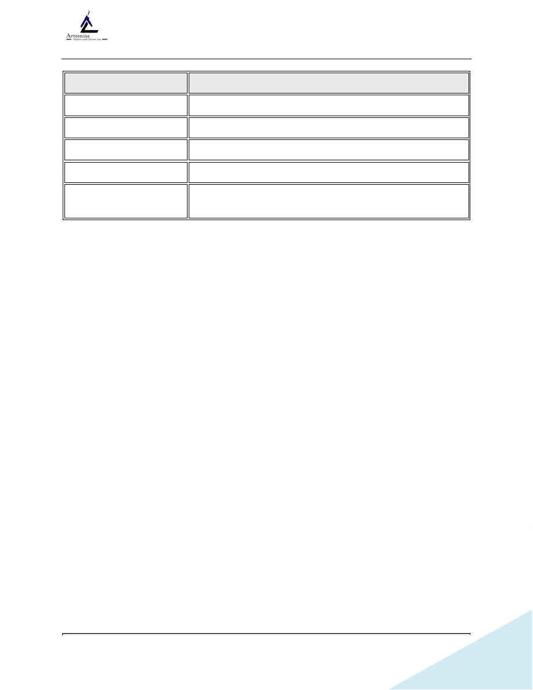
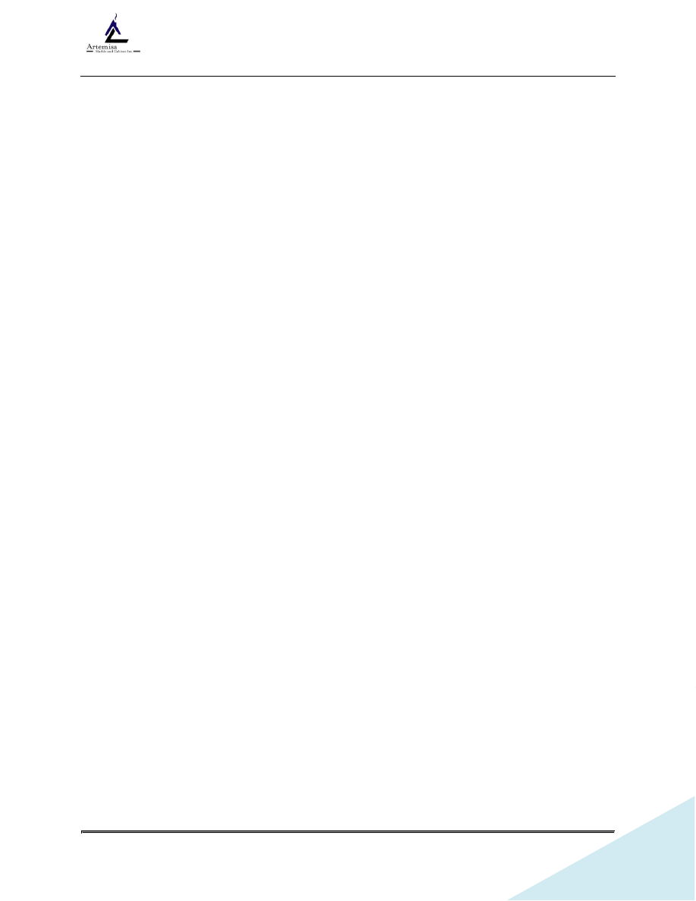
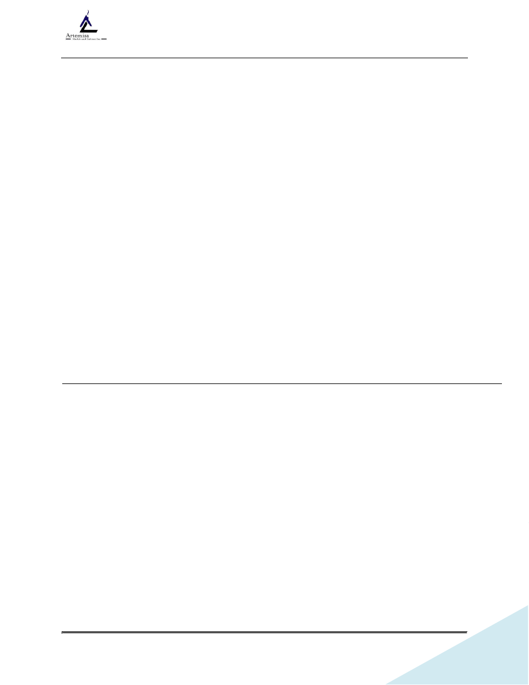
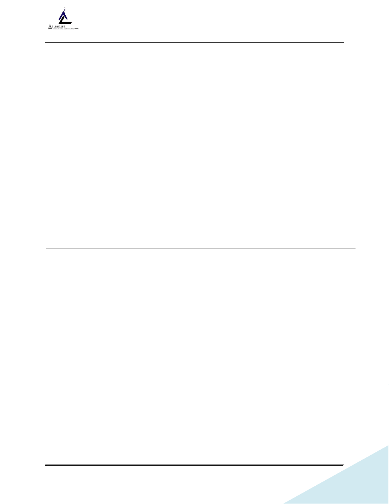
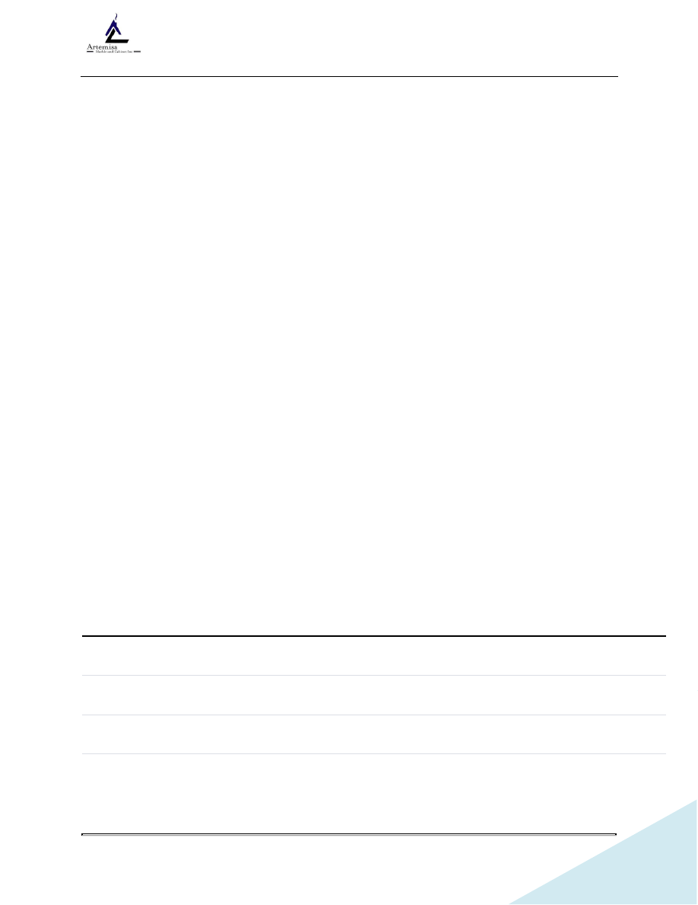

<!DOCTYPE html>
<html xmlns="http://www.w3.org/1999/xhtml" lang="" xml:lang="">
<head>
<title></title>

<meta http-equiv="Content-Type" content="text/html; charset=UTF-8"/>
 <br/>
<style type="text/css">
<!--
	p {margin: 0; padding: 0;}	.ft10{font-size:14px;font-family:Times;color:#000000;}
	.ft11{font-size:8px;font-family:Times;color:#000000;}
	.ft12{font-size:12px;font-family:Times;color:#0e4660;}
	.ft13{font-size:16px;font-family:Times;color:#0e4660;}
	.ft14{font-size:12px;font-family:Times;color:#000000;}
	.ft15{font-size:12px;font-family:Times;color:#000000;}
	.ft16{font-size:16px;font-family:Times;color:#000000;}
-->
</style>
</head>
<body bgcolor="#A0A0A0" vlink="blue" link="blue">
<div id="page1-div" style="position:relative;width:918px;height:1188px;">

<p style="position:absolute;top:57px;left:203px;white-space:nowrap" class="ft10">&#160;</p>
<p style="position:absolute;top:87px;left:811px;white-space:nowrap" class="ft11"><b>&#160;</b></p>
<p style="position:absolute;top:104px;left:108px;white-space:nowrap" class="ft10">&#160;</p>
<p style="position:absolute;top:1089px;left:811px;white-space:nowrap" class="ft10">&#160;</p>
<p style="position:absolute;top:1118px;left:522px;white-space:nowrap" class="ft13"><b>&#160;</b></p>
<p style="position:absolute;top:1127px;left:872px;white-space:nowrap" class="ft10">&#160;</p>
<p style="position:absolute;top:1146px;left:855px;white-space:nowrap" class="ft10">&#160;</p>
<p style="position:absolute;top:866px;left:1104px;white-space:nowrap" class="ft10">&#160;</p>
<p style="position:absolute;top:129px;left:108px;white-space:nowrap" class="ft16"><b>&#160;</b></p>
<p style="position:absolute;top:123px;left:324px;white-space:nowrap" class="ft16"><b>&#160;</b></p>
</div>
</body>
</html>
<!DOCTYPE html>
<html xmlns="http://www.w3.org/1999/xhtml" lang="" xml:lang="">
<head>
<title></title>

<meta http-equiv="Content-Type" content="text/html; charset=UTF-8"/>
 <br/>
<style type="text/css">
<!--
	p {margin: 0; padding: 0;}	.ft20{font-size:14px;font-family:Times;color:#000000;}
	.ft21{font-size:8px;font-family:Times;color:#000000;}
	.ft22{font-size:12px;font-family:Times;color:#0e4660;}
	.ft23{font-size:16px;font-family:Times;color:#0e4660;}
	.ft24{font-size:12px;font-family:Times;color:#000000;}
	.ft25{font-size:12px;font-family:Times;color:#000000;}
	.ft26{font-size:16px;font-family:Times;color:#000000;}
	.ft27{font-size:11px;font-family:Times;color:#000000;}
	.ft28{font-size:16px;font-family:Times;color:#000000;}
	.ft29{font-size:3px;font-family:Times;color:#000000;}
	.ft210{font-size:10px;font-family:Times;color:#000000;}
-->
</style>
</head>
<body bgcolor="#A0A0A0" vlink="blue" link="blue">
<div id="page2-div" style="position:relative;width:918px;height:1188px;">

<p style="position:absolute;top:57px;left:203px;white-space:nowrap" class="ft20">&#160;</p>
<p style="position:absolute;top:74px;left:543px;white-space:nowrap" class="ft21"><b>SOP&#160;BUENAS&#160;PRACTICAS&#160;&#160;EN&#160;FABRICACION&#160;&#160;STONE&#160;</b></p>
<p style="position:absolute;top:87px;left:811px;white-space:nowrap" class="ft21"><b>&#160;</b></p>
<p style="position:absolute;top:104px;left:108px;white-space:nowrap" class="ft20">&#160;</p>
<p style="position:absolute;top:1089px;left:811px;white-space:nowrap" class="ft20">&#160;</p>
<p style="position:absolute;top:1121px;left:398px;white-space:nowrap" class="ft22"><b>Revisión&#160;&#160;6/16/2026</b></p>
<p style="position:absolute;top:1118px;left:522px;white-space:nowrap" class="ft23"><b>&#160;</b></p>
<p style="position:absolute;top:1129px;left:797px;white-space:nowrap" class="ft24">Page&#160;<b>2</b>&#160;of&#160;<b>29</b></p>
<p style="position:absolute;top:1127px;left:874px;white-space:nowrap" class="ft20">&#160;</p>
<p style="position:absolute;top:1146px;left:855px;white-space:nowrap" class="ft20">&#160;</p>
<p style="position:absolute;top:866px;left:1104px;white-space:nowrap" class="ft20">&#160;</p>
<p style="position:absolute;top:123px;left:243px;white-space:nowrap" class="ft26"><b>SOP-BUENAS&#160;PRACTICAS&#160;EN&#160;FABRICACION&#160;STONE&#160;</b></p>
<p style="position:absolute;top:170px;left:108px;white-space:nowrap" class="ft26"><b>&#160;</b></p>
<p style="position:absolute;top:211px;left:108px;white-space:nowrap" class="ft26"><b>MÓDULO&#160;1:&#160;OPERADOR&#160;DE&#160;CENTRO&#160;DE&#160;CORTE&#160;CNC&#160;</b></p>
<p style="position:absolute;top:216px;left:551px;white-space:nowrap" class="ft27"><b>(BRETON&#160;COMBI&#160;-&#160;KMT&#160;WATERJET)</b></p>
<p style="position:absolute;top:211px;left:775px;white-space:nowrap" class="ft26"><b>&#160;</b></p>
<p style="position:absolute;top:258px;left:108px;white-space:nowrap" class="ft26"><b>Objetivo&#160;del&#160;Puesto:</b>&#160;Garantizar&#160;la&#160;ejecución&#160;exacta&#160;del&#160;despiece&#160;y&#160;dimensionado&#160;de&#160;los&#160;</p>
<p style="position:absolute;top:294px;left:108px;white-space:nowrap" class="ft28">slabs&#160;&#160;cargando&#160;&#160;y&#160;verificando&#160;&#160;los&#160;&#160;archivos&#160;DXF&#160;&#160;en&#160;&#160;la&#160;pantalla&#160;&#160;táctil&#160;&#160;<b>SIEMENS&#160;SIMATIC&#160;</b></p>
<p style="position:absolute;top:329px;left:108px;white-space:nowrap" class="ft26"><b>HMI</b>,&#160;&#160;optimizando&#160;&#160;el&#160;&#160;rendimiento&#160;&#160;del&#160;&#160;material,&#160;&#160;controlando&#160;&#160;los&#160;&#160;sistemas&#160;&#160;KMT&#160;&#160;y&#160;</p>
<p style="position:absolute;top:365px;left:108px;white-space:nowrap" class="ft28">previniendo&#160;la&#160;rotura&#160;de&#160;piezas&#160;delicadas&#160;&#160;mediante&#160;la&#160;correcta&#160;&#160;calibración&#160;del&#160;disco&#160;y&#160;el&#160;</p>
<p style="position:absolute;top:402px;left:108px;white-space:nowrap" class="ft28">chorro&#160;de&#160;agua&#160;abrasivo.&#160;</p>
<p style="position:absolute;top:450px;left:108px;white-space:nowrap" class="ft29">&#160;</p>
<p style="position:absolute;top:474px;left:108px;white-space:nowrap" class="ft26"><b>1.1.&#160;Recepción,&#160;Verificación&#160;y&#160;Ajuste&#160;en&#160;Pantalla&#160;(SIEMENS&#160;SIMATIC&#160;HMI)&#160;</b></p>
<p style="position:absolute;top:526px;left:135px;white-space:nowrap" class="ft24">•&#160;</p>
<p style="position:absolute;top:522px;left:162px;white-space:nowrap" class="ft26"><b>Inspección&#160;de&#160;Capas&#160;(Layers)&#160;y&#160;Geometrías:</b>&#160;Revisa&#160;detalladamente&#160;que&#160;las&#160;líneas&#160;</p>
<p style="position:absolute;top:558px;left:162px;white-space:nowrap" class="ft28">de&#160;corte&#160;del&#160;disco,&#160;las&#160;trayectorias&#160;del&#160;Waterjet&#160;y&#160;los&#160;puntos&#160;de&#160;perforación&#160;estén&#160;</p>
<p style="position:absolute;top:594px;left:162px;white-space:nowrap" class="ft28">asignados&#160;a&#160;las&#160;capas&#160;correctas&#160;en&#160;el&#160;software&#160;antes&#160;de&#160;procesar.&#160;</p>
<p style="position:absolute;top:636px;left:189px;white-space:nowrap" class="ft24">o&#160;</p>
<p style="position:absolute;top:629px;left:216px;white-space:nowrap" class="ft28">Riesgo&#160;Operativo:&#160;Si&#160;el&#160;departamento&#160;&#160;de&#160;diseño&#160;exportó&#160;&#160;una&#160;línea&#160;con&#160;un&#160;</p>
<p style="position:absolute;top:666px;left:216px;white-space:nowrap" class="ft28">color&#160;o&#160;capa&#160;equivocada,&#160;&#160;la&#160;máquina&#160;podría&#160;intentar&#160;cortar&#160;un&#160;radio&#160;curvo&#160;</p>
<p style="position:absolute;top:701px;left:216px;white-space:nowrap" class="ft28">estrecho&#160;&#160;con&#160;el&#160;disco&#160;en&#160;lugar&#160;de&#160;&#160;usar&#160;el&#160;Waterjet,&#160;destruyendo&#160;&#160;la&#160;pieza&#160;&#160;y&#160;</p>
<p style="position:absolute;top:737px;left:216px;white-space:nowrap" class="ft28">colisionando&#160;la&#160;herramienta.&#160;</p>
<p style="position:absolute;top:773px;left:216px;white-space:nowrap" class="ft210">&#160;</p>
<p style="position:absolute;top:802px;left:135px;white-space:nowrap" class="ft24">•&#160;</p>
<p style="position:absolute;top:798px;left:162px;white-space:nowrap" class="ft26"><b>Verificación&#160;de&#160;Alertas&#160;del&#160;Sistema&#160;(Ciclo&#160;de&#160;Lubricación):</b>&#160;Antes&#160;&#160;de&#160;&#160;arrancar&#160;</p>
<p style="position:absolute;top:832px;left:162px;white-space:nowrap" class="ft28">cualquier&#160;ciclo,&#160;el&#160;operador&#160;debe&#160;revisar&#160;la&#160;barra&#160;de&#160;estado&#160;superior&#160;de&#160;la&#160;interfaz&#160;</p>
<p style="position:absolute;top:868px;left:162px;white-space:nowrap" class="ft26"><b>SIEMENS&#160;SIMATIC&#160;HMI</b>.&#160;Si&#160;aparece&#160;la&#160;advertencia&#160;<b>Axes&#160;lubrication&#160;cycle&#160;not&#160;ok</b>,&#160;</p>
<p style="position:absolute;top:905px;left:162px;white-space:nowrap" class="ft28">está&#160;&#160;prohibido&#160;&#160;iniciar&#160;el&#160;corte.&#160;Se&#160;debe&#160;&#160;notificar&#160;&#160;a&#160;mantenimiento&#160;&#160;para&#160;purgar&#160;o&#160;</p>
<p style="position:absolute;top:941px;left:162px;white-space:nowrap" class="ft28">rellenar&#160;&#160;el&#160;&#160;sistema&#160;&#160;de&#160;&#160;lubricación&#160;&#160;de&#160;&#160;los&#160;&#160;ejes;&#160;&#160;operar&#160;&#160;con&#160;&#160;esta&#160;&#160;falla&#160;&#160;genera&#160;&#160;un&#160;</p>
<p style="position:absolute;top:977px;left:162px;white-space:nowrap" class="ft28">desgaste&#160;prematuro&#160;y&#160;costoso&#160;en&#160;las&#160;guías&#160;lineales&#160;de&#160;la&#160;Breton.&#160;</p>
<p style="position:absolute;top:1017px;left:135px;white-space:nowrap" class="ft24">•&#160;</p>
<p style="position:absolute;top:1013px;left:162px;white-space:nowrap" class="ft26"><b>Configuración&#160;del&#160;Espesor&#160;del&#160;Material&#160;y&#160;Parámetros&#160;del&#160;Disco:</b>&#160;Asegúrate&#160;de&#160;</p>
<p style="position:absolute;top:1049px;left:162px;white-space:nowrap" class="ft28">que&#160;el&#160;material&#160;seleccionado&#160;&#160;en&#160;pantalla&#160;coincida&#160;&#160;exactamente&#160;&#160;con&#160;la&#160;placa&#160;física&#160;</p>
</div>
</body>
</html>
<!DOCTYPE html>
<html xmlns="http://www.w3.org/1999/xhtml" lang="" xml:lang="">
<head>
<title></title>

<meta http-equiv="Content-Type" content="text/html; charset=UTF-8"/>
 <br/>
<style type="text/css">
<!--
	p {margin: 0; padding: 0;}	.ft30{font-size:14px;font-family:Times;color:#000000;}
	.ft31{font-size:8px;font-family:Times;color:#000000;}
	.ft32{font-size:12px;font-family:Times;color:#0e4660;}
	.ft33{font-size:16px;font-family:Times;color:#0e4660;}
	.ft34{font-size:12px;font-family:Times;color:#000000;}
	.ft35{font-size:12px;font-family:Times;color:#000000;}
	.ft36{font-size:16px;font-family:Times;color:#000000;}
	.ft37{font-size:16px;font-family:Times;color:#000000;}
	.ft38{font-size:7px;font-family:Times;color:#000000;}
	.ft39{font-size:10px;font-family:Times;color:#000000;}
-->
</style>
</head>
<body bgcolor="#A0A0A0" vlink="blue" link="blue">
<div id="page3-div" style="position:relative;width:918px;height:1188px;">

<p style="position:absolute;top:57px;left:203px;white-space:nowrap" class="ft30">&#160;</p>
<p style="position:absolute;top:74px;left:543px;white-space:nowrap" class="ft31"><b>SOP&#160;BUENAS&#160;PRACTICAS&#160;&#160;EN&#160;FABRICACION&#160;&#160;STONE&#160;</b></p>
<p style="position:absolute;top:87px;left:811px;white-space:nowrap" class="ft31"><b>&#160;</b></p>
<p style="position:absolute;top:104px;left:108px;white-space:nowrap" class="ft30">&#160;</p>
<p style="position:absolute;top:1089px;left:811px;white-space:nowrap" class="ft30">&#160;</p>
<p style="position:absolute;top:1121px;left:398px;white-space:nowrap" class="ft32"><b>Revisión&#160;&#160;6/16/2026</b></p>
<p style="position:absolute;top:1118px;left:522px;white-space:nowrap" class="ft33"><b>&#160;</b></p>
<p style="position:absolute;top:1129px;left:797px;white-space:nowrap" class="ft34">Page&#160;<b>3</b>&#160;of&#160;<b>29</b></p>
<p style="position:absolute;top:1127px;left:874px;white-space:nowrap" class="ft30">&#160;</p>
<p style="position:absolute;top:1146px;left:855px;white-space:nowrap" class="ft30">&#160;</p>
<p style="position:absolute;top:866px;left:1104px;white-space:nowrap" class="ft30">&#160;</p>
<p style="position:absolute;top:122px;left:162px;white-space:nowrap" class="ft36">(ej.&#160;<b>Quartz&#160;2&#160;cm</b>)&#160;y&#160;verifica&#160;que&#160;el&#160;parámetro&#160;del&#160;grosor&#160;del&#160;disco&#160;(ej.&#160;<b>0.750&#34;</b>)&#160;esté&#160;</p>
<p style="position:absolute;top:158px;left:162px;white-space:nowrap" class="ft36">correctamente&#160;&#160;ingresado&#160;para&#160;que&#160;las&#160;coordenadas&#160;&#160;de&#160;compensación&#160;&#160;del&#160;nesting&#160;</p>
<p style="position:absolute;top:194px;left:162px;white-space:nowrap" class="ft36">sean&#160;precisas.&#160;</p>
<p style="position:absolute;top:230px;left:162px;white-space:nowrap" class="ft38">&#160;</p>
<p style="position:absolute;top:249px;left:108px;white-space:nowrap" class="ft37"><b>1.2.&#160;Cuidado&#160;Crítico&#160;del&#160;Activo&#160;(Sistemas&#160;KMT&#160;y&#160;Climatización)&#160;</b></p>
<p style="position:absolute;top:301px;left:135px;white-space:nowrap" class="ft34">•&#160;</p>
<p style="position:absolute;top:296px;left:162px;white-space:nowrap" class="ft37"><b>El&#160;enemigo&#160;número&#160;uno:&#160;El&#160;agua&#160;sucia&#160;en&#160;alta&#160;presión.</b>&#160;El&#160;agua&#160;que&#160;alimenta&#160;la&#160;</p>
<p style="position:absolute;top:332px;left:162px;white-space:nowrap" class="ft36">bomba&#160;intensificadora&#160;KMT&#160;debe&#160;ser&#160;estrictamente&#160;desmineralizada&#160;y&#160;filtrada.&#160;Una&#160;</p>
<p style="position:absolute;top:367px;left:162px;white-space:nowrap" class="ft36">partícula&#160;microscópica&#160;de&#160;piedra&#160;reciclada&#160;actuará&#160;como&#160;un&#160;proyectil&#160;dentro&#160;de&#160;la&#160;</p>
<p style="position:absolute;top:403px;left:162px;white-space:nowrap" class="ft36">boquilla,&#160;destruyendo&#160;el&#160;orificio&#160;de&#160;diamante&#160;en&#160;minutos&#160;y&#160;erosionando&#160;las&#160;juntas&#160;</p>
<p style="position:absolute;top:439px;left:162px;white-space:nowrap" class="ft36">cerámicas&#160;de&#160;la&#160;bomba.&#160;</p>
<p style="position:absolute;top:476px;left:162px;white-space:nowrap" class="ft39">&#160;</p>
<p style="position:absolute;top:504px;left:135px;white-space:nowrap" class="ft34">•&#160;</p>
<p style="position:absolute;top:500px;left:162px;white-space:nowrap" class="ft37"><b>Control&#160;&#160;de&#160;&#160;Temperatura&#160;&#160;en&#160;&#160;Gabinete&#160;&#160;Eléctrico:</b>&#160;&#160;Monitorear&#160;&#160;el&#160;&#160;estado&#160;&#160;del&#160;</p>
<p style="position:absolute;top:535px;left:162px;white-space:nowrap" class="ft36">climatizador/aire&#160;&#160;acondicionado&#160;&#160;integrado&#160;&#160;en&#160;&#160;el&#160;&#160;tablero&#160;&#160;eléctrico&#160;&#160;de&#160;&#160;la&#160;&#160;Breton&#160;</p>
<p style="position:absolute;top:571px;left:162px;white-space:nowrap" class="ft36">(unidad&#160;con&#160;display&#160;digital,&#160;ej.&#160;configurado&#160;a&#160;<b>89°F</b>&#160;/&#160;~31°C).&#160;Si&#160;el&#160;climatizador&#160;falla&#160;</p>
<p style="position:absolute;top:607px;left:162px;white-space:nowrap" class="ft36">o&#160;muestra&#160;temperaturas&#160;extremas,&#160;los&#160;drivers&#160;y&#160;componentes&#160;&#160;Siemens&#160;del&#160;PLC&#160;se&#160;</p>
<p style="position:absolute;top:643px;left:162px;white-space:nowrap" class="ft36">sobrecalentarán,&#160;deteniendo&#160;&#160;la&#160;máquina&#160;a&#160;mitad&#160;de&#160;un&#160;corte.&#160;</p>
<p style="position:absolute;top:680px;left:108px;white-space:nowrap" class="ft39">&#160;</p>
<p style="position:absolute;top:707px;left:135px;white-space:nowrap" class="ft34">•&#160;</p>
<p style="position:absolute;top:703px;left:162px;white-space:nowrap" class="ft37"><b>Inspección&#160;de&#160;la&#160;Tolva&#160;KMT&#160;&#160;ABRALINE&#160;&#160;V:</b>&#160;Antes&#160;&#160;de&#160;&#160;iniciar&#160;el&#160;&#160;turno,&#160;&#160;limpia&#160;la&#160;</p>
<p style="position:absolute;top:739px;left:162px;white-space:nowrap" class="ft36">superficie&#160;exterior&#160;de&#160;la&#160;tolva&#160;de&#160;granate&#160;para&#160;evitar&#160;que&#160;entre&#160;polvo&#160;o&#160;humedad&#160;al&#160;</p>
<p style="position:absolute;top:775px;left:162px;white-space:nowrap" class="ft36">contenedor&#160;&#160;al&#160;&#160;rellenarlo.&#160;&#160;Verifica&#160;&#160;visualmente&#160;&#160;las&#160;&#160;mangueras&#160;&#160;de&#160;&#160;transporte&#160;</p>
<p style="position:absolute;top:811px;left:162px;white-space:nowrap" class="ft36">neumático&#160;inferiores&#160;que&#160;dosifican&#160;el&#160;abrasivo&#160;hacia&#160;el&#160;cabezal&#160;de&#160;corte.&#160;</p>
<p style="position:absolute;top:847px;left:162px;white-space:nowrap" class="ft36">&#160;</p>
<p style="position:absolute;top:884px;left:108px;white-space:nowrap" class="ft37"><b>1.3.&#160;Técnica&#160;Práctica&#160;de&#160;Excelencia&#160;</b></p>
<p style="position:absolute;top:936px;left:135px;white-space:nowrap" class="ft34">•&#160;</p>
<p style="position:absolute;top:932px;left:162px;white-space:nowrap" class="ft37"><b>Corte&#160;</b></p>
<p style="position:absolute;top:932px;left:239px;white-space:nowrap" class="ft37"><b>de&#160;</b></p>
<p style="position:absolute;top:932px;left:290px;white-space:nowrap" class="ft37"><b>Alivio&#160;</b></p>
<p style="position:absolute;top:932px;left:369px;white-space:nowrap" class="ft37"><b>Obligatorio:</b>&#160;</p>
<p style="position:absolute;top:932px;left:504px;white-space:nowrap" class="ft36">En&#160;</p>
<p style="position:absolute;top:932px;left:553px;white-space:nowrap" class="ft36">materiales&#160;</p>
<p style="position:absolute;top:932px;left:664px;white-space:nowrap" class="ft36">del&#160;</p>
<p style="position:absolute;top:932px;left:718px;white-space:nowrap" class="ft36">Grupo&#160;</p>
<p style="position:absolute;top:932px;left:798px;white-space:nowrap" class="ft36">D&#160;</p>
<p style="position:absolute;top:968px;left:162px;white-space:nowrap" class="ft36">(Sinterizados/Dekton/Porcelana),&#160;&#160;nunca&#160;hagas&#160;el&#160;nesting&#160;pegado&#160;al&#160;borde&#160;original&#160;</p>
<p style="position:absolute;top:1002px;left:162px;white-space:nowrap" class="ft36">de&#160;&#160;fábrica.&#160;&#160;Debes&#160;&#160;programar&#160;&#160;un&#160;&#160;corte&#160;&#160;perimetral&#160;&#160;de&#160;&#160;limpieza&#160;&#160;de&#160;&#160;al&#160;&#160;menos&#160;&#160;1&#160;</p>
</div>
</body>
</html>
<!DOCTYPE html>
<html xmlns="http://www.w3.org/1999/xhtml" lang="" xml:lang="">
<head>
<title></title>

<meta http-equiv="Content-Type" content="text/html; charset=UTF-8"/>
 <br/>
<style type="text/css">
<!--
	p {margin: 0; padding: 0;}	.ft40{font-size:14px;font-family:Times;color:#000000;}
	.ft41{font-size:8px;font-family:Times;color:#000000;}
	.ft42{font-size:12px;font-family:Times;color:#0e4660;}
	.ft43{font-size:16px;font-family:Times;color:#0e4660;}
	.ft44{font-size:12px;font-family:Times;color:#000000;}
	.ft45{font-size:12px;font-family:Times;color:#000000;}
	.ft46{font-size:16px;font-family:Times;color:#000000;}
	.ft47{font-size:8px;font-family:Times;color:#000000;}
	.ft48{font-size:16px;font-family:Times;color:#000000;}
	.ft49{font-size:7px;font-family:Times;color:#000000;}
	.ft410{font-size:11px;font-family:Times;color:#000000;}
-->
</style>
</head>
<body bgcolor="#A0A0A0" vlink="blue" link="blue">
<div id="page4-div" style="position:relative;width:918px;height:1188px;">

<p style="position:absolute;top:57px;left:203px;white-space:nowrap" class="ft40">&#160;</p>
<p style="position:absolute;top:74px;left:543px;white-space:nowrap" class="ft41"><b>SOP&#160;BUENAS&#160;PRACTICAS&#160;&#160;EN&#160;FABRICACION&#160;&#160;STONE&#160;</b></p>
<p style="position:absolute;top:87px;left:811px;white-space:nowrap" class="ft41"><b>&#160;</b></p>
<p style="position:absolute;top:104px;left:108px;white-space:nowrap" class="ft40">&#160;</p>
<p style="position:absolute;top:1089px;left:811px;white-space:nowrap" class="ft40">&#160;</p>
<p style="position:absolute;top:1121px;left:398px;white-space:nowrap" class="ft42"><b>Revisión&#160;&#160;6/16/2026</b></p>
<p style="position:absolute;top:1118px;left:522px;white-space:nowrap" class="ft43"><b>&#160;</b></p>
<p style="position:absolute;top:1129px;left:797px;white-space:nowrap" class="ft44">Page&#160;<b>4</b>&#160;of&#160;<b>29</b></p>
<p style="position:absolute;top:1127px;left:875px;white-space:nowrap" class="ft40">&#160;</p>
<p style="position:absolute;top:1146px;left:855px;white-space:nowrap" class="ft40">&#160;</p>
<p style="position:absolute;top:866px;left:1104px;white-space:nowrap" class="ft40">&#160;</p>
<p style="position:absolute;top:122px;left:162px;white-space:nowrap" class="ft46">pulgada&#160;&#160;(2.5&#160;cm)&#160;en&#160;&#160;los&#160;cuatro&#160;&#160;lados&#160;&#160;del&#160;slab&#160;&#160;para&#160;liberar&#160;las&#160;tensiones&#160;&#160;internas&#160;</p>
<p style="position:absolute;top:158px;left:162px;white-space:nowrap" class="ft46">acumuladas&#160;durante&#160;el&#160;proceso&#160;de&#160;horneado&#160;en&#160;fábrica.&#160;</p>
<p style="position:absolute;top:195px;left:162px;white-space:nowrap" class="ft47">&#160;</p>
<p style="position:absolute;top:220px;left:135px;white-space:nowrap" class="ft44">•&#160;</p>
<p style="position:absolute;top:215px;left:162px;white-space:nowrap" class="ft48"><b>Secuencia&#160;Inteligente&#160;de&#160;&#160;Corte:</b>&#160;&#160;Configurar&#160;&#160;el&#160;&#160;software&#160;&#160;para&#160;&#160;que&#160;&#160;el&#160;&#160;Waterjet&#160;</p>
<p style="position:absolute;top:251px;left:162px;white-space:nowrap" class="ft46">ejecute&#160;&#160;<b>primero</b>&#160;&#160;todas&#160;&#160;las&#160;&#160;perforaciones&#160;&#160;internas,&#160;&#160;radios,&#160;&#160;esquinas&#160;&#160;internas&#160;&#160;y&#160;</p>
<p style="position:absolute;top:287px;left:162px;white-space:nowrap" class="ft46">piercings.&#160;Una&#160;vez&#160;liberada&#160;&#160;la&#160;tensión&#160;&#160;interna&#160;del&#160;material&#160;a&#160;través&#160;del&#160;&#160;chorro&#160;de&#160;</p>
<p style="position:absolute;top:323px;left:162px;white-space:nowrap" class="ft46">agua,&#160;se&#160;ejecutan&#160;los&#160;cortes&#160;rectos&#160;perimetrales&#160;con&#160;el&#160;disco&#160;de&#160;diamante.&#160;</p>
<p style="position:absolute;top:360px;left:108px;white-space:nowrap" class="ft47">&#160;</p>
<p style="position:absolute;top:384px;left:135px;white-space:nowrap" class="ft44">•&#160;</p>
<p style="position:absolute;top:380px;left:162px;white-space:nowrap" class="ft48"><b>Gestión&#160;del&#160;Sistema&#160;de&#160;Ventosas&#160;(Flymove):</b>&#160;Asegurarse&#160;de&#160;que&#160;la&#160;superficie&#160;del&#160;</p>
<p style="position:absolute;top:416px;left:162px;white-space:nowrap" class="ft46">slab&#160;esté&#160;limpia&#160;de&#160;lodo&#160;antes&#160;de&#160;que&#160;el&#160;cabezal&#160;baje&#160;las&#160;ventosas.&#160;El&#160;lodo&#160;rompe&#160;</p>
<p style="position:absolute;top:452px;left:162px;white-space:nowrap" class="ft46">el&#160;&#160;vacío;&#160;&#160;si&#160;&#160;una&#160;&#160;pieza&#160;&#160;se&#160;&#160;suelta&#160;&#160;a&#160;&#160;mitad&#160;&#160;del&#160;&#160;viaje,&#160;&#160;colisionará&#160;&#160;con&#160;&#160;el&#160;&#160;disco&#160;&#160;en&#160;</p>
<p style="position:absolute;top:488px;left:162px;white-space:nowrap" class="ft46">movimiento,&#160;doblando&#160;&#160;el&#160;eje&#160;del&#160;husillo.&#160;</p>
<p style="position:absolute;top:524px;left:162px;white-space:nowrap" class="ft49">&#160;</p>
<p style="position:absolute;top:543px;left:108px;white-space:nowrap" class="ft48"><b>1.4.&#160;Calibración&#160;y&#160;Cuidado&#160;del&#160;Sistema&#160;KMT&#160;Waterjet&#160;(Chorro&#160;de&#160;Agua&#160;+&#160;Abrasivo)&#160;</b></p>
<p style="position:absolute;top:593px;left:135px;white-space:nowrap" class="ft44">•&#160;</p>
<p style="position:absolute;top:589px;left:162px;white-space:nowrap" class="ft48"><b>Inspección&#160;&#160;Diaria&#160;&#160;del&#160;&#160;Orificio&#160;&#160;de&#160;&#160;Diamante&#160;&#160;y&#160;&#160;Tubo&#160;&#160;de&#160;&#160;Mezcla:</b>&#160;&#160;Verifica&#160;</p>
<p style="position:absolute;top:625px;left:162px;white-space:nowrap" class="ft46">visualmente&#160;que&#160;el&#160;chorro&#160;salga&#160;perfectamente&#160;&#160;cilíndrico&#160;y&#160;alineado&#160;realizando&#160;un&#160;</p>
<p style="position:absolute;top:661px;left:162px;white-space:nowrap" class="ft46">disparo&#160;de&#160;prueba&#160;corto.&#160;Un&#160;orificio&#160;desgastado&#160;o&#160;descentrado&#160;desvía&#160;la&#160;trayectoria&#160;</p>
<p style="position:absolute;top:697px;left:162px;white-space:nowrap" class="ft46">del&#160;&#160;chorro&#160;&#160;de&#160;&#160;agua&#160;&#160;e&#160;&#160;incrementa&#160;&#160;su&#160;&#160;diámetro,&#160;&#160;provocando&#160;&#160;desportillamientos&#160;</p>
<p style="position:absolute;top:733px;left:162px;white-space:nowrap" class="ft46">severos&#160;en&#160;los&#160;bordes&#160;de&#160;la&#160;piedra.&#160;</p>
<p style="position:absolute;top:770px;left:162px;white-space:nowrap" class="ft410">&#160;</p>
<p style="position:absolute;top:801px;left:135px;white-space:nowrap" class="ft44">•&#160;</p>
<p style="position:absolute;top:796px;left:162px;white-space:nowrap" class="ft48"><b>Control&#160;Estricto&#160;de&#160;la&#160;Dosificación&#160;de&#160;Granate&#160;(Abrasivo&#160;MESH&#160;80):</b>&#160;Monitorea&#160;</p>
<p style="position:absolute;top:832px;left:162px;white-space:nowrap" class="ft46">que&#160;&#160;el&#160;flujo&#160;&#160;de&#160;abrasivo&#160;proveniente&#160;&#160;de&#160;&#160;la&#160;tolva&#160;</p>
<p style="position:absolute;top:831px;left:558px;white-space:nowrap" class="ft46">ABRALINE&#160;V&#160;sea&#160;continuo.&#160;&#160;Si&#160;el&#160;</p>
<p style="position:absolute;top:868px;left:162px;white-space:nowrap" class="ft46">agua&#160;&#160;sale&#160;&#160;a&#160;&#160;ultra-alta&#160;&#160;presión&#160;&#160;sin&#160;&#160;el&#160;&#160;abrasivo,&#160;no&#160;&#160;cortará&#160;&#160;la&#160;&#160;piedra;&#160;&#160;en&#160;&#160;su&#160;&#160;lugar,&#160;</p>
<p style="position:absolute;top:905px;left:162px;white-space:nowrap" class="ft46">golpeará&#160;&#160;la&#160;superficie&#160;como&#160;un&#160;martillo&#160;hidráulico,&#160;quebrando&#160;&#160;instantáneamente&#160;</p>
<p style="position:absolute;top:941px;left:162px;white-space:nowrap" class="ft46">el&#160;slab&#160;(especialmente&#160;&#160;en&#160;materiales&#160;sinterizados).&#160;</p>
<p style="position:absolute;top:978px;left:108px;white-space:nowrap" class="ft48"><b>&#160;</b></p>
<p style="position:absolute;top:1025px;left:108px;white-space:nowrap" class="ft48"><b>&#160;</b></p>
</div>
</body>
</html>
<!DOCTYPE html>
<html xmlns="http://www.w3.org/1999/xhtml" lang="" xml:lang="">
<head>
<title></title>

<meta http-equiv="Content-Type" content="text/html; charset=UTF-8"/>
 <br/>
<style type="text/css">
<!--
	p {margin: 0; padding: 0;}	.ft50{font-size:14px;font-family:Times;color:#000000;}
	.ft51{font-size:8px;font-family:Times;color:#000000;}
	.ft52{font-size:12px;font-family:Times;color:#0e4660;}
	.ft53{font-size:16px;font-family:Times;color:#0e4660;}
	.ft54{font-size:12px;font-family:Times;color:#000000;}
	.ft55{font-size:12px;font-family:Times;color:#000000;}
	.ft56{font-size:16px;font-family:Times;color:#000000;}
	.ft57{font-size:16px;font-family:Times;color:#000000;}
-->
</style>
</head>
<body bgcolor="#A0A0A0" vlink="blue" link="blue">
<div id="page5-div" style="position:relative;width:918px;height:1188px;">

<p style="position:absolute;top:57px;left:203px;white-space:nowrap" class="ft50">&#160;</p>
<p style="position:absolute;top:74px;left:543px;white-space:nowrap" class="ft51"><b>SOP&#160;BUENAS&#160;PRACTICAS&#160;&#160;EN&#160;FABRICACION&#160;&#160;STONE&#160;</b></p>
<p style="position:absolute;top:87px;left:811px;white-space:nowrap" class="ft51"><b>&#160;</b></p>
<p style="position:absolute;top:104px;left:108px;white-space:nowrap" class="ft50">&#160;</p>
<p style="position:absolute;top:1089px;left:811px;white-space:nowrap" class="ft50">&#160;</p>
<p style="position:absolute;top:1121px;left:398px;white-space:nowrap" class="ft52"><b>Revisión&#160;&#160;6/16/2026</b></p>
<p style="position:absolute;top:1118px;left:522px;white-space:nowrap" class="ft53"><b>&#160;</b></p>
<p style="position:absolute;top:1129px;left:797px;white-space:nowrap" class="ft54">Page&#160;<b>5</b>&#160;of&#160;<b>29</b></p>
<p style="position:absolute;top:1127px;left:874px;white-space:nowrap" class="ft50">&#160;</p>
<p style="position:absolute;top:1146px;left:855px;white-space:nowrap" class="ft50">&#160;</p>
<p style="position:absolute;top:866px;left:1104px;white-space:nowrap" class="ft50">&#160;</p>
<p style="position:absolute;top:123px;left:108px;white-space:nowrap" class="ft56"><b>1.5.&#160;Operación&#160;del&#160;Cabezal&#160;de&#160;Disco&#160;en&#160;la&#160;Breton&#160;Combi&#160;</b></p>
<p style="position:absolute;top:174px;left:135px;white-space:nowrap" class="ft54">•&#160;</p>
<p style="position:absolute;top:170px;left:162px;white-space:nowrap" class="ft56"><b>Medición&#160;&#160;Automática&#160;&#160;del&#160;&#160;Diámetro&#160;&#160;del&#160;&#160;Disco&#160;&#160;(Calibración&#160;de&#160;&#160;Desgaste):</b>&#160;</p>
<p style="position:absolute;top:206px;left:162px;white-space:nowrap" class="ft57">Ejecuta&#160;&#160;el&#160;&#160;ciclo&#160;&#160;de&#160;&#160;medición&#160;&#160;en&#160;&#160;el&#160;&#160;sensor&#160;de&#160;&#160;la&#160;&#160;máquina&#160;&#160;al&#160;&#160;iniciar&#160;el&#160;&#160;turno&#160;&#160;o&#160;&#160;al&#160;</p>
<p style="position:absolute;top:242px;left:162px;white-space:nowrap" class="ft57">cambiar&#160;de&#160;disco&#160;para&#160;asegurar&#160;que&#160;la&#160;profundidad&#160;calculada&#160;en&#160;base&#160;al&#160;DXF&#160;corte&#160;</p>
<p style="position:absolute;top:278px;left:162px;white-space:nowrap" class="ft57">el&#160;espesor&#160;completo&#160;sin&#160;colisionar&#160;con&#160;la&#160;mesa.&#160;</p>
<p style="position:absolute;top:314px;left:162px;white-space:nowrap" class="ft57">&#160;</p>
<p style="position:absolute;top:355px;left:135px;white-space:nowrap" class="ft54">•&#160;</p>
<p style="position:absolute;top:350px;left:162px;white-space:nowrap" class="ft56"><b>Aplicación&#160;&#160;de&#160;&#160;Pasadas&#160;&#160;Múltiples&#160;&#160;(Step-Cutting)&#160;&#160;en&#160;&#160;Materiales&#160;&#160;Duros:</b>&#160;</p>
<p style="position:absolute;top:385px;left:162px;white-space:nowrap" class="ft57">Configura&#160;&#160;el&#160;&#160;programa&#160;&#160;para&#160;&#160;realizar&#160;&#160;cortes&#160;&#160;en&#160;&#160;varias&#160;&#160;pasadas&#160;&#160;de&#160;&#160;menor&#160;</p>
<p style="position:absolute;top:421px;left:162px;white-space:nowrap" class="ft57">profundidad&#160;&#160;al&#160;trabajar&#160;con&#160;Quartzite&#160;o&#160;Granitos&#160;exóticos&#160;&#160;para&#160;no&#160;forzar&#160;las&#160;RPM&#160;</p>
<p style="position:absolute;top:457px;left:162px;white-space:nowrap" class="ft57">del&#160;husillo&#160;ni&#160;doblar&#160;el&#160;núcleo&#160;de&#160;acero&#160;del&#160;disco.&#160;</p>
<p style="position:absolute;top:493px;left:108px;white-space:nowrap" class="ft57">&#160;</p>
<p style="position:absolute;top:531px;left:108px;white-space:nowrap" class="ft56"><b>1.6.&#160;Estrategia&#160;de&#160;Corte&#160;Combi&#160;para&#160;Evitar&#160;Roturas&#160;</b></p>
<p style="position:absolute;top:582px;left:135px;white-space:nowrap" class="ft54">•&#160;</p>
<p style="position:absolute;top:578px;left:162px;white-space:nowrap" class="ft56"><b>Pre-perforación&#160;(Piercing)&#160;Obligatoria&#160;con&#160;Waterjet&#160;en&#160;Modo&#160;de&#160;Baja&#160;Presión:</b>&#160;</p>
<p style="position:absolute;top:614px;left:162px;white-space:nowrap" class="ft57">Realiza&#160;las&#160;perforaciones&#160;&#160;iniciales&#160;para&#160;los&#160;vaciados&#160;de&#160;sinks&#160;o&#160;grifos&#160;utilizando&#160;la&#160;</p>
<p style="position:absolute;top:650px;left:162px;white-space:nowrap" class="ft57">rampa&#160;de&#160;baja&#160;presión&#160;de&#160;la&#160;KMT,&#160;aplicando&#160;el&#160;abrasivo&#160;antes&#160;de&#160;abrir&#160;el&#160;agua&#160;por&#160;</p>
<p style="position:absolute;top:686px;left:162px;white-space:nowrap" class="ft57">completo.&#160;&#160;Entrar&#160;&#160;directamente&#160;&#160;con&#160;&#160;ultra-alta&#160;&#160;presión&#160;&#160;genera&#160;&#160;un&#160;&#160;impacto&#160;</p>
<p style="position:absolute;top:721px;left:162px;white-space:nowrap" class="ft57">destructivo&#160;que&#160;abre&#160;grietas&#160;radiales&#160;en&#160;materiales&#160;sinterizados.&#160;</p>
<p style="position:absolute;top:757px;left:162px;white-space:nowrap" class="ft57">&#160;</p>
<p style="position:absolute;top:797px;left:135px;white-space:nowrap" class="ft54">•&#160;</p>
<p style="position:absolute;top:793px;left:162px;white-space:nowrap" class="ft56"><b>Secuencia&#160;&#160;de&#160;&#160;Corte&#160;&#160;Mixta&#160;&#160;Correcta&#160;&#160;(Primero&#160;&#160;Waterjet,&#160;&#160;Después&#160;&#160;Disco):</b>&#160;</p>
<p style="position:absolute;top:828px;left:162px;white-space:nowrap" class="ft57">(Corrección&#160;de&#160;Seguridad)&#160;El&#160;operador&#160;debe&#160;asegurar&#160;en&#160;el&#160;software&#160;que&#160;los&#160;cortes&#160;</p>
<p style="position:absolute;top:865px;left:162px;white-space:nowrap" class="ft57">internos,&#160;radios&#160;y&#160;vaciados&#160;con&#160;chorro&#160;de&#160;agua&#160;se&#160;realicen&#160;al&#160;inicio&#160;del&#160;programa.&#160;</p>
<p style="position:absolute;top:901px;left:162px;white-space:nowrap" class="ft57">Si&#160;se&#160;realizan&#160;primero&#160;&#160;los&#160;cortes&#160;&#160;perimetrales&#160;&#160;largos&#160;con&#160;&#160;el&#160;&#160;disco,&#160;el&#160;&#160;slab&#160;pierde&#160;</p>
<p style="position:absolute;top:937px;left:162px;white-space:nowrap" class="ft57">soporte&#160;&#160;estructural&#160;perimetral;&#160;al&#160;aplicar&#160;posteriormente&#160;&#160;la&#160;presión&#160;localizada&#160;&#160;del&#160;</p>
<p style="position:absolute;top:973px;left:162px;white-space:nowrap" class="ft57">waterjet&#160;en&#160;los&#160;centros,&#160;las&#160;tensiones&#160;acumuladas&#160;romperán&#160;los&#160;puentes&#160;estrechos&#160;</p>
<p style="position:absolute;top:1009px;left:162px;white-space:nowrap" class="ft57">de&#160;la&#160;pieza.&#160;</p>
<p style="position:absolute;top:1045px;left:162px;white-space:nowrap" class="ft57">&#160;</p>
</div>
</body>
</html>
<!DOCTYPE html>
<html xmlns="http://www.w3.org/1999/xhtml" lang="" xml:lang="">
<head>
<title></title>

<meta http-equiv="Content-Type" content="text/html; charset=UTF-8"/>
 <br/>
<style type="text/css">
<!--
	p {margin: 0; padding: 0;}	.ft60{font-size:14px;font-family:Times;color:#000000;}
	.ft61{font-size:8px;font-family:Times;color:#000000;}
	.ft62{font-size:12px;font-family:Times;color:#0e4660;}
	.ft63{font-size:16px;font-family:Times;color:#0e4660;}
	.ft64{font-size:12px;font-family:Times;color:#000000;}
	.ft65{font-size:12px;font-family:Times;color:#000000;}
	.ft66{font-size:16px;font-family:Times;color:#000000;}
	.ft67{font-size:16px;font-family:Times;color:#000000;}
-->
</style>
</head>
<body bgcolor="#A0A0A0" vlink="blue" link="blue">
<div id="page6-div" style="position:relative;width:918px;height:1188px;">

<p style="position:absolute;top:57px;left:203px;white-space:nowrap" class="ft60">&#160;</p>
<p style="position:absolute;top:74px;left:543px;white-space:nowrap" class="ft61"><b>SOP&#160;BUENAS&#160;PRACTICAS&#160;&#160;EN&#160;FABRICACION&#160;&#160;STONE&#160;</b></p>
<p style="position:absolute;top:87px;left:811px;white-space:nowrap" class="ft61"><b>&#160;</b></p>
<p style="position:absolute;top:104px;left:108px;white-space:nowrap" class="ft60">&#160;</p>
<p style="position:absolute;top:1089px;left:811px;white-space:nowrap" class="ft60">&#160;</p>
<p style="position:absolute;top:1121px;left:398px;white-space:nowrap" class="ft62"><b>Revisión&#160;&#160;6/16/2026</b></p>
<p style="position:absolute;top:1118px;left:522px;white-space:nowrap" class="ft63"><b>&#160;</b></p>
<p style="position:absolute;top:1129px;left:797px;white-space:nowrap" class="ft64">Page&#160;<b>6</b>&#160;of&#160;<b>29</b></p>
<p style="position:absolute;top:1127px;left:875px;white-space:nowrap" class="ft60">&#160;</p>
<p style="position:absolute;top:1146px;left:855px;white-space:nowrap" class="ft60">&#160;</p>
<p style="position:absolute;top:866px;left:1104px;white-space:nowrap" class="ft60">&#160;</p>
<p style="position:absolute;top:123px;left:108px;white-space:nowrap" class="ft66"><b>1.7.&#160;Resumen&#160;del&#160;Flujo&#160;de&#160;Trabajo&#160;Técnico&#160;(Validado)&#160;</b></p>
<p style="position:absolute;top:175px;left:146px;white-space:nowrap" class="ft65"><b>Fase&#160;del&#160;Proceso&#160;</b></p>
<p style="position:absolute;top:175px;left:443px;white-space:nowrap" class="ft65"><b>Acción&#160;de&#160;Control&#160;del&#160;Operador&#160;</b></p>
<p style="position:absolute;top:224px;left:112px;white-space:nowrap" class="ft65"><b>1.&#160;Verificación&#160;HMI</b>&#160;</p>
<p style="position:absolute;top:210px;left:301px;white-space:nowrap" class="ft64">Revisar&#160;pantalla&#160;&#160;<b>SIEMENS&#160;&#160;SIMATIC</b>&#160;&#160;y&#160;confirmar&#160;que&#160;no&#160;exista&#160;alerta&#160;de&#160;</p>
<p style="position:absolute;top:240px;left:301px;white-space:nowrap" class="ft64">lubricación&#160;de&#160;ejes&#160;(Axes&#160;lubrication&#160;ok).&#160;</p>
<p style="position:absolute;top:290px;left:112px;white-space:nowrap" class="ft65"><b>2.&#160;Importación&#160;&#160;y&#160;Capas</b>&#160;</p>
<p style="position:absolute;top:275px;left:301px;white-space:nowrap" class="ft64">Cargar&#160;archivo&#160;DXF&#160;y&#160;validar&#160;asignación&#160;correcta&#160;de&#160;líneas&#160;a&#160;Disco&#160;o&#160;</p>
<p style="position:absolute;top:306px;left:301px;white-space:nowrap" class="ft64">Waterjet.&#160;</p>
<p style="position:absolute;top:340px;left:112px;white-space:nowrap" class="ft65"><b>3.&#160;Configuración&#160;de&#160;</b></p>
<p style="position:absolute;top:371px;left:128px;white-space:nowrap" class="ft65"><b>Parámetros</b>&#160;</p>
<p style="position:absolute;top:355px;left:301px;white-space:nowrap" class="ft64">Validar&#160;el&#160;tipo&#160;de&#160;material&#160;(ej.&#160;QUARTZ&#160;2CM)&#160;y&#160;espesor&#160;del&#160;disco&#160;(0.750&#34;).&#160;</p>
<p style="position:absolute;top:420px;left:112px;white-space:nowrap" class="ft65"><b>4.&#160;Calibración&#160;KMT</b>&#160;</p>
<p style="position:absolute;top:406px;left:301px;white-space:nowrap" class="ft64">Asegurar&#160;carga&#160;de&#160;granate&#160;limpio&#160;en&#160;la&#160;tolva&#160;<b>ABRALINE&#160;&#160;V</b>&#160;e&#160;inspeccionar&#160;</p>
<p style="position:absolute;top:435px;left:301px;white-space:nowrap" class="ft64">boquilla.&#160;</p>
<p style="position:absolute;top:486px;left:112px;white-space:nowrap" class="ft65"><b>5.&#160;Ejecución&#160;Secuencial</b>&#160;</p>
<p style="position:absolute;top:471px;left:301px;white-space:nowrap" class="ft64">Iniciar&#160;programa:&#160;Primero&#160;perforaciones&#160;con&#160;Waterjet&#160;(Low&#160;Pressure),&#160;</p>
<p style="position:absolute;top:500px;left:301px;white-space:nowrap" class="ft64">finalizar&#160;con&#160;cortes&#160;de&#160;disco.&#160;</p>
<p style="position:absolute;top:533px;left:162px;white-space:nowrap" class="ft67">&#160;</p>
<p style="position:absolute;top:576px;left:108px;white-space:nowrap" class="ft66"><b>&#160;</b></p>
<p style="position:absolute;top:570px;left:324px;white-space:nowrap" class="ft66"><b>&#160;</b></p>
</div>
</body>
</html>
<!DOCTYPE html>
<html xmlns="http://www.w3.org/1999/xhtml" lang="" xml:lang="">
<head>
<title></title>

<meta http-equiv="Content-Type" content="text/html; charset=UTF-8"/>
 <br/>
<style type="text/css">
<!--
	p {margin: 0; padding: 0;}	.ft70{font-size:14px;font-family:Times;color:#000000;}
	.ft71{font-size:8px;font-family:Times;color:#000000;}
	.ft72{font-size:12px;font-family:Times;color:#0e4660;}
	.ft73{font-size:16px;font-family:Times;color:#0e4660;}
	.ft74{font-size:12px;font-family:Times;color:#000000;}
	.ft75{font-size:12px;font-family:Times;color:#000000;}
	.ft76{font-size:16px;font-family:Times;color:#000000;}
-->
</style>
</head>
<body bgcolor="#A0A0A0" vlink="blue" link="blue">
<div id="page7-div" style="position:relative;width:1188px;height:918px;">

<p style="position:absolute;top:57px;left:203px;white-space:nowrap" class="ft70">&#160;</p>
<p style="position:absolute;top:87px;left:1081px;white-space:nowrap" class="ft71"><b>&#160;</b></p>
<p style="position:absolute;top:104px;left:108px;white-space:nowrap" class="ft70">&#160;</p>
<p style="position:absolute;top:819px;left:1081px;white-space:nowrap" class="ft70">&#160;</p>
<p style="position:absolute;top:848px;left:657px;white-space:nowrap" class="ft73"><b>&#160;</b></p>
<p style="position:absolute;top:847px;left:1123px;white-space:nowrap" class="ft70">&#160;</p>
<p style="position:absolute;top:866px;left:1104px;white-space:nowrap" class="ft70">&#160;</p>
<p style="position:absolute;top:129px;left:108px;white-space:nowrap" class="ft76"><b>&#160;</b></p>
<p style="position:absolute;top:123px;left:324px;white-space:nowrap" class="ft76"><b>&#160;</b></p>
</div>
</body>
</html>
<!DOCTYPE html>
<html xmlns="http://www.w3.org/1999/xhtml" lang="" xml:lang="">
<head>
<title></title>

<meta http-equiv="Content-Type" content="text/html; charset=UTF-8"/>
 <br/>
<style type="text/css">
<!--
	p {margin: 0; padding: 0;}	.ft80{font-size:14px;font-family:Times;color:#000000;}
	.ft81{font-size:8px;font-family:Times;color:#000000;}
	.ft82{font-size:12px;font-family:Times;color:#0e4660;}
	.ft83{font-size:16px;font-family:Times;color:#0e4660;}
	.ft84{font-size:12px;font-family:Times;color:#000000;}
	.ft85{font-size:12px;font-family:Times;color:#000000;}
	.ft86{font-size:16px;font-family:Times;color:#000000;}
	.ft87{font-size:16px;font-family:Times;color:#000000;}
-->
</style>
</head>
<body bgcolor="#A0A0A0" vlink="blue" link="blue">
<div id="page8-div" style="position:relative;width:918px;height:1188px;">

<p style="position:absolute;top:57px;left:203px;white-space:nowrap" class="ft80">&#160;</p>
<p style="position:absolute;top:74px;left:543px;white-space:nowrap" class="ft81"><b>SOP&#160;BUENAS&#160;PRACTICAS&#160;&#160;EN&#160;FABRICACION&#160;&#160;STONE&#160;</b></p>
<p style="position:absolute;top:87px;left:811px;white-space:nowrap" class="ft81"><b>&#160;</b></p>
<p style="position:absolute;top:104px;left:108px;white-space:nowrap" class="ft80">&#160;</p>
<p style="position:absolute;top:1089px;left:811px;white-space:nowrap" class="ft80">&#160;</p>
<p style="position:absolute;top:1121px;left:398px;white-space:nowrap" class="ft82"><b>Revisión&#160;&#160;6/16/2026</b></p>
<p style="position:absolute;top:1118px;left:522px;white-space:nowrap" class="ft83"><b>&#160;</b></p>
<p style="position:absolute;top:1129px;left:797px;white-space:nowrap" class="ft84">Page&#160;<b>8</b>&#160;of&#160;<b>29</b></p>
<p style="position:absolute;top:1127px;left:875px;white-space:nowrap" class="ft80">&#160;</p>
<p style="position:absolute;top:1146px;left:855px;white-space:nowrap" class="ft80">&#160;</p>
<p style="position:absolute;top:866px;left:1104px;white-space:nowrap" class="ft80">&#160;</p>
<p style="position:absolute;top:123px;left:108px;white-space:nowrap" class="ft86"><b>MÓDULO&#160;2:&#160;OPERADOR&#160;DE&#160;CORTADORA&#160;&#160;A&#160;PUENTE&#160;COCH&#160;C34MAX&#160;</b></p>
<p style="position:absolute;top:170px;left:108px;white-space:nowrap" class="ft86"><b>Objetivo&#160;del&#160;Puesto:</b>&#160;Operar&#160;de&#160;manera&#160;segura&#160;la&#160;cortadora&#160;&#160;a&#160;puente&#160;&#160;COCH&#160;C34MAX,&#160;</p>
<p style="position:absolute;top:206px;left:108px;white-space:nowrap" class="ft87">ejecutando&#160;&#160;los&#160;despieces&#160;&#160;lineales&#160;simples&#160;y&#160;múltiples&#160;programados&#160;&#160;en&#160;la&#160;pantalla&#160;&#160;táctil&#160;</p>
<p style="position:absolute;top:242px;left:108px;white-space:nowrap" class="ft86"><b>Schneider&#160;Electric&#160;Magelis</b>,&#160;garantizando&#160;cortes&#160;precisos&#160;a&#160;inglete&#160;(miter)&#160;y&#160;controlando&#160;</p>
<p style="position:absolute;top:280px;left:108px;white-space:nowrap" class="ft87">el&#160;sistema&#160;hidráulico&#160;basculante&#160;para&#160;la&#160;carga&#160;y&#160;descarga&#160;segura&#160;de&#160;tableros&#160;(slabs).&#160;</p>
<p style="position:absolute;top:326px;left:108px;white-space:nowrap" class="ft86"><b>2.1.&#160;&#160;Programación&#160;y&#160;&#160;Ajuste&#160;&#160;de&#160;&#160;Medidas&#160;&#160;en&#160;&#160;la&#160;&#160;Pantalla&#160;Táctil&#160;(Schneider&#160;Electric&#160;</b></p>
<p style="position:absolute;top:363px;left:108px;white-space:nowrap" class="ft86"><b>Magelis)&#160;</b></p>
<p style="position:absolute;top:414px;left:135px;white-space:nowrap" class="ft84">•&#160;</p>
<p style="position:absolute;top:410px;left:162px;white-space:nowrap" class="ft86"><b>Programación&#160;&#160;en&#160;&#160;Modo&#160;&#160;Semiautomático:</b>&#160;Configura&#160;&#160;las&#160;&#160;distancias&#160;&#160;de&#160;&#160;corte&#160;</p>
<p style="position:absolute;top:446px;left:162px;white-space:nowrap" class="ft87">requeridas&#160;&#160;(Coordenadas&#160;&#160;X&#160;&#160;y&#160;&#160;Z)&#160;&#160;directamente&#160;&#160;en&#160;&#160;los&#160;&#160;campos&#160;&#160;numéricos&#160;&#160;de&#160;&#160;la&#160;</p>
<p style="position:absolute;top:482px;left:162px;white-space:nowrap" class="ft87">interfaz&#160;Schneider&#160;Magelis.&#160;</p>
<p style="position:absolute;top:525px;left:189px;white-space:nowrap" class="ft84">o&#160;</p>
<p style="position:absolute;top:517px;left:216px;white-space:nowrap" class="ft87">Riesgo&#160;Operativo:&#160;La&#160;programación&#160;masiva&#160;automatiza&#160;el&#160;avance&#160;del&#160;puente;&#160;</p>
<p style="position:absolute;top:553px;left:216px;white-space:nowrap" class="ft87">un&#160;&#160;error&#160;numérico&#160;&#160;inicial&#160;&#160;se&#160;multiplicará&#160;&#160;en&#160;&#160;cadena&#160;&#160;a&#160;&#160;lo&#160;largo&#160;&#160;de&#160;&#160;toda&#160;&#160;la&#160;</p>
<p style="position:absolute;top:589px;left:216px;white-space:nowrap" class="ft87">placa,&#160;echando&#160;&#160;a&#160;perder&#160;&#160;varias&#160;tiras&#160;de&#160;material&#160;antes&#160;de&#160;&#160;que&#160;el&#160;operador&#160;</p>
<p style="position:absolute;top:625px;left:216px;white-space:nowrap" class="ft87">pueda&#160;notar&#160;la&#160;desviación.&#160;</p>
<p style="position:absolute;top:665px;left:135px;white-space:nowrap" class="ft84">•&#160;</p>
<p style="position:absolute;top:661px;left:162px;white-space:nowrap" class="ft86"><b>Cuidado&#160;Físico&#160;de&#160;&#160;la&#160;Pantalla&#160;&#160;de&#160;&#160;Membrana:</b>&#160;&#160;Queda&#160;&#160;estrictamente&#160;&#160;prohibido&#160;</p>
<p style="position:absolute;top:697px;left:162px;white-space:nowrap" class="ft87">presionar&#160;los&#160;botones&#160;&#160;táctiles&#160;o&#160;de&#160;membrana&#160;con&#160;herramientas,&#160;destornilladores&#160;</p>
<p style="position:absolute;top:733px;left:162px;white-space:nowrap" class="ft87">o&#160;guantes&#160;cubiertos&#160;de&#160;lodo&#160;abrasivo.&#160;La&#160;fricción&#160;del&#160;polvo&#160;de&#160;piedra&#160;raya&#160;el&#160;display&#160;</p>
<p style="position:absolute;top:769px;left:162px;white-space:nowrap" class="ft87">y&#160;rompe&#160;los&#160;microinterruptores&#160;del&#160;panel&#160;Magelis.&#160;El&#160;operador&#160;debe&#160;&#160;limpiarse&#160;las&#160;</p>
<p style="position:absolute;top:805px;left:162px;white-space:nowrap" class="ft87">manos&#160;antes&#160;de&#160;realizar&#160;un&#160;ajuste.&#160;</p>
<p style="position:absolute;top:846px;left:135px;white-space:nowrap" class="ft84">•&#160;</p>
<p style="position:absolute;top:841px;left:162px;white-space:nowrap" class="ft86"><b>Activación&#160;y&#160;Verificación&#160;del&#160;Alineamiento&#160;por&#160;Proyector&#160;Láser:</b>&#160;Ajusta&#160;la&#160;línea&#160;</p>
<p style="position:absolute;top:877px;left:162px;white-space:nowrap" class="ft87">láser&#160;de&#160;la&#160;máquina&#160;exactamente&#160;&#160;sobre&#160;la&#160;marca&#160;física&#160;o&#160;veta&#160;del&#160;material&#160;antes&#160;de&#160;</p>
<p style="position:absolute;top:914px;left:162px;white-space:nowrap" class="ft87">dar&#160;arranque&#160;al&#160;ciclo&#160;automático.&#160;</p>
<p style="position:absolute;top:956px;left:189px;white-space:nowrap" class="ft84">o&#160;</p>
<p style="position:absolute;top:949px;left:216px;white-space:nowrap" class="ft87">Riesgo&#160;Operativo:&#160;El&#160;láser&#160;de&#160;la&#160;COCH&#160;C34MAX&#160;es&#160;el&#160;único&#160;indicador&#160;visual&#160;</p>
<p style="position:absolute;top:986px;left:216px;white-space:nowrap" class="ft87">real&#160;que&#160;&#160;garantiza&#160;&#160;que&#160;&#160;el&#160;disco&#160;&#160;diamantado&#160;&#160;bajará&#160;&#160;exactamente&#160;&#160;sobre&#160;&#160;la&#160;</p>
<p style="position:absolute;top:1020px;left:216px;white-space:nowrap" class="ft87">trayectoria&#160;deseada,&#160;evitando&#160;descuadres&#160;milimétricos.&#160;</p>
</div>
</body>
</html>
<!DOCTYPE html>
<html xmlns="http://www.w3.org/1999/xhtml" lang="" xml:lang="">
<head>
<title></title>

<meta http-equiv="Content-Type" content="text/html; charset=UTF-8"/>
 <br/>
<style type="text/css">
<!--
	p {margin: 0; padding: 0;}	.ft90{font-size:14px;font-family:Times;color:#000000;}
	.ft91{font-size:8px;font-family:Times;color:#000000;}
	.ft92{font-size:12px;font-family:Times;color:#0e4660;}
	.ft93{font-size:16px;font-family:Times;color:#0e4660;}
	.ft94{font-size:12px;font-family:Times;color:#000000;}
	.ft95{font-size:12px;font-family:Times;color:#000000;}
	.ft96{font-size:16px;font-family:Times;color:#000000;}
	.ft97{font-size:16px;font-family:Times;color:#000000;}
-->
</style>
</head>
<body bgcolor="#A0A0A0" vlink="blue" link="blue">
<div id="page9-div" style="position:relative;width:918px;height:1188px;">

<p style="position:absolute;top:57px;left:203px;white-space:nowrap" class="ft90">&#160;</p>
<p style="position:absolute;top:74px;left:543px;white-space:nowrap" class="ft91"><b>SOP&#160;BUENAS&#160;PRACTICAS&#160;&#160;EN&#160;FABRICACION&#160;&#160;STONE&#160;</b></p>
<p style="position:absolute;top:87px;left:811px;white-space:nowrap" class="ft91"><b>&#160;</b></p>
<p style="position:absolute;top:104px;left:108px;white-space:nowrap" class="ft90">&#160;</p>
<p style="position:absolute;top:1089px;left:811px;white-space:nowrap" class="ft90">&#160;</p>
<p style="position:absolute;top:1121px;left:398px;white-space:nowrap" class="ft92"><b>Revisión&#160;&#160;6/16/2026</b></p>
<p style="position:absolute;top:1118px;left:522px;white-space:nowrap" class="ft93"><b>&#160;</b></p>
<p style="position:absolute;top:1129px;left:797px;white-space:nowrap" class="ft94">Page&#160;<b>9</b>&#160;of&#160;<b>29</b></p>
<p style="position:absolute;top:1127px;left:875px;white-space:nowrap" class="ft90">&#160;</p>
<p style="position:absolute;top:1146px;left:855px;white-space:nowrap" class="ft90">&#160;</p>
<p style="position:absolute;top:866px;left:1104px;white-space:nowrap" class="ft90">&#160;</p>
<p style="position:absolute;top:126px;left:135px;white-space:nowrap" class="ft94">•&#160;</p>
<p style="position:absolute;top:122px;left:162px;white-space:nowrap" class="ft96"><b>Ingreso&#160;del&#160;Espesor&#160;Real&#160;del&#160;Disco&#160;en&#160;los&#160;Parámetros&#160;de&#160;Cálculo:</b>&#160;Introduce&#160;el&#160;</p>
<p style="position:absolute;top:158px;left:162px;white-space:nowrap" class="ft97">ancho&#160;&#160;de&#160;&#160;los&#160;&#160;segmentos&#160;&#160;diamantados&#160;&#160;en&#160;&#160;el&#160;&#160;software&#160;&#160;antes&#160;&#160;de&#160;&#160;calcular&#160;&#160;las&#160;</p>
<p style="position:absolute;top:194px;left:162px;white-space:nowrap" class="ft97">coordenadas&#160;de&#160;corte&#160;múltiple.&#160;</p>
<p style="position:absolute;top:237px;left:189px;white-space:nowrap" class="ft94">o&#160;</p>
<p style="position:absolute;top:229px;left:216px;white-space:nowrap" class="ft97">Riesgo&#160;&#160;Operativo:&#160;&#160;El&#160;&#160;software&#160;&#160;de&#160;&#160;la&#160;&#160;máquina&#160;&#160;calcula&#160;&#160;automáticamente&#160;&#160;el&#160;</p>
<p style="position:absolute;top:266px;left:216px;white-space:nowrap" class="ft97">rendimiento&#160;de&#160;la&#160;placa&#160;incluyendo&#160;el&#160;grosor&#160;del&#160;disco;&#160;si&#160;no&#160;se&#160;ingresa&#160;este&#160;</p>
<p style="position:absolute;top:302px;left:216px;white-space:nowrap" class="ft97">dato,&#160;&#160;cada&#160;&#160;tira&#160;&#160;cortada&#160;&#160;saldrá&#160;&#160;más&#160;&#160;delgada&#160;&#160;debido&#160;&#160;al&#160;&#160;material&#160;&#160;que&#160;&#160;el&#160;</p>
<p style="position:absolute;top:338px;left:216px;white-space:nowrap" class="ft97">diamante&#160;convierte&#160;en&#160;polvo.&#160;</p>
<p style="position:absolute;top:375px;left:108px;white-space:nowrap" class="ft96"><b>2.2.&#160;Cuidado&#160;Crítico&#160;del&#160;Activo&#160;(Disco&#160;y&#160;Motor&#160;de&#160;20&#160;HP&#160;/&#160;Evitar&#160;Motores&#160;Quemados)&#160;</b></p>
<p style="position:absolute;top:426px;left:135px;white-space:nowrap" class="ft94">•&#160;</p>
<p style="position:absolute;top:421px;left:162px;white-space:nowrap" class="ft96"><b>Monitoreo&#160;de&#160;la&#160;Válvula&#160;de&#160;Corte&#160;de&#160;Agua&#160;Automática:</b>&#160;Asegúrate&#160;&#160;de&#160;que&#160;las&#160;</p>
<p style="position:absolute;top:457px;left:162px;white-space:nowrap" class="ft97">boquillas&#160;de&#160;refrigeración&#160;se&#160;abran&#160;por&#160;completo&#160;al&#160;iniciar&#160;el&#160;movimiento&#160;vertical&#160;y&#160;</p>
<p style="position:absolute;top:493px;left:162px;white-space:nowrap" class="ft97">que&#160;la&#160;presión&#160;sea&#160;constante&#160;&#160;sobre&#160;el&#160;disco&#160;de&#160;14&#34;&#160;a&#160;20&#34;.&#160;</p>
<p style="position:absolute;top:536px;left:189px;white-space:nowrap" class="ft94">o&#160;</p>
<p style="position:absolute;top:528px;left:216px;white-space:nowrap" class="ft97">Riesgo&#160;&#160;Operativo:&#160;El&#160;potente&#160;&#160;motor&#160;&#160;de&#160;&#160;20&#160;HP&#160;&#160;de&#160;&#160;la&#160;C34MAX&#160;&#160;genera&#160;&#160;una&#160;</p>
<p style="position:absolute;top:566px;left:216px;white-space:nowrap" class="ft97">fricción&#160;&#160;masiva&#160;&#160;en&#160;&#160;materiales&#160;&#160;densos;&#160;&#160;la&#160;&#160;falta&#160;&#160;de&#160;&#160;agua&#160;&#160;sobrecalentará&#160;</p>
<p style="position:absolute;top:602px;left:216px;white-space:nowrap" class="ft97">instantáneamente&#160;&#160;el&#160;&#160;acero&#160;&#160;del&#160;&#160;disco,&#160;&#160;rompiendo&#160;&#160;los&#160;&#160;segmentos&#160;</p>
<p style="position:absolute;top:638px;left:216px;white-space:nowrap" class="ft97">diamantados&#160;y&#160;fracturando&#160;la&#160;placa&#160;por&#160;choque&#160;térmico.&#160;</p>
<p style="position:absolute;top:678px;left:135px;white-space:nowrap" class="ft94">•&#160;</p>
<p style="position:absolute;top:674px;left:162px;white-space:nowrap" class="ft96"><b>Refrigeración&#160;Bilateral:</b>&#160;Comprobar&#160;que&#160;los&#160;tubos&#160;de&#160;agua&#160;apunten&#160;directamente&#160;</p>
<p style="position:absolute;top:710px;left:162px;white-space:nowrap" class="ft97">a&#160;<b>ambas&#160;caras&#160;del&#160;disco</b>&#160;en&#160;el&#160;punto&#160;de&#160;contacto&#160;&#160;exacto&#160;&#160;con&#160;la&#160;piedra.&#160;Si&#160;el&#160;agua&#160;</p>
<p style="position:absolute;top:746px;left:162px;white-space:nowrap" class="ft97">solo&#160;&#160;enfría&#160;&#160;un&#160;&#160;lado,&#160;&#160;el&#160;&#160;disco&#160;&#160;sufrirá&#160;&#160;una&#160;&#160;deformación&#160;&#160;térmica&#160;&#160;microscópica,&#160;</p>
<p style="position:absolute;top:782px;left:162px;white-space:nowrap" class="ft97">flexionándose&#160;&#160;hacia&#160;&#160;un&#160;&#160;lado,&#160;&#160;torciendo&#160;&#160;el&#160;&#160;corte&#160;&#160;y&#160;&#160;terminando&#160;&#160;por&#160;&#160;agrietarse&#160;&#160;o&#160;</p>
<p style="position:absolute;top:818px;left:162px;white-space:nowrap" class="ft97">desprender&#160;segmentos.&#160;</p>
<p style="position:absolute;top:857px;left:135px;white-space:nowrap" class="ft94">•&#160;</p>
<p style="position:absolute;top:853px;left:162px;white-space:nowrap" class="ft96"><b>Lubricación&#160;del&#160;Puente&#160;y&#160;Carro:</b>&#160;El&#160;operador&#160;debe&#160;limpiar&#160;los&#160;rieles&#160;y&#160;aplicar&#160;grasa&#160;</p>
<p style="position:absolute;top:889px;left:162px;white-space:nowrap" class="ft97">en&#160;los&#160;ejes&#160;X&#160;e&#160;Y&#160;todas&#160;las&#160;mañanas.&#160;El&#160;polvo&#160;de&#160;piedra&#160;acumulado&#160;actúa&#160;como&#160;lija&#160;</p>
<p style="position:absolute;top:925px;left:162px;white-space:nowrap" class="ft97">sobre&#160;las&#160;guías&#160;lineales,&#160;desgastándolas&#160;y&#160;provocando&#160;vibraciones&#160;que&#160;se&#160;traducen&#160;</p>
<p style="position:absolute;top:961px;left:162px;white-space:nowrap" class="ft97">en&#160;cantos&#160;astillados.&#160;</p>
</div>
</body>
</html>
<!DOCTYPE html>
<html xmlns="http://www.w3.org/1999/xhtml" lang="" xml:lang="">
<head>
<title></title>

<meta http-equiv="Content-Type" content="text/html; charset=UTF-8"/>
 <br/>
<style type="text/css">
<!--
	p {margin: 0; padding: 0;}	.ft100{font-size:14px;font-family:Times;color:#000000;}
	.ft101{font-size:8px;font-family:Times;color:#000000;}
	.ft102{font-size:12px;font-family:Times;color:#0e4660;}
	.ft103{font-size:16px;font-family:Times;color:#0e4660;}
	.ft104{font-size:12px;font-family:Times;color:#000000;}
	.ft105{font-size:12px;font-family:Times;color:#000000;}
	.ft106{font-size:16px;font-family:Times;color:#000000;}
	.ft107{font-size:16px;font-family:Times;color:#000000;}
-->
</style>
</head>
<body bgcolor="#A0A0A0" vlink="blue" link="blue">
<div id="page10-div" style="position:relative;width:918px;height:1188px;">

<p style="position:absolute;top:57px;left:203px;white-space:nowrap" class="ft100">&#160;</p>
<p style="position:absolute;top:74px;left:543px;white-space:nowrap" class="ft101"><b>SOP&#160;BUENAS&#160;PRACTICAS&#160;&#160;EN&#160;FABRICACION&#160;&#160;STONE&#160;</b></p>
<p style="position:absolute;top:87px;left:811px;white-space:nowrap" class="ft101"><b>&#160;</b></p>
<p style="position:absolute;top:104px;left:108px;white-space:nowrap" class="ft100">&#160;</p>
<p style="position:absolute;top:1089px;left:811px;white-space:nowrap" class="ft100">&#160;</p>
<p style="position:absolute;top:1121px;left:398px;white-space:nowrap" class="ft102"><b>Revisión&#160;&#160;6/16/2026</b></p>
<p style="position:absolute;top:1118px;left:522px;white-space:nowrap" class="ft103"><b>&#160;</b></p>
<p style="position:absolute;top:1129px;left:797px;white-space:nowrap" class="ft104">Page&#160;<b>10</b>&#160;of&#160;<b>29</b></p>
<p style="position:absolute;top:1127px;left:880px;white-space:nowrap" class="ft100">&#160;</p>
<p style="position:absolute;top:1146px;left:855px;white-space:nowrap" class="ft100">&#160;</p>
<p style="position:absolute;top:866px;left:1104px;white-space:nowrap" class="ft100">&#160;</p>
<p style="position:absolute;top:126px;left:135px;white-space:nowrap" class="ft104">•&#160;</p>
<p style="position:absolute;top:122px;left:162px;white-space:nowrap" class="ft106"><b>Control&#160;&#160;de&#160;&#160;la&#160;&#160;Velocidad&#160;de&#160;&#160;Avance&#160;&#160;Horizontal&#160;sobre&#160;&#160;Rodamientos&#160;Líneas:</b>&#160;</p>
<p style="position:absolute;top:158px;left:162px;white-space:nowrap" class="ft107">Modera&#160;la&#160;velocidad&#160;de&#160;traslado&#160;según&#160;la&#160;dureza&#160;de&#160;la&#160;piedra,&#160;permitiendo&#160;un&#160;corte&#160;</p>
<p style="position:absolute;top:194px;left:162px;white-space:nowrap" class="ft107">suave&#160;y&#160;sin&#160;tirones&#160;mecánicos.&#160;</p>
<p style="position:absolute;top:237px;left:189px;white-space:nowrap" class="ft104">o&#160;</p>
<p style="position:absolute;top:229px;left:216px;white-space:nowrap" class="ft107">Riesgo&#160;&#160;Operativo:&#160;Aunque&#160;&#160;el&#160;&#160;cabezal&#160;&#160;de&#160;&#160;alta&#160;&#160;resistencia&#160;corre&#160;&#160;de&#160;&#160;manera&#160;</p>
<p style="position:absolute;top:266px;left:216px;white-space:nowrap" class="ft107">ultra-precisa&#160;sobre&#160;rodamientos&#160;lineales,&#160;un&#160;avance&#160;forzado&#160;dobla&#160;el&#160;núcleo&#160;</p>
<p style="position:absolute;top:302px;left:216px;white-space:nowrap" class="ft107">de&#160;&#160;acero&#160;&#160;del&#160;&#160;disco&#160;&#160;en&#160;&#160;plena&#160;&#160;carrera,&#160;&#160;provocando&#160;&#160;cortes&#160;&#160;ondulados&#160;&#160;o&#160;</p>
<p style="position:absolute;top:338px;left:216px;white-space:nowrap" class="ft107">desportillamientos&#160;severos&#160;en&#160;la&#160;cara&#160;pulida&#160;de&#160;la&#160;piedra.&#160;</p>
<p style="position:absolute;top:375px;left:108px;white-space:nowrap" class="ft106"><b>2.3.&#160;Técnica&#160;de&#160;Excelencia&#160;(Control&#160;de&#160;Calidad)&#160;</b></p>
<p style="position:absolute;top:426px;left:135px;white-space:nowrap" class="ft104">•&#160;</p>
<p style="position:absolute;top:421px;left:162px;white-space:nowrap" class="ft106"><b>Técnica&#160;Obligatoria&#160;&#160;de&#160;&#160;Pasadas&#160;&#160;Múltiples&#160;(Step-Cutting):</b>&#160;&#160;No&#160;&#160;es&#160;&#160;apropiado&#160;</p>
<p style="position:absolute;top:457px;left:162px;white-space:nowrap" class="ft107">cortar&#160;materiales&#160;de&#160;los&#160;Grupos&#160;Quartzite&#160;y&#160;Dekton&#160;a&#160;fondo&#160;en&#160;una&#160;sola&#160;pasada&#160;en&#160;</p>
<p style="position:absolute;top:493px;left:162px;white-space:nowrap" class="ft107">espesores&#160;&#160;de&#160;&#160;2cm&#160;&#160;y&#160;3cm.&#160;El&#160;operador&#160;&#160;debe&#160;&#160;configurar&#160;la&#160;&#160;máquina&#160;&#160;para&#160;realizar&#160;</p>
<p style="position:absolute;top:530px;left:162px;white-space:nowrap" class="ft107">pasadas&#160;sucesivas&#160;de&#160;&#160;un&#160;tercio&#160;del&#160;espesor&#160;por&#160;viaje&#160;(ej.&#160;3&#160;pasadas&#160;de&#160;7mm&#160;para&#160;</p>
<p style="position:absolute;top:566px;left:162px;white-space:nowrap" class="ft107">una&#160;&#160;quartzite&#160;&#160;de&#160;&#160;2cm).&#160;Esto&#160;&#160;reduce&#160;&#160;drásticamente&#160;&#160;la&#160;&#160;fricción&#160;&#160;y&#160;&#160;el&#160;&#160;esfuerzo&#160;&#160;del&#160;</p>
<p style="position:absolute;top:602px;left:162px;white-space:nowrap" class="ft107">motor.&#160;</p>
<p style="position:absolute;top:642px;left:135px;white-space:nowrap" class="ft104">•&#160;</p>
<p style="position:absolute;top:638px;left:162px;white-space:nowrap" class="ft106"><b>Regla&#160;del&#160;50%&#160;en&#160;Extremos:</b>&#160;Al&#160;iniciar&#160;un&#160;corte&#160;(entrada&#160;&#160;al&#160;slab)&#160;&#160;y&#160;al&#160;finalizarlo&#160;</p>
<p style="position:absolute;top:674px;left:162px;white-space:nowrap" class="ft107">(salida),&#160;el&#160;operador&#160;debe&#160;reducir&#160;manualmente&#160;el&#160;potenciómetro&#160;&#160;de&#160;avance&#160;(</p>
<p style="position:absolute;top:673px;left:776px;white-space:nowrap" class="ft107">feed&#160;</p>
<p style="position:absolute;top:709px;left:162px;white-space:nowrap" class="ft107">rate)&#160;a&#160;la&#160;mitad.&#160;El&#160;impacto&#160;&#160;inicial&#160;del&#160;disco&#160;&#160;contra&#160;la&#160;piedra&#160;y&#160;la&#160;falta&#160;de&#160;soporte&#160;</p>
<p style="position:absolute;top:746px;left:162px;white-space:nowrap" class="ft107">material&#160;&#160;al&#160;final&#160;&#160;de&#160;&#160;la&#160;línea&#160;&#160;son&#160;&#160;los&#160;dos&#160;&#160;momentos&#160;&#160;donde&#160;&#160;ocurre&#160;&#160;el&#160;90%&#160;de&#160;&#160;las&#160;</p>
<p style="position:absolute;top:782px;left:162px;white-space:nowrap" class="ft107">fracturas.&#160;</p>
<p style="position:absolute;top:822px;left:135px;white-space:nowrap" class="ft104">•&#160;</p>
<p style="position:absolute;top:818px;left:162px;white-space:nowrap" class="ft106"><b>Afilado&#160;Dinámico&#160;del&#160;Disco:</b>&#160;El&#160;quartz&#160;y&#160;el&#160;quartzite&#160;saturan&#160;los&#160;segmentos&#160;&#160;del&#160;</p>
<p style="position:absolute;top:853px;left:162px;white-space:nowrap" class="ft107">disco&#160;(&#34;lo&#160;tapan&#34;),&#160;puliendo&#160;el&#160;diamante&#160;en&#160;lugar&#160;de&#160;desgastarlo.&#160;El&#160;operador&#160;debe&#160;</p>
<p style="position:absolute;top:889px;left:162px;white-space:nowrap" class="ft107">suspender&#160;&#160;la&#160;&#160;operación&#160;&#160;de&#160;&#160;inmediato&#160;&#160;si&#160;&#160;detecta&#160;&#160;cualquiera&#160;&#160;de&#160;&#160;las&#160;&#160;siguientes&#160;</p>
<p style="position:absolute;top:925px;left:162px;white-space:nowrap" class="ft107">señales:&#160;</p>
<p style="position:absolute;top:961px;left:189px;white-space:nowrap" class="ft107">1.&#160;&#160;Emisión&#160;excesiva&#160;de&#160;chispas&#160;en&#160;el&#160;punto&#160;de&#160;contacto.&#160;</p>
<p style="position:absolute;top:997px;left:189px;white-space:nowrap" class="ft107">2.&#160;&#160;Chirrido&#160;agudo&#160;&#160;o&#160;incremento&#160;&#160;del&#160;ruido&#160;del&#160;&#160;motor&#160;(esfuerzo&#160;mecánico&#160;&#160;por&#160;</p>
<p style="position:absolute;top:1033px;left:216px;white-space:nowrap" class="ft107">patinaje).&#160;</p>
</div>
</body>
</html>
<!DOCTYPE html>
<html xmlns="http://www.w3.org/1999/xhtml" lang="" xml:lang="">
<head>
<title></title>

<meta http-equiv="Content-Type" content="text/html; charset=UTF-8"/>
 <br/>
<style type="text/css">
<!--
	p {margin: 0; padding: 0;}	.ft110{font-size:14px;font-family:Times;color:#000000;}
	.ft111{font-size:8px;font-family:Times;color:#000000;}
	.ft112{font-size:12px;font-family:Times;color:#0e4660;}
	.ft113{font-size:16px;font-family:Times;color:#0e4660;}
	.ft114{font-size:12px;font-family:Times;color:#000000;}
	.ft115{font-size:12px;font-family:Times;color:#000000;}
	.ft116{font-size:16px;font-family:Times;color:#000000;}
	.ft117{font-size:16px;font-family:Times;color:#000000;}
-->
</style>
</head>
<body bgcolor="#A0A0A0" vlink="blue" link="blue">
<div id="page11-div" style="position:relative;width:918px;height:1188px;">

<p style="position:absolute;top:57px;left:203px;white-space:nowrap" class="ft110">&#160;</p>
<p style="position:absolute;top:74px;left:543px;white-space:nowrap" class="ft111"><b>SOP&#160;BUENAS&#160;PRACTICAS&#160;&#160;EN&#160;FABRICACION&#160;&#160;STONE&#160;</b></p>
<p style="position:absolute;top:87px;left:811px;white-space:nowrap" class="ft111"><b>&#160;</b></p>
<p style="position:absolute;top:104px;left:108px;white-space:nowrap" class="ft110">&#160;</p>
<p style="position:absolute;top:1089px;left:811px;white-space:nowrap" class="ft110">&#160;</p>
<p style="position:absolute;top:1121px;left:398px;white-space:nowrap" class="ft112"><b>Revisión&#160;&#160;6/16/2026</b></p>
<p style="position:absolute;top:1118px;left:522px;white-space:nowrap" class="ft113"><b>&#160;</b></p>
<p style="position:absolute;top:1129px;left:797px;white-space:nowrap" class="ft114">Page&#160;<b>11</b>&#160;of&#160;<b>29</b></p>
<p style="position:absolute;top:1127px;left:877px;white-space:nowrap" class="ft110">&#160;</p>
<p style="position:absolute;top:1146px;left:855px;white-space:nowrap" class="ft110">&#160;</p>
<p style="position:absolute;top:866px;left:1104px;white-space:nowrap" class="ft110">&#160;</p>
<p style="position:absolute;top:122px;left:189px;white-space:nowrap" class="ft116">3.&#160;&#160;Pérdida&#160;notable&#160;en&#160;la&#160;velocidad&#160;de&#160;avance&#160;del&#160;corte.&#160;</p>
<p style="position:absolute;top:162px;left:135px;white-space:nowrap" class="ft114">•&#160;</p>
<p style="position:absolute;top:157px;left:162px;white-space:nowrap" class="ft116">Procedimiento&#160;de&#160;Reavivado&#160;o&#160;Regeneración:&#160;</p>
<p style="position:absolute;top:194px;left:189px;white-space:nowrap" class="ft116">1.&#160;&#160;Detener&#160;el&#160;corte&#160;en&#160;la&#160;pieza&#160;de&#160;trabajo&#160;principal.&#160;</p>
<p style="position:absolute;top:230px;left:189px;white-space:nowrap" class="ft116">2.&#160;&#160;Realizar&#160;&#160;tres&#160;&#160;(3)&#160;&#160;cortes&#160;&#160;continuos&#160;&#160;en&#160;&#160;un&#160;&#160;bloque&#160;&#160;abrasivo&#160;&#160;de&#160;&#160;sacrificio&#160;</p>
<p style="position:absolute;top:266px;left:216px;white-space:nowrap" class="ft116">calificado&#160;(ladrillo&#160;de&#160;sílice&#160;o&#160;piedra&#160;de&#160;afilar&#160;blanda).&#160;</p>
<p style="position:absolute;top:302px;left:189px;white-space:nowrap" class="ft116">3.&#160;</p>
<p style="position:absolute;top:301px;left:216px;white-space:nowrap" class="ft116">Resultado&#160;&#160;esperado:&#160;&#160;El&#160;&#160;material&#160;&#160;de&#160;&#160;sacrificio&#160;&#160;desgastará&#160;&#160;la&#160;&#160;liga&#160;&#160;metálica&#160;</p>
<p style="position:absolute;top:338px;left:216px;white-space:nowrap" class="ft116">superficial&#160;&#160;saturada,&#160;&#160;desprenderá&#160;&#160;los&#160;&#160;diamantes&#160;&#160;pulidos&#160;&#160;y&#160;&#160;expondrá&#160;&#160;una&#160;</p>
<p style="position:absolute;top:374px;left:216px;white-space:nowrap" class="ft116">nueva&#160;capa&#160;&#160;de&#160;&#160;diamantes&#160;&#160;afilados&#160;para&#160;&#160;reanudar&#160;la&#160;producción&#160;&#160;de&#160;&#160;forma&#160;</p>
<p style="position:absolute;top:410px;left:216px;white-space:nowrap" class="ft116">segura.&#160;</p>
<p style="position:absolute;top:447px;left:108px;white-space:nowrap" class="ft117"><b>2.4.&#160;Ejecución&#160;de&#160;Cortes&#160;a&#160;Inglete&#160;(Miter&#160;de&#160;0°&#160;a&#160;46°)&#160;</b></p>
<p style="position:absolute;top:498px;left:135px;white-space:nowrap" class="ft114">•&#160;</p>
<p style="position:absolute;top:493px;left:162px;white-space:nowrap" class="ft117"><b>Ajuste&#160;&#160;y&#160;&#160;Bloqueo&#160;&#160;Mecánico&#160;&#160;para&#160;&#160;Cortes&#160;&#160;Angulares&#160;&#160;(Miter&#160;&#160;Cut):</b>&#160;&#160;Inclina&#160;&#160;el&#160;</p>
<p style="position:absolute;top:530px;left:162px;white-space:nowrap" class="ft116">cabezal&#160;&#160;a&#160;la&#160;posición&#160;deseada&#160;&#160;utilizando&#160;la&#160;escala&#160;graduada&#160;(hasta&#160;46°)&#160;y&#160;asegura&#160;</p>
<p style="position:absolute;top:566px;left:162px;white-space:nowrap" class="ft116">la&#160;rigidez&#160;del&#160;conjunto&#160;antes&#160;de&#160;encender&#160;el&#160;motor&#160;principal.&#160;</p>
<p style="position:absolute;top:608px;left:189px;white-space:nowrap" class="ft114">o&#160;</p>
<p style="position:absolute;top:601px;left:216px;white-space:nowrap" class="ft116">Riesgo&#160;Operativo:&#160;Las&#160;fuerzas&#160;laterales&#160;que&#160;&#160;soporta&#160;el&#160;disco&#160;&#160;al&#160;cortar&#160;a&#160;45&#160;</p>
<p style="position:absolute;top:638px;left:216px;white-space:nowrap" class="ft116">grados&#160;son&#160;mucho&#160;mayores&#160;que&#160;en&#160;un&#160;corte&#160;plano;&#160;si&#160;el&#160;cabezal&#160;presenta&#160;el&#160;</p>
<p style="position:absolute;top:674px;left:216px;white-space:nowrap" class="ft116">más&#160;mínimo&#160;juego&#160;o&#160;falta&#160;de&#160;sujeción,&#160;el&#160;ángulo&#160;variará&#160;a&#160;mitad&#160;del&#160;trayecto,&#160;</p>
<p style="position:absolute;top:710px;left:216px;white-space:nowrap" class="ft116">impidiendo&#160;que&#160;el&#160;inglete&#160;cierre&#160;de&#160;forma&#160;hermética.&#160;</p>
<p style="position:absolute;top:747px;left:108px;white-space:nowrap" class="ft114">&#160;</p>
<p style="position:absolute;top:776px;left:108px;white-space:nowrap" class="ft117"><b>2.5.&#160;Manejo&#160;Seguro&#160;de&#160;la&#160;Mesa&#160;Giratoria&#160;y&#160;Basculante&#160;Hidráulica&#160;(Tilt&#160;Table)&#160;</b></p>
<p style="position:absolute;top:828px;left:135px;white-space:nowrap" class="ft114">•&#160;</p>
<p style="position:absolute;top:823px;left:162px;white-space:nowrap" class="ft117"><b>Limpieza&#160;Total&#160;&#160;de&#160;&#160;la&#160;&#160;Mesa&#160;&#160;de&#160;&#160;Sacrificio&#160;antes&#160;&#160;de&#160;&#160;Abatir&#160;&#160;Horizontalmente:</b>&#160;</p>
<p style="position:absolute;top:859px;left:162px;white-space:nowrap" class="ft116">Retira&#160;&#160;todo&#160;&#160;fragmento&#160;&#160;pequeño,&#160;&#160;lodo&#160;&#160;endurecido&#160;&#160;o&#160;&#160;basura&#160;&#160;de&#160;&#160;la&#160;&#160;superficie&#160;&#160;de&#160;</p>
<p style="position:absolute;top:895px;left:162px;white-space:nowrap" class="ft116">madera&#160;antes&#160;de&#160;recibir&#160;un&#160;nuevo&#160;slab.&#160;</p>
<p style="position:absolute;top:938px;left:189px;white-space:nowrap" class="ft114">o&#160;</p>
<p style="position:absolute;top:930px;left:216px;white-space:nowrap" class="ft116">Riesgo&#160;Operativo:&#160;Cuando&#160;la&#160;mesa&#160;hidráulica&#160;se&#160;inclina&#160;para&#160;recibir&#160;la&#160;placa&#160;</p>
<p style="position:absolute;top:968px;left:216px;white-space:nowrap" class="ft116">pesada,&#160;cualquier&#160;&#160;residuo&#160;sólido&#160;atrapado&#160;&#160;debajo&#160;&#160;actuará&#160;&#160;como&#160;un&#160;punto&#160;</p>
<p style="position:absolute;top:1002px;left:216px;white-space:nowrap" class="ft116">de&#160;presión&#160;focalizada&#160;&#160;que&#160;fracturará&#160;el&#160;slab&#160;bajo&#160;su&#160;propio&#160;&#160;peso&#160;muerto&#160;al&#160;</p>
<p style="position:absolute;top:1038px;left:216px;white-space:nowrap" class="ft116">regresar&#160;a&#160;la&#160;posición&#160;horizontal.&#160;</p>
</div>
</body>
</html>
<!DOCTYPE html>
<html xmlns="http://www.w3.org/1999/xhtml" lang="" xml:lang="">
<head>
<title></title>

<meta http-equiv="Content-Type" content="text/html; charset=UTF-8"/>
 <br/>
<style type="text/css">
<!--
	p {margin: 0; padding: 0;}	.ft120{font-size:14px;font-family:Times;color:#000000;}
	.ft121{font-size:8px;font-family:Times;color:#000000;}
	.ft122{font-size:12px;font-family:Times;color:#0e4660;}
	.ft123{font-size:16px;font-family:Times;color:#0e4660;}
	.ft124{font-size:12px;font-family:Times;color:#000000;}
	.ft125{font-size:12px;font-family:Times;color:#000000;}
	.ft126{font-size:16px;font-family:Times;color:#000000;}
	.ft127{font-size:16px;font-family:Times;color:#000000;}
-->
</style>
</head>
<body bgcolor="#A0A0A0" vlink="blue" link="blue">
<div id="page12-div" style="position:relative;width:918px;height:1188px;">

<p style="position:absolute;top:57px;left:203px;white-space:nowrap" class="ft120">&#160;</p>
<p style="position:absolute;top:74px;left:543px;white-space:nowrap" class="ft121"><b>SOP&#160;BUENAS&#160;PRACTICAS&#160;&#160;EN&#160;FABRICACION&#160;&#160;STONE&#160;</b></p>
<p style="position:absolute;top:87px;left:811px;white-space:nowrap" class="ft121"><b>&#160;</b></p>
<p style="position:absolute;top:104px;left:108px;white-space:nowrap" class="ft120">&#160;</p>
<p style="position:absolute;top:1089px;left:811px;white-space:nowrap" class="ft120">&#160;</p>
<p style="position:absolute;top:1121px;left:398px;white-space:nowrap" class="ft122"><b>Revisión&#160;&#160;6/16/2026</b></p>
<p style="position:absolute;top:1118px;left:522px;white-space:nowrap" class="ft123"><b>&#160;</b></p>
<p style="position:absolute;top:1129px;left:797px;white-space:nowrap" class="ft124">Page&#160;<b>12</b>&#160;of&#160;<b>29</b></p>
<p style="position:absolute;top:1127px;left:879px;white-space:nowrap" class="ft120">&#160;</p>
<p style="position:absolute;top:1146px;left:855px;white-space:nowrap" class="ft120">&#160;</p>
<p style="position:absolute;top:866px;left:1104px;white-space:nowrap" class="ft120">&#160;</p>
<p style="position:absolute;top:126px;left:135px;white-space:nowrap" class="ft124">•&#160;</p>
<p style="position:absolute;top:122px;left:162px;white-space:nowrap" class="ft126"><b>Uso&#160;Obligatorio&#160;de&#160;los&#160;Frenos&#160;Neumáticos&#160;de&#160;la&#160;Mesa&#160;Giratoria&#160;de&#160;360°:</b>&#160;Aplica&#160;</p>
<p style="position:absolute;top:158px;left:162px;white-space:nowrap" class="ft127">el&#160;freno&#160;neumático&#160;una&#160;vez&#160;alineado&#160;el&#160;ángulo&#160;de&#160;la&#160;mesa&#160;(aprovechando&#160;los&#160;topes&#160;</p>
<p style="position:absolute;top:194px;left:162px;white-space:nowrap" class="ft127">fijos&#160;preestablecidos&#160;&#160;a&#160;45°&#160;o&#160;cualquier&#160;ángulo&#160;variable).&#160;</p>
<p style="position:absolute;top:237px;left:189px;white-space:nowrap" class="ft124">o&#160;</p>
<p style="position:absolute;top:229px;left:216px;white-space:nowrap" class="ft127">Riesgo&#160;Operativo:&#160;El&#160;arrastre&#160;de&#160;agua&#160;combinada&#160;con&#160;la&#160;inercia&#160;de&#160;corte&#160;del&#160;</p>
<p style="position:absolute;top:266px;left:216px;white-space:nowrap" class="ft127">motor&#160;de&#160;20&#160;HP&#160;ejerce&#160;un&#160;torque&#160;que&#160;puede&#160;hacer&#160;rotar&#160;la&#160;mesa&#160;flotante&#160;a&#160;</p>
<p style="position:absolute;top:302px;left:216px;white-space:nowrap" class="ft127">mitad&#160;&#160;del&#160;&#160;ciclo&#160;&#160;si&#160;&#160;el&#160;&#160;freno&#160;&#160;neumático&#160;&#160;no&#160;&#160;está&#160;&#160;firmemente&#160;&#160;acoplado,&#160;</p>
<p style="position:absolute;top:338px;left:216px;white-space:nowrap" class="ft127">destruyendo&#160;el&#160;disco&#160;y&#160;la&#160;pieza&#160;de&#160;inmediato.&#160;</p>
<p style="position:absolute;top:374px;left:108px;white-space:nowrap" class="ft127">&#160;</p>
<p style="position:absolute;top:411px;left:108px;white-space:nowrap" class="ft126"><b>2.6.&#160;Ficha&#160;Técnica&#160;de&#160;Operación&#160;Visual&#160;(Verificada&#160;con&#160;Panel&#160;Real)&#160;</b></p>
<p style="position:absolute;top:459px;left:108px;white-space:nowrap" class="ft126"><b>&#160;</b></p>
<p style="position:absolute;top:511px;left:84px;white-space:nowrap" class="ft125"><b>Sistema&#160;de&#160;Control&#160;</b></p>
<p style="position:absolute;top:511px;left:327px;white-space:nowrap" class="ft125"><b>Especificación&#160;de&#160;la&#160;COCH&#160;C34MAX&#160;</b></p>
<p style="position:absolute;top:545px;left:84px;white-space:nowrap" class="ft125"><b>Motor&#160;Principal</b>&#160;</p>
<p style="position:absolute;top:545px;left:327px;white-space:nowrap" class="ft124">20&#160;HP&#160;de&#160;acople&#160;directo&#160;para&#160;servicio&#160;pesado.&#160;</p>
<p style="position:absolute;top:580px;left:84px;white-space:nowrap" class="ft125"><b>Cabezal&#160;/&#160;Movimiento</b>&#160;</p>
<p style="position:absolute;top:580px;left:327px;white-space:nowrap" class="ft124">Desplazamiento&#160;de&#160;alta&#160;precisión&#160;sobre&#160;rodamientos&#160;lineales.&#160;</p>
<p style="position:absolute;top:616px;left:84px;white-space:nowrap" class="ft125"><b>Cortes&#160;a&#160;Inglete</b>&#160;</p>
<p style="position:absolute;top:616px;left:327px;white-space:nowrap" class="ft124">Inclinación&#160;&#160;regulable&#160;de&#160;0&#160;a&#160;46&#160;grados&#160;para&#160;miter.&#160;</p>
<p style="position:absolute;top:651px;left:84px;white-space:nowrap" class="ft125"><b>Mesa&#160;Basculante</b>&#160;</p>
<p style="position:absolute;top:651px;left:327px;white-space:nowrap" class="ft124">Inclinación&#160;&#160;de&#160;carga&#160;asistida&#160;por&#160;pistones&#160;hidráulicos.&#160;</p>
<p style="position:absolute;top:686px;left:84px;white-space:nowrap" class="ft125"><b>Mesa&#160;Giratoria</b>&#160;</p>
<p style="position:absolute;top:686px;left:327px;white-space:nowrap" class="ft124">Rotación&#160;de&#160;360°&#160;con&#160;paradas&#160;fijas&#160;a&#160;45°&#160;y&#160;freno&#160;neumático.&#160;</p>
<p style="position:absolute;top:722px;left:84px;white-space:nowrap" class="ft125"><b>Capacidad&#160;&#160;de&#160;Disco</b>&#160;</p>
<p style="position:absolute;top:722px;left:327px;white-space:nowrap" class="ft124">Admite&#160;diámetros&#160;desde&#160;14&#34;&#160;hasta&#160;20&#34;&#160;pulgadas.&#160;</p>
<p style="position:absolute;top:757px;left:84px;white-space:nowrap" class="ft125"><b>Automatización</b>&#160;</p>
<p style="position:absolute;top:757px;left:327px;white-space:nowrap" class="ft124">Controlador&#160;e&#160;Interfaz&#160;&#160;<b>Schneider&#160;&#160;Electric&#160;Magelis</b>&#160;de&#160;pantalla&#160;táctil.&#160;</p>
<p style="position:absolute;top:789px;left:108px;white-space:nowrap" class="ft126"><b>&#160;</b></p>
<p style="position:absolute;top:832px;left:108px;white-space:nowrap" class="ft126"><b>&#160;</b></p>
<p style="position:absolute;top:826px;left:324px;white-space:nowrap" class="ft126"><b>&#160;</b></p>
</div>
</body>
</html>
<!DOCTYPE html>
<html xmlns="http://www.w3.org/1999/xhtml" lang="" xml:lang="">
<head>
<title></title>

<meta http-equiv="Content-Type" content="text/html; charset=UTF-8"/>
 <br/>
<style type="text/css">
<!--
	p {margin: 0; padding: 0;}	.ft130{font-size:14px;font-family:Times;color:#000000;}
	.ft131{font-size:8px;font-family:Times;color:#000000;}
	.ft132{font-size:12px;font-family:Times;color:#0e4660;}
	.ft133{font-size:16px;font-family:Times;color:#0e4660;}
	.ft134{font-size:12px;font-family:Times;color:#000000;}
	.ft135{font-size:12px;font-family:Times;color:#000000;}
	.ft136{font-size:16px;font-family:Times;color:#000000;}
	.ft137{font-size:16px;font-family:Times;color:#000000;}
	.ft138{font-size:16px;line-height:27px;font-family:Times;color:#000000;}
	.ft139{font-size:16px;line-height:28px;font-family:Times;color:#000000;}
-->
</style>
</head>
<body bgcolor="#A0A0A0" vlink="blue" link="blue">
<div id="page13-div" style="position:relative;width:918px;height:1188px;">

<p style="position:absolute;top:57px;left:203px;white-space:nowrap" class="ft130">&#160;</p>
<p style="position:absolute;top:74px;left:543px;white-space:nowrap" class="ft131"><b>SOP&#160;BUENAS&#160;PRACTICAS&#160;&#160;EN&#160;FABRICACION&#160;&#160;STONE&#160;</b></p>
<p style="position:absolute;top:87px;left:811px;white-space:nowrap" class="ft131"><b>&#160;</b></p>
<p style="position:absolute;top:104px;left:108px;white-space:nowrap" class="ft130">&#160;</p>
<p style="position:absolute;top:1089px;left:811px;white-space:nowrap" class="ft130">&#160;</p>
<p style="position:absolute;top:1121px;left:398px;white-space:nowrap" class="ft132"><b>Revisión&#160;&#160;6/16/2026</b></p>
<p style="position:absolute;top:1118px;left:522px;white-space:nowrap" class="ft133"><b>&#160;</b></p>
<p style="position:absolute;top:1129px;left:797px;white-space:nowrap" class="ft134">Page&#160;<b>13</b>&#160;of&#160;<b>29</b></p>
<p style="position:absolute;top:1127px;left:879px;white-space:nowrap" class="ft130">&#160;</p>
<p style="position:absolute;top:1146px;left:855px;white-space:nowrap" class="ft130">&#160;</p>
<p style="position:absolute;top:866px;left:1104px;white-space:nowrap" class="ft130">&#160;</p>
<p style="position:absolute;top:122px;left:108px;white-space:nowrap" class="ft136"><b>MÓDULO&#160;3:&#160;FABRICADOR&#160;DE&#160;CUT-OUTS&#160;Y&#160;PERFORACIONES&#160;</b></p>
<p style="position:absolute;top:161px;left:108px;white-space:nowrap" class="ft136"><b>&#160;</b></p>
<p style="position:absolute;top:202px;left:108px;white-space:nowrap" class="ft139"><b>Objetivo&#160;del&#160;Puesto:</b>&#160;<br/>Ejecutar&#160;los&#160;cortes&#160;para&#160;fregaderos,&#160;estufas&#160;y&#160;accesorios&#160;sin&#160;debilitar&#160;la&#160;estructura&#160;de&#160;la&#160;<br/>pieza.&#160;</p>
<p style="position:absolute;top:321px;left:108px;white-space:nowrap" class="ft136"><b>3.1.&#160;Cuidado&#160;Crítico&#160;de&#160;Herramientas&#160;(Operación&#160;en&#160;Seco)&#160;</b></p>
<p style="position:absolute;top:388px;left:135px;white-space:nowrap" class="ft134">•&#160;</p>
<p style="position:absolute;top:384px;left:162px;white-space:nowrap" class="ft136"><b>Presión&#160;de&#160;corte:</b>&#160;Nunca&#160;fuerces&#160;la&#160;amoladora&#160;Makita&#160;con&#160;el&#160;peso&#160;de&#160;tu&#160;cuerpo.&#160;</p>
<p style="position:absolute;top:418px;left:189px;white-space:nowrap" class="ft134">o&#160;</p>
<p style="position:absolute;top:411px;left:216px;white-space:nowrap" class="ft139">Si&#160;sobrecargas&#160;el&#160;bobinado&#160;eléctrico&#160;del&#160;motor,&#160;bloqueas&#160;las&#160;revoluciones&#160;<br/>necesarias&#160;para&#160;cortar&#160;y&#160;desgastas&#160;el&#160;centro&#160;del&#160;disco&#160;sin&#160;dejar&#160;que&#160;actúe&#160;el&#160;<br/>diamante.&#160;</p>
<p style="position:absolute;top:498px;left:135px;white-space:nowrap" class="ft134">•&#160;</p>
<p style="position:absolute;top:493px;left:162px;white-space:nowrap" class="ft139"><b>Trabajo&#160;del&#160;diamante:</b>&#160;Deja&#160;que&#160;el&#160;segmento&#160;diamantado&#160;del&#160;disco&#160;o&#160;broca&#160;<br/>avance&#160;a&#160;su&#160;propio&#160;ritmo.&#160;</p>
<p style="position:absolute;top:555px;left:189px;white-space:nowrap" class="ft134">o&#160;</p>
<p style="position:absolute;top:549px;left:216px;white-space:nowrap" class="ft138">Si&#160;el&#160;diamante&#160;corta&#160;por&#160;fricción&#160;y&#160;micro-impacto;&#160;empujar&#160;la&#160;herramienta&#160;<br/>solo&#160;genera&#160;fricción&#160;innecesaria,&#160;calentamiento&#160;prematuro&#160;y&#160;pérdida&#160;del&#160;<br/>filo.&#160;</p>
<p style="position:absolute;top:636px;left:135px;white-space:nowrap" class="ft134">•&#160;</p>
<p style="position:absolute;top:632px;left:162px;white-space:nowrap" class="ft138"><b>Protección&#160;del&#160;motor:</b>&#160;Forzar&#160;la&#160;herramienta&#160;quema&#160;el&#160;motor&#160;y&#160;tuerce&#160;el&#160;eje&#160;del&#160;<br/>accesorio.&#160;</p>
<p style="position:absolute;top:694px;left:189px;white-space:nowrap" class="ft134">o&#160;</p>
<p style="position:absolute;top:687px;left:216px;white-space:nowrap" class="ft138">la&#160;resistencia&#160;excesiva&#160;dobla&#160;el&#160;mandril&#160;ferrosilicioso&#160;de&#160;la&#160;máquina&#160;bajo&#160;<br/>alta&#160;temperatura&#160;y&#160;destruye&#160;el&#160;aislamiento&#160;del&#160;inducido&#160;de&#160;la&#160;Makita.&#160;</p>
<p style="position:absolute;top:747px;left:135px;white-space:nowrap" class="ft134">•&#160;</p>
<p style="position:absolute;top:742px;left:162px;white-space:nowrap" class="ft138"><b>Gestión&#160;térmica:</b>&#160;El&#160;corte&#160;en&#160;seco&#160;genera&#160;calor&#160;extremo&#160;acumulado&#160;de&#160;forma&#160;<br/>muy&#160;rápida.&#160;</p>
<p style="position:absolute;top:804px;left:189px;white-space:nowrap" class="ft134">o&#160;</p>
<p style="position:absolute;top:798px;left:216px;white-space:nowrap" class="ft138">al&#160;no&#160;existir&#160;agua&#160;para&#160;disipar&#160;la&#160;energía,&#160;la&#160;fricción&#160;directa&#160;entre&#160;la&#160;piedra&#160;y&#160;<br/>el&#160;metal&#160;eleva&#160;la&#160;temperatura&#160;a&#160;cientos&#160;de&#160;grados&#160;en&#160;pocos&#160;segundos.&#160;</p>
<p style="position:absolute;top:857px;left:135px;white-space:nowrap" class="ft134">•&#160;</p>
<p style="position:absolute;top:853px;left:162px;white-space:nowrap" class="ft138"><b>Cortes&#160;intermitentes:</b>&#160;Realiza&#160;pausas&#160;cortas&#160;retirando&#160;el&#160;disco&#160;del&#160;corte&#160;para&#160;que&#160;<br/>el&#160;aire&#160;enfríe&#160;el&#160;diamante.&#160;</p>
<p style="position:absolute;top:915px;left:189px;white-space:nowrap" class="ft134">o&#160;</p>
<p style="position:absolute;top:908px;left:216px;white-space:nowrap" class="ft138">el&#160;choque&#160;térmico&#160;continuo&#160;sin&#160;alivio&#160;desintegra&#160;el&#160;aglutinante&#160;metálico&#160;<br/>(viga&#160;de&#160;sujeción),&#160;provocando&#160;que&#160;los&#160;diamantes&#160;se&#160;desprendan&#160;antes&#160;de&#160;<br/>gastarse.&#160;</p>
<p style="position:absolute;top:994px;left:135px;white-space:nowrap" class="ft134">•&#160;</p>
<p style="position:absolute;top:990px;left:162px;white-space:nowrap" class="ft138"><b>Refrigeración&#160;por&#160;aire:</b>&#160;Mantén&#160;la&#160;amoladora&#160;encendida&#160;fuera&#160;del&#160;corte&#160;para&#160;que&#160;<br/>el&#160;ventilador&#160;interno&#160;enfríe&#160;el&#160;motor.&#160;</p>
</div>
</body>
</html>
<!DOCTYPE html>
<html xmlns="http://www.w3.org/1999/xhtml" lang="" xml:lang="">
<head>
<title></title>

<meta http-equiv="Content-Type" content="text/html; charset=UTF-8"/>
 <br/>
<style type="text/css">
<!--
	p {margin: 0; padding: 0;}	.ft140{font-size:14px;font-family:Times;color:#000000;}
	.ft141{font-size:8px;font-family:Times;color:#000000;}
	.ft142{font-size:12px;font-family:Times;color:#0e4660;}
	.ft143{font-size:16px;font-family:Times;color:#0e4660;}
	.ft144{font-size:12px;font-family:Times;color:#000000;}
	.ft145{font-size:12px;font-family:Times;color:#000000;}
	.ft146{font-size:16px;font-family:Times;color:#000000;}
	.ft147{font-size:16px;font-family:Times;color:#000000;}
	.ft148{font-size:16px;line-height:28px;font-family:Times;color:#000000;}
	.ft149{font-size:16px;line-height:27px;font-family:Times;color:#000000;}
-->
</style>
</head>
<body bgcolor="#A0A0A0" vlink="blue" link="blue">
<div id="page14-div" style="position:relative;width:918px;height:1188px;">

<p style="position:absolute;top:57px;left:203px;white-space:nowrap" class="ft140">&#160;</p>
<p style="position:absolute;top:74px;left:543px;white-space:nowrap" class="ft141"><b>SOP&#160;BUENAS&#160;PRACTICAS&#160;&#160;EN&#160;FABRICACION&#160;&#160;STONE&#160;</b></p>
<p style="position:absolute;top:87px;left:811px;white-space:nowrap" class="ft141"><b>&#160;</b></p>
<p style="position:absolute;top:104px;left:108px;white-space:nowrap" class="ft140">&#160;</p>
<p style="position:absolute;top:1089px;left:811px;white-space:nowrap" class="ft140">&#160;</p>
<p style="position:absolute;top:1121px;left:398px;white-space:nowrap" class="ft142"><b>Revisión&#160;&#160;6/16/2026</b></p>
<p style="position:absolute;top:1118px;left:522px;white-space:nowrap" class="ft143"><b>&#160;</b></p>
<p style="position:absolute;top:1129px;left:797px;white-space:nowrap" class="ft144">Page&#160;<b>14</b>&#160;of&#160;<b>29</b></p>
<p style="position:absolute;top:1127px;left:880px;white-space:nowrap" class="ft140">&#160;</p>
<p style="position:absolute;top:1146px;left:855px;white-space:nowrap" class="ft140">&#160;</p>
<p style="position:absolute;top:866px;left:1104px;white-space:nowrap" class="ft140">&#160;</p>
<p style="position:absolute;top:129px;left:189px;white-space:nowrap" class="ft144">o&#160;</p>
<p style="position:absolute;top:122px;left:216px;white-space:nowrap" class="ft149">el&#160;ventilador&#160;de&#160;la&#160;amoladora&#160;gira&#160;a&#160;la&#160;par&#160;del&#160;motor;&#160;si&#160;la&#160;apagas&#160;caliente,&#160;<br/>el&#160;calor&#160;interno&#160;se&#160;estanca&#160;y&#160;puede&#160;derretir&#160;los&#160;componentes&#160;&#160;plásticos&#160;<br/>internos.&#160;</p>
<p style="position:absolute;top:241px;left:108px;white-space:nowrap" class="ft147"><b>3.2.&#160;Técnica&#160;de&#160;Excelencia&#160;(Garantía&#160;de&#160;no&#160;rotura)&#160;</b></p>
<p style="position:absolute;top:308px;left:135px;white-space:nowrap" class="ft144">•&#160;</p>
<p style="position:absolute;top:304px;left:162px;white-space:nowrap" class="ft148"><b>Esquinas&#160;vivas&#160;prohibidas:</b>&#160;Nunca&#160;dejes&#160;una&#160;esquina&#160;interna&#160;cortada&#160;a&#160;90&#160;<br/>grados.&#160;</p>
<p style="position:absolute;top:366px;left:189px;white-space:nowrap" class="ft144">o&#160;</p>
<p style="position:absolute;top:359px;left:216px;white-space:nowrap" class="ft148">los&#160;ángulos&#160;rectos&#160;concentran&#160;el&#160;100%&#160;de&#160;la&#160;energía&#160;residual&#160;de&#160;la&#160;piedra;&#160;<br/>cualquier&#160;movimiento&#160;menor&#160;provocará&#160;una&#160;fractura&#160;diagonal&#160;inmediata.&#160;</p>
<p style="position:absolute;top:419px;left:135px;white-space:nowrap" class="ft144">•&#160;</p>
<p style="position:absolute;top:415px;left:162px;white-space:nowrap" class="ft148"><b>Concentración&#160;de&#160;tensión:</b>&#160;Las&#160;esquinas&#160;en&#160;&#34;V&#34;&#160;quiebran&#160;el&#160;material&#160;ante&#160;<br/>cualquier&#160;vibración.&#160;</p>
<p style="position:absolute;top:477px;left:189px;white-space:nowrap" class="ft144">o&#160;</p>
<p style="position:absolute;top:470px;left:216px;white-space:nowrap" class="ft149">las&#160;ondas&#160;de&#160;choque&#160;del&#160;transporte&#160;o&#160;de&#160;la&#160;vibración&#160;de&#160;la&#160;amoladora&#160;<br/>viajan&#160;por&#160;la&#160;pieza&#160;y&#160;se&#160;detienen&#160;&#160;en&#160;seco&#160;en&#160;la&#160;punta&#160;de&#160;la&#160;&#34;V&#34;,&#160;fracturando&#160;<br/>el&#160;eslabón&#160;más&#160;débil.&#160;</p>
<p style="position:absolute;top:556px;left:135px;white-space:nowrap" class="ft144">•&#160;</p>
<p style="position:absolute;top:552px;left:162px;white-space:nowrap" class="ft148"><b>Radios&#160;curvos:</b>&#160;Toda&#160;esquina&#160;interna&#160;debe&#160;tener&#160;un&#160;radio&#160;curvo&#160;mínimo&#160;de&#160;1/4&#160;<br/>de&#160;pulgada.&#160;</p>
<p style="position:absolute;top:614px;left:189px;white-space:nowrap" class="ft144">o&#160;</p>
<p style="position:absolute;top:607px;left:216px;white-space:nowrap" class="ft149">una&#160;superficie&#160;curva&#160;distribuye&#160;las&#160;fuerzas&#160;de&#160;impacto&#160;e&#160;instalativas&#160;de&#160;<br/>forma&#160;uniforme&#160;por&#160;toda&#160;la&#160;periferia&#160;del&#160;material&#160;en&#160;lugar&#160;de&#160;enfocarla&#160;en&#160;<br/>un&#160;solo&#160;punto.&#160;</p>
<p style="position:absolute;top:695px;left:135px;white-space:nowrap" class="ft144">•&#160;</p>
<p style="position:absolute;top:691px;left:162px;white-space:nowrap" class="ft149"><b>Secuencia&#160;de&#160;perforación:</b>&#160;Perfora&#160;primero&#160;los&#160;vértices&#160;con&#160;la&#160;broca&#160;de&#160;taza&#160;<br/>diamantada.&#160;</p>
<p style="position:absolute;top:752px;left:189px;white-space:nowrap" class="ft144">o&#160;</p>
<p style="position:absolute;top:746px;left:216px;white-space:nowrap" class="ft149">de&#160;esta&#160;manera&#160;garantizas&#160;un&#160;contorno&#160;curvo&#160;perfecto&#160;y&#160;seguro&#160;antes&#160;de&#160;<br/>debilitar&#160;el&#160;centro&#160;del&#160;slab&#160;con&#160;los&#160;cortes&#160;lineales&#160;del&#160;disco.&#160;</p>
<p style="position:absolute;top:805px;left:135px;white-space:nowrap" class="ft144">•&#160;</p>
<p style="position:absolute;top:801px;left:162px;white-space:nowrap" class="ft149"><b>Corte&#160;perimetral:</b>&#160;Une&#160;las&#160;perforaciones&#160;circulares&#160;usando&#160;el&#160;disco&#160;de&#160;corte&#160;<br/>Makita.&#160;</p>
<p style="position:absolute;top:863px;left:189px;white-space:nowrap" class="ft144">o&#160;</p>
<p style="position:absolute;top:856px;left:216px;white-space:nowrap" class="ft149">la&#160;circunferencia&#160;previamente&#160;hecha&#160;sirve&#160;como&#160;zona&#160;de&#160;amortiguación&#160;<br/>donde&#160;el&#160;disco&#160;puede&#160;terminar&#160;su&#160;carrera&#160;recta&#160;de&#160;forma&#160;limpia&#160;y&#160;segura.&#160;</p>
<p style="position:absolute;top:915px;left:135px;white-space:nowrap" class="ft144">•&#160;</p>
<p style="position:absolute;top:911px;left:162px;white-space:nowrap" class="ft149"><b>Inicio&#160;de&#160;perforación:</b>&#160;Inclina&#160;la&#160;broca&#160;a&#160;45&#160;grados&#160;al&#160;arrancar&#160;para&#160;crear&#160;un&#160;canal&#160;<br/>guía.&#160;</p>
<p style="position:absolute;top:973px;left:189px;white-space:nowrap" class="ft144">o&#160;</p>
<p style="position:absolute;top:966px;left:216px;white-space:nowrap" class="ft148">las&#160;brocas&#160;de&#160;taza&#160;de&#160;corona&#160;diamantada&#160;no&#160;tienen&#160;punta&#160;piloto&#160;central;&#160;si&#160;<br/>entras&#160;plano&#160;a&#160;90&#160;grados,&#160;la&#160;broca&#160;patinará&#160;sin&#160;control&#160;destruyendo&#160;el&#160;<br/>pulido.&#160;</p>
</div>
</body>
</html>
<!DOCTYPE html>
<html xmlns="http://www.w3.org/1999/xhtml" lang="" xml:lang="">
<head>
<title></title>

<meta http-equiv="Content-Type" content="text/html; charset=UTF-8"/>
 <br/>
<style type="text/css">
<!--
	p {margin: 0; padding: 0;}	.ft150{font-size:14px;font-family:Times;color:#000000;}
	.ft151{font-size:8px;font-family:Times;color:#000000;}
	.ft152{font-size:12px;font-family:Times;color:#0e4660;}
	.ft153{font-size:16px;font-family:Times;color:#0e4660;}
	.ft154{font-size:12px;font-family:Times;color:#000000;}
	.ft155{font-size:12px;font-family:Times;color:#000000;}
	.ft156{font-size:16px;font-family:Times;color:#000000;}
	.ft157{font-size:16px;font-family:Times;color:#000000;}
	.ft158{font-size:16px;line-height:28px;font-family:Times;color:#000000;}
	.ft159{font-size:16px;line-height:27px;font-family:Times;color:#000000;}
	.ft1510{font-size:16px;line-height:27px;font-family:Times;color:#000000;}
-->
</style>
</head>
<body bgcolor="#A0A0A0" vlink="blue" link="blue">
<div id="page15-div" style="position:relative;width:918px;height:1188px;">

<p style="position:absolute;top:57px;left:203px;white-space:nowrap" class="ft150">&#160;</p>
<p style="position:absolute;top:74px;left:543px;white-space:nowrap" class="ft151"><b>SOP&#160;BUENAS&#160;PRACTICAS&#160;&#160;EN&#160;FABRICACION&#160;&#160;STONE&#160;</b></p>
<p style="position:absolute;top:87px;left:811px;white-space:nowrap" class="ft151"><b>&#160;</b></p>
<p style="position:absolute;top:104px;left:108px;white-space:nowrap" class="ft150">&#160;</p>
<p style="position:absolute;top:1089px;left:811px;white-space:nowrap" class="ft150">&#160;</p>
<p style="position:absolute;top:1121px;left:398px;white-space:nowrap" class="ft152"><b>Revisión&#160;&#160;6/16/2026</b></p>
<p style="position:absolute;top:1118px;left:522px;white-space:nowrap" class="ft153"><b>&#160;</b></p>
<p style="position:absolute;top:1129px;left:797px;white-space:nowrap" class="ft154">Page&#160;<b>15</b>&#160;of&#160;<b>29</b></p>
<p style="position:absolute;top:1127px;left:879px;white-space:nowrap" class="ft150">&#160;</p>
<p style="position:absolute;top:1146px;left:855px;white-space:nowrap" class="ft150">&#160;</p>
<p style="position:absolute;top:866px;left:1104px;white-space:nowrap" class="ft150">&#160;</p>
<p style="position:absolute;top:126px;left:135px;white-space:nowrap" class="ft154">•&#160;</p>
<p style="position:absolute;top:122px;left:162px;white-space:nowrap" class="ft158"><b>Control&#160;de&#160;rebote:</b>&#160;Endereza&#160;la&#160;amoladora&#160;gradualmente&#160;a&#160;90&#160;grados&#160;una&#160;vez&#160;<br/>que&#160;la&#160;broca&#160;muerda&#160;el&#160;material.&#160;</p>
<p style="position:absolute;top:184px;left:189px;white-space:nowrap" class="ft154">o&#160;</p>
<p style="position:absolute;top:177px;left:216px;white-space:nowrap" class="ft159">una&#160;vez&#160;creado&#160;el&#160;arco&#160;de&#160;guía&#160;incrustado&#160;en&#160;la&#160;piedra,&#160;las&#160;paredes&#160;del&#160;<br/>canal&#160;sujetan&#160;firmemente&#160;la&#160;broca&#160;permitiendo&#160;bajar&#160;el&#160;resto&#160;del&#160;cilindro&#160;<br/>con&#160;seguridad.&#160;</p>
<p style="position:absolute;top:265px;left:135px;white-space:nowrap" class="ft154">•&#160;</p>
<p style="position:absolute;top:260px;left:162px;white-space:nowrap" class="ft159"><b>Estabilización&#160;manual:</b>&#160;Sostén&#160;firmemente&#160;la&#160;amoladora&#160;con&#160;ambas&#160;manos&#160;para&#160;<br/>evitar&#160;saltos&#160;en&#160;la&#160;cara&#160;pulida.&#160;</p>
<p style="position:absolute;top:322px;left:189px;white-space:nowrap" class="ft154">o&#160;</p>
<p style="position:absolute;top:316px;left:216px;white-space:nowrap" class="ft158">el&#160;par&#160;de&#160;torsión&#160;inicial&#160;de&#160;las&#160;herramientas&#160;Makita&#160;de&#160;alta&#160;velocidad&#160;tiende&#160;<br/>a&#160;dar&#160;un&#160;&#34;latigazo&#34;&#160;que&#160;desvía&#160;la&#160;trayectoria&#160;si&#160;se&#160;sujeta&#160;flojo&#160;o&#160;con&#160;una&#160;<br/>sola&#160;mano.&#160;</p>
<p style="position:absolute;top:434px;left:108px;white-space:nowrap" class="ft156"><b>3.3.&#160;Especificaciones&#160;Críticas&#160;según&#160;la&#160;Familia&#160;de&#160;Materiales&#160;y&#160;Ajuste&#160;de&#160;Velocidad&#160;</b></p>
<p style="position:absolute;top:498px;left:161px;white-space:nowrap" class="ft1510"><b>Grupo&#160;&#160;A:&#160;&#160;Materiales&#160;&#160;Ultra-Compactos&#160;y&#160;&#160;Sinterizados&#160;&#160;(Dekton,&#160;&#160;Porcelana,&#160;<br/>Neolith)&#160;</b></p>
<p style="position:absolute;top:592px;left:188px;white-space:nowrap" class="ft154">•&#160;</p>
<p style="position:absolute;top:588px;left:215px;white-space:nowrap" class="ft158"><b>Velocidad&#160;recomendada&#160;(Posición&#160;&#160;3&#160;&#160;o&#160;&#160;4):</b>&#160;&#160;Ajusta&#160;&#160;las&#160;&#160;RPM&#160;&#160;a&#160;&#160;un&#160;&#160;nivel&#160;<br/>medio-alto.&#160;</p>
<p style="position:absolute;top:650px;left:242px;white-space:nowrap" class="ft154">o&#160;</p>
<p style="position:absolute;top:643px;left:269px;white-space:nowrap" class="ft159">estos&#160;&#160;materiales&#160;&#160;son&#160;&#160;extremadamente&#160;&#160;densos&#160;&#160;y&#160;&#160;rígidos;&#160;&#160;una&#160;<br/>velocidad&#160;&#160;máxima&#160;&#160;(5)&#160;&#160;genera&#160;&#160;demasiada&#160;&#160;vibración&#160;&#160;destructiva,&#160;<br/>mientras&#160;que&#160;una&#160;muy&#160;baja&#160;traba&#160;el&#160;disco.&#160;</p>
<p style="position:absolute;top:731px;left:188px;white-space:nowrap" class="ft154">•&#160;</p>
<p style="position:absolute;top:727px;left:215px;white-space:nowrap" class="ft159"><b>Cortes&#160;de&#160;alivio&#160;obligatorios:</b>&#160;Realiza&#160;cortes&#160;en&#160;&#34;X&#34;&#160;en&#160;el&#160;centro&#160;&#160;sobrante&#160;<br/>antes&#160;del&#160;perímetro.&#160;</p>
<p style="position:absolute;top:788px;left:242px;white-space:nowrap" class="ft154">o&#160;</p>
<p style="position:absolute;top:782px;left:269px;white-space:nowrap" class="ft158">los&#160;materiales&#160;sinterizados&#160;acumulan&#160;tensiones&#160;internas&#160;colosales&#160;de&#160;<br/>fábrica;&#160;&#160;romper&#160;&#160;el&#160;&#160;centro&#160;&#160;primero&#160;&#160;libera&#160;&#160;la&#160;&#160;presión&#160;&#160;interna&#160;<br/>paulatinamente&#160;&#160;antes&#160;de&#160;los&#160;cortes&#160;finales.&#160;</p>
<p style="position:absolute;top:868px;left:188px;white-space:nowrap" class="ft154">•&#160;</p>
<p style="position:absolute;top:864px;left:215px;white-space:nowrap" class="ft158"><b>Vibración&#160;cero:</b>&#160;Utiliza&#160;discos&#160;&#160;de&#160;&#160;alma&#160;reforzada&#160;(pestaña&#160;&#160;continua/turbo&#160;<br/>fina)&#160;para&#160;evitar&#160;desportillados.&#160;</p>
<p style="position:absolute;top:926px;left:242px;white-space:nowrap" class="ft154">o&#160;</p>
<p style="position:absolute;top:919px;left:269px;white-space:nowrap" class="ft159">los&#160;discos&#160;segmentados&#160;normales&#160;golpean&#160;el&#160;borde&#160;del&#160;material&#160;duro&#160;<br/>con&#160;cada&#160;espacio&#160;vacío,&#160;despostillando&#160;&#160;el&#160;esmalte&#160;o&#160;agrietando&#160;&#160;toda&#160;<br/>la&#160;placa.&#160;</p>
<p style="position:absolute;top:1002px;left:108px;white-space:nowrap" class="ft158">&#160;<br/>&#160;<br/>&#160;</p>
</div>
</body>
</html>
<!DOCTYPE html>
<html xmlns="http://www.w3.org/1999/xhtml" lang="" xml:lang="">
<head>
<title></title>

<meta http-equiv="Content-Type" content="text/html; charset=UTF-8"/>
 <br/>
<style type="text/css">
<!--
	p {margin: 0; padding: 0;}	.ft160{font-size:14px;font-family:Times;color:#000000;}
	.ft161{font-size:8px;font-family:Times;color:#000000;}
	.ft162{font-size:12px;font-family:Times;color:#0e4660;}
	.ft163{font-size:16px;font-family:Times;color:#0e4660;}
	.ft164{font-size:12px;font-family:Times;color:#000000;}
	.ft165{font-size:12px;font-family:Times;color:#000000;}
	.ft166{font-size:16px;font-family:Times;color:#000000;}
	.ft167{font-size:16px;font-family:Times;color:#000000;}
	.ft168{font-size:16px;line-height:28px;font-family:Times;color:#000000;}
	.ft169{font-size:16px;line-height:27px;font-family:Times;color:#000000;}
-->
</style>
</head>
<body bgcolor="#A0A0A0" vlink="blue" link="blue">
<div id="page16-div" style="position:relative;width:918px;height:1188px;">

<p style="position:absolute;top:57px;left:203px;white-space:nowrap" class="ft160">&#160;</p>
<p style="position:absolute;top:74px;left:543px;white-space:nowrap" class="ft161"><b>SOP&#160;BUENAS&#160;PRACTICAS&#160;&#160;EN&#160;FABRICACION&#160;&#160;STONE&#160;</b></p>
<p style="position:absolute;top:87px;left:811px;white-space:nowrap" class="ft161"><b>&#160;</b></p>
<p style="position:absolute;top:104px;left:108px;white-space:nowrap" class="ft160">&#160;</p>
<p style="position:absolute;top:1089px;left:811px;white-space:nowrap" class="ft160">&#160;</p>
<p style="position:absolute;top:1121px;left:398px;white-space:nowrap" class="ft162"><b>Revisión&#160;&#160;6/16/2026</b></p>
<p style="position:absolute;top:1118px;left:522px;white-space:nowrap" class="ft163"><b>&#160;</b></p>
<p style="position:absolute;top:1129px;left:797px;white-space:nowrap" class="ft164">Page&#160;<b>16</b>&#160;of&#160;<b>29</b></p>
<p style="position:absolute;top:1127px;left:880px;white-space:nowrap" class="ft160">&#160;</p>
<p style="position:absolute;top:1146px;left:855px;white-space:nowrap" class="ft160">&#160;</p>
<p style="position:absolute;top:866px;left:1104px;white-space:nowrap" class="ft160">&#160;</p>
<p style="position:absolute;top:122px;left:161px;white-space:nowrap" class="ft166"><b>Grupo&#160;B:&#160;Piedras&#160;Naturales&#160;Duras&#160;y&#160;Abrasivas&#160;(Granito,&#160;Quartzite,&#160;Dolomite)&#160;</b></p>
<p style="position:absolute;top:165px;left:188px;white-space:nowrap" class="ft164">•&#160;</p>
<p style="position:absolute;top:161px;left:215px;white-space:nowrap" class="ft168"><b>Velocidad&#160;&#160;recomendada&#160;&#160;(Posición&#160;&#160;5):</b>&#160;&#160;Usa&#160;&#160;la&#160;&#160;velocidad&#160;&#160;máxima&#160;&#160;del&#160;<br/>equipo.&#160;</p>
<p style="position:absolute;top:223px;left:242px;white-space:nowrap" class="ft164">o&#160;</p>
<p style="position:absolute;top:216px;left:269px;white-space:nowrap" class="ft169">se&#160;requiere&#160;la&#160;máxima&#160;energía&#160;&#160;de&#160;impacto&#160;&#160;posible&#160;&#160;para&#160;romper&#160;los&#160;<br/>cristales&#160;de&#160;cuarzo&#160;y&#160;feldespato&#160;naturales&#160;de&#160;alta&#160;dureza&#160;presentes&#160;en&#160;<br/>el&#160;granito.&#160;</p>
<p style="position:absolute;top:304px;left:188px;white-space:nowrap" class="ft164">•&#160;</p>
<p style="position:absolute;top:300px;left:215px;white-space:nowrap" class="ft169"><b>Pérdida&#160;de&#160;filo&#160;por&#160;embotamiento:</b>&#160;El&#160;corte&#160;&#160;en&#160;seco&#160;genera&#160;acumulación&#160;<br/>de&#160;polvillo&#160;metálico&#160;y&#160;piedra&#160;que&#160;tapa&#160;el&#160;diamante.&#160;</p>
<p style="position:absolute;top:362px;left:242px;white-space:nowrap" class="ft164">o&#160;</p>
<p style="position:absolute;top:355px;left:269px;white-space:nowrap" class="ft168">los&#160;&#160;granitos&#160;&#160;altamente&#160;&#160;abrasivos&#160;&#160;desgastan&#160;&#160;el&#160;&#160;diamante&#160;&#160;plano&#160;&#160;en&#160;<br/>lugar&#160;de&#160;fracturarlo,&#160;dejando&#160;&#160;una&#160;superficie&#160;metálica&#160;lisa&#160;que&#160;patina&#160;<br/>en&#160;vez&#160;de&#160;cortar.&#160;</p>
<p style="position:absolute;top:441px;left:188px;white-space:nowrap" class="ft164">•&#160;</p>
<p style="position:absolute;top:437px;left:215px;white-space:nowrap" class="ft168"><b>Reavivado&#160;del&#160;disco:</b>&#160;Corta&#160;&#160;periódicamente&#160;&#160;sobre&#160;&#160;un&#160;&#160;bloque&#160;&#160;abrasivo&#160;&#160;o&#160;<br/>ladrillo&#160;para&#160;exponer&#160;diamante&#160;nuevo.&#160;</p>
<p style="position:absolute;top:499px;left:242px;white-space:nowrap" class="ft164">o&#160;</p>
<p style="position:absolute;top:492px;left:269px;white-space:nowrap" class="ft169">el&#160;bloque&#160;&#160;abrasivo&#160;desgasta&#160;&#160;la&#160;liga&#160;&#160;metálica&#160;&#160;vieja&#160;y&#160;limpia&#160;el&#160;&#160;disco,&#160;<br/>forzando&#160;&#160;la&#160;&#160;salida&#160;&#160;de&#160;&#160;nuevas&#160;&#160;puntas&#160;&#160;de&#160;&#160;diamante&#160;&#160;afiladas&#160;&#160;a&#160;&#160;la&#160;<br/>superficie.&#160;</p>
<p style="position:absolute;top:576px;left:161px;white-space:nowrap" class="ft166"><b>Grupo&#160;C:&#160;Cuarzos&#160;Tecnológicos&#160;(Cambria,&#160;Compac,&#160;Caesarstone,&#160;Silestone)&#160;</b></p>
<p style="position:absolute;top:619px;left:188px;white-space:nowrap" class="ft164">•&#160;</p>
<p style="position:absolute;top:615px;left:215px;white-space:nowrap" class="ft169"><b>Velocidad&#160;recomendada&#160;(Posición&#160;2&#160;o&#160;3):</b>&#160;Reduce&#160;la&#160;velocidad&#160;a&#160;un&#160;rango&#160;<br/>bajo-medio.&#160;</p>
<p style="position:absolute;top:677px;left:242px;white-space:nowrap" class="ft164">o&#160;</p>
<p style="position:absolute;top:670px;left:269px;white-space:nowrap" class="ft168">el&#160;&#160;cuarzo&#160;&#160;contiene&#160;&#160;aproximadamente&#160;&#160;un&#160;10%&#160;de&#160;&#160;resina&#160;polimérica&#160;<br/>(plástico)&#160;que&#160;se&#160;derrite&#160;rápidamente&#160;ante&#160;la&#160;fricción&#160;de&#160;revoluciones&#160;<br/>elevadas.&#160;</p>
<p style="position:absolute;top:757px;left:188px;white-space:nowrap" class="ft164">•&#160;</p>
<p style="position:absolute;top:752px;left:215px;white-space:nowrap" class="ft168"><b>Marcas&#160;de&#160;quemadura:</b>&#160;Evita&#160;detenerte&#160;&#160;o&#160;avanzar&#160;lento&#160;con&#160;RPM&#160;altas&#160;en&#160;<br/>un&#160;solo&#160;punto.&#160;</p>
<p style="position:absolute;top:814px;left:242px;white-space:nowrap" class="ft164">o&#160;</p>
<p style="position:absolute;top:808px;left:269px;white-space:nowrap" class="ft169">el&#160;calor&#160;&#160;generado&#160;&#160;licúa&#160;&#160;y&#160;carboniza&#160;&#160;la&#160;resina&#160;aglomerante,&#160;&#160;creando&#160;<br/>una&#160;&#160;mancha&#160;&#160;oscura&#160;&#160;o&#160;&#160;amarilla&#160;&#160;permanente&#160;&#160;que&#160;&#160;arruina&#160;&#160;la&#160;&#160;cara&#160;<br/>estética&#160;de&#160;marcas&#160;premium.&#160;</p>
<p style="position:absolute;top:894px;left:188px;white-space:nowrap" class="ft164">•&#160;</p>
<p style="position:absolute;top:890px;left:215px;white-space:nowrap" class="ft168"><b>Control&#160;de&#160;pasadas:</b>&#160;Realiza&#160;múltiples&#160;pasadas&#160;poco&#160;profundas&#160;en&#160;lugar&#160;de&#160;<br/>un&#160;solo&#160;corte&#160;profundo.&#160;</p>
<p style="position:absolute;top:952px;left:242px;white-space:nowrap" class="ft164">o&#160;</p>
<p style="position:absolute;top:945px;left:269px;white-space:nowrap" class="ft169">las&#160;pasadas&#160;superficiales&#160;permiten&#160;que&#160;el&#160;aire&#160;limpie&#160;el&#160;canal&#160;de&#160;corte&#160;<br/>y&#160;&#160;enfríe&#160;&#160;la&#160;&#160;resina&#160;&#160;entre&#160;&#160;cada&#160;&#160;pasada,&#160;&#160;evitando&#160;&#160;que&#160;&#160;el&#160;&#160;material&#160;&#160;se&#160;<br/>ablande&#160;y&#160;trabe&#160;el&#160;disco.&#160;</p>
<p style="position:absolute;top:1028px;left:108px;white-space:nowrap" class="ft167">&#160;</p>
<p style="position:absolute;top:1055px;left:161px;white-space:nowrap" class="ft166"><b>&#160;</b></p>
</div>
</body>
</html>
<!DOCTYPE html>
<html xmlns="http://www.w3.org/1999/xhtml" lang="" xml:lang="">
<head>
<title></title>

<meta http-equiv="Content-Type" content="text/html; charset=UTF-8"/>
 <br/>
<style type="text/css">
<!--
	p {margin: 0; padding: 0;}	.ft170{font-size:14px;font-family:Times;color:#000000;}
	.ft171{font-size:8px;font-family:Times;color:#000000;}
	.ft172{font-size:12px;font-family:Times;color:#0e4660;}
	.ft173{font-size:16px;font-family:Times;color:#0e4660;}
	.ft174{font-size:12px;font-family:Times;color:#000000;}
	.ft175{font-size:12px;font-family:Times;color:#000000;}
	.ft176{font-size:16px;font-family:Times;color:#000000;}
	.ft177{font-size:16px;font-family:Times;color:#000000;}
	.ft178{font-size:16px;line-height:28px;font-family:Times;color:#000000;}
	.ft179{font-size:16px;line-height:27px;font-family:Times;color:#000000;}
-->
</style>
</head>
<body bgcolor="#A0A0A0" vlink="blue" link="blue">
<div id="page17-div" style="position:relative;width:918px;height:1188px;">

<p style="position:absolute;top:57px;left:203px;white-space:nowrap" class="ft170">&#160;</p>
<p style="position:absolute;top:74px;left:543px;white-space:nowrap" class="ft171"><b>SOP&#160;BUENAS&#160;PRACTICAS&#160;&#160;EN&#160;FABRICACION&#160;&#160;STONE&#160;</b></p>
<p style="position:absolute;top:87px;left:811px;white-space:nowrap" class="ft171"><b>&#160;</b></p>
<p style="position:absolute;top:104px;left:108px;white-space:nowrap" class="ft170">&#160;</p>
<p style="position:absolute;top:1089px;left:811px;white-space:nowrap" class="ft170">&#160;</p>
<p style="position:absolute;top:1121px;left:398px;white-space:nowrap" class="ft172"><b>Revisión&#160;&#160;6/16/2026</b></p>
<p style="position:absolute;top:1118px;left:522px;white-space:nowrap" class="ft173"><b>&#160;</b></p>
<p style="position:absolute;top:1129px;left:797px;white-space:nowrap" class="ft174">Page&#160;<b>17</b>&#160;of&#160;<b>29</b></p>
<p style="position:absolute;top:1127px;left:879px;white-space:nowrap" class="ft170">&#160;</p>
<p style="position:absolute;top:1146px;left:855px;white-space:nowrap" class="ft170">&#160;</p>
<p style="position:absolute;top:866px;left:1104px;white-space:nowrap" class="ft170">&#160;</p>
<p style="position:absolute;top:122px;left:161px;white-space:nowrap" class="ft176"><b>Grupo&#160;D:&#160;Piedras&#160;Naturales&#160;Blandas&#160;/&#160;Calcáreas&#160;(Marble,&#160;Travertine)&#160;</b></p>
<p style="position:absolute;top:165px;left:188px;white-space:nowrap" class="ft174">•&#160;</p>
<p style="position:absolute;top:161px;left:215px;white-space:nowrap" class="ft178"><b>Velocidad&#160;&#160;recomendada&#160;&#160;(Posición&#160;&#160;2&#160;&#160;o&#160;&#160;3):</b>&#160;&#160;Mantén&#160;&#160;revoluciones&#160;<br/>moderadas.&#160;</p>
<p style="position:absolute;top:223px;left:242px;white-space:nowrap" class="ft174">o&#160;</p>
<p style="position:absolute;top:216px;left:269px;white-space:nowrap" class="ft179">son&#160;piedras&#160;basadas&#160;en&#160;carbonato&#160;de&#160;calcio&#160;muy&#160;suaves;&#160;la&#160;velocidad&#160;<br/>alta&#160;genera&#160;impactos&#160;excesivos&#160;que&#160;desmoronan&#160;el&#160;material&#160;en&#160;lugar&#160;<br/>de&#160;rebanarlo&#160;de&#160;forma&#160;limpia.&#160;</p>
<p style="position:absolute;top:304px;left:188px;white-space:nowrap" class="ft174">•&#160;</p>
<p style="position:absolute;top:300px;left:215px;white-space:nowrap" class="ft179"><b>Control&#160;&#160;de&#160;fractura:</b>&#160;&#160;Asegura&#160;&#160;que&#160;&#160;el&#160;&#160;slab&#160;&#160;esté&#160;&#160;completamente&#160;&#160;apoyado&#160;<br/>sobre&#160;la&#160;mesa&#160;de&#160;hule&#160;espuma.&#160;</p>
<p style="position:absolute;top:362px;left:242px;white-space:nowrap" class="ft174">o&#160;</p>
<p style="position:absolute;top:355px;left:269px;white-space:nowrap" class="ft178">los&#160;mármoles&#160;y&#160;travertinos&#160;poseen&#160;vetas&#160;de&#160;agua&#160;y&#160;fisuras&#160;naturales&#160;<br/>estructurales&#160;que&#160;&#160;se&#160;abren&#160;instantáneamente&#160;&#160;ante&#160;&#160;cualquier&#160;flexión&#160;<br/>física&#160;o&#160;falta&#160;de&#160;soporte&#160;base.&#160;</p>
<p style="position:absolute;top:437px;left:108px;white-space:nowrap" class="ft176"><b>&#160;</b></p>
<p style="position:absolute;top:484px;left:108px;white-space:nowrap" class="ft176"><b>&#160;</b></p>
<p style="position:absolute;top:478px;left:324px;white-space:nowrap" class="ft176"><b>&#160;</b></p>
</div>
</body>
</html>
<!DOCTYPE html>
<html xmlns="http://www.w3.org/1999/xhtml" lang="" xml:lang="">
<head>
<title></title>

<meta http-equiv="Content-Type" content="text/html; charset=UTF-8"/>
 <br/>
<style type="text/css">
<!--
	p {margin: 0; padding: 0;}	.ft180{font-size:14px;font-family:Times;color:#000000;}
	.ft181{font-size:8px;font-family:Times;color:#000000;}
	.ft182{font-size:12px;font-family:Times;color:#0e4660;}
	.ft183{font-size:16px;font-family:Times;color:#0e4660;}
	.ft184{font-size:12px;font-family:Times;color:#000000;}
	.ft185{font-size:12px;font-family:Times;color:#000000;}
	.ft186{font-size:16px;font-family:Times;color:#000000;}
	.ft187{font-size:0px;font-family:Times;color:#000000;}
	.ft188{font-size:16px;font-family:Times;color:#000000;}
	.ft189{font-size:16px;line-height:27px;font-family:Times;color:#000000;}
	.ft1810{font-size:16px;line-height:28px;font-family:Times;color:#000000;}
-->
</style>
</head>
<body bgcolor="#A0A0A0" vlink="blue" link="blue">
<div id="page18-div" style="position:relative;width:918px;height:1188px;">

<p style="position:absolute;top:57px;left:203px;white-space:nowrap" class="ft180">&#160;</p>
<p style="position:absolute;top:74px;left:543px;white-space:nowrap" class="ft181"><b>SOP&#160;BUENAS&#160;PRACTICAS&#160;&#160;EN&#160;FABRICACION&#160;&#160;STONE&#160;</b></p>
<p style="position:absolute;top:87px;left:811px;white-space:nowrap" class="ft181"><b>&#160;</b></p>
<p style="position:absolute;top:104px;left:108px;white-space:nowrap" class="ft180">&#160;</p>
<p style="position:absolute;top:1089px;left:811px;white-space:nowrap" class="ft180">&#160;</p>
<p style="position:absolute;top:1121px;left:398px;white-space:nowrap" class="ft182"><b>Revisión&#160;&#160;6/16/2026</b></p>
<p style="position:absolute;top:1118px;left:522px;white-space:nowrap" class="ft183"><b>&#160;</b></p>
<p style="position:absolute;top:1129px;left:797px;white-space:nowrap" class="ft184">Page&#160;<b>18</b>&#160;of&#160;<b>29</b></p>
<p style="position:absolute;top:1127px;left:880px;white-space:nowrap" class="ft180">&#160;</p>
<p style="position:absolute;top:1146px;left:855px;white-space:nowrap" class="ft180">&#160;</p>
<p style="position:absolute;top:866px;left:1104px;white-space:nowrap" class="ft180">&#160;</p>
<p style="position:absolute;top:122px;left:108px;white-space:nowrap" class="ft186"><b>MÓDULO&#160;4:&#160;FABRICACIÓN&#160;Y&#160;PERFILADO&#160;DE&#160;BORDES&#160;(EDGES)&#160;</b></p>
<p style="position:absolute;top:161px;left:108px;white-space:nowrap" class="ft186"><b>Objetivo&#160;del&#160;Puesto:&#160;</b></p>
<p style="position:absolute;top:201px;left:108px;white-space:nowrap" class="ft187">&#160;</p>
<p style="position:absolute;top:204px;left:108px;white-space:nowrap" class="ft1810">Dar&#160;forma&#160;y&#160;acabado&#160;estético&#160;a&#160;los&#160;cantos&#160;visibles&#160;de&#160;las&#160;piezas&#160;terminadas,&#160;garantizando&#160;<br/>la&#160;uniformidad&#160;del&#160;perfil,&#160;la&#160;continuidad&#160;del&#160;patrón&#160;y&#160;la&#160;resistencia&#160;estructural&#160;del&#160;material&#160;<br/>ante&#160;impactos&#160;diarios.&#160;</p>
<p style="position:absolute;top:323px;left:108px;white-space:nowrap" class="ft186"><b>4.1.&#160;Procesos&#160;Manuales:&#160;Laminado&#160;y&#160;Miter&#160;(45&#160;Grados)&#160;</b></p>
<p style="position:absolute;top:386px;left:108px;white-space:nowrap" class="ft186"><b>Perfil&#160;Laminado&#160;(Edge&#160;Duplicado)&#160;</b></p>
<p style="position:absolute;top:454px;left:135px;white-space:nowrap" class="ft184">•&#160;</p>
<p style="position:absolute;top:450px;left:162px;white-space:nowrap" class="ft1810"><b>Alineación&#160;exacta&#160;&#160;del&#160;&#160;&#34;sandwich&#34;:</b>&#160;Al&#160;&#160;pegar&#160;&#160;la&#160;&#160;tira&#160;&#160;inferior&#160;&#160;de&#160;&#160;refuerzo&#160;&#160;para&#160;<br/>duplicar&#160;el&#160;grosor&#160;visible,&#160;las&#160;caras&#160;de&#160;contacto&#160;&#160;deben&#160;&#160;estar&#160;100%&#160;planas&#160;y&#160;libres&#160;<br/>de&#160;polvo.&#160;</p>
<p style="position:absolute;top:538px;left:189px;white-space:nowrap" class="ft184">o&#160;</p>
<p style="position:absolute;top:532px;left:216px;white-space:nowrap" class="ft189">cualquier&#160;milímetro&#160;de&#160;desfase&#160;o&#160;impureza&#160;creará&#160;una&#160;línea&#160;de&#160;unión&#160;gruesa&#160;<br/>y&#160;antiestética,&#160;debilitando&#160;&#160;la&#160;fuerza&#160;de&#160;adhesión&#160;del&#160;pegamento&#160;&#160;epóxico.&#160;<br/>&#160;</p>
<p style="position:absolute;top:619px;left:135px;white-space:nowrap" class="ft184">•&#160;</p>
<p style="position:absolute;top:615px;left:162px;white-space:nowrap" class="ft189"><b>Uso&#160;estricto&#160;de&#160;sargentos/prensas&#160;cada&#160;4&#160;pulgadas:</b>&#160;Aplica&#160;presión&#160;uniforme&#160;a&#160;<br/>todo&#160;lo&#160;largo&#160;de&#160;la&#160;lamination&#160;utilizando&#160;prensas&#160;de&#160;resorte&#160;o&#160;de&#160;tornillo.&#160;</p>
<p style="position:absolute;top:677px;left:189px;white-space:nowrap" class="ft184">o&#160;</p>
<p style="position:absolute;top:670px;left:216px;white-space:nowrap" class="ft189">la&#160;&#160;piedra&#160;&#160;no&#160;&#160;es&#160;&#160;elástica;&#160;&#160;si&#160;&#160;dejas&#160;&#160;secciones&#160;&#160;sin&#160;prensar,&#160;&#160;el&#160;&#160;pegamento&#160;&#160;se&#160;<br/>acumulará&#160;creando&#160;burbujas&#160;de&#160;aire&#160;internas&#160;que&#160;provocarán&#160;que&#160;la&#160;tira&#160;se&#160;<br/>desprenda&#160;durante&#160;el&#160;pulido&#160;posterior.&#160;<br/>&#160;</p>
<p style="position:absolute;top:781px;left:108px;white-space:nowrap" class="ft186"><b>Perfil&#160;Miter&#160;(Corte&#160;a&#160;45&#160;Grados)&#160;</b></p>
<p style="position:absolute;top:824px;left:135px;white-space:nowrap" class="ft184">•&#160;</p>
<p style="position:absolute;top:820px;left:162px;white-space:nowrap" class="ft1810"><b>Corte&#160;preciso&#160;a&#160;45°&#160;con&#160;disco&#160;de&#160;acabado&#160;fino:</b>&#160;Ejecuta&#160;el&#160;inglete&#160;utilizando&#160;guías&#160;<br/>estables&#160;&#160;y&#160;un&#160;disco&#160;especial&#160;&#160;de&#160;la&#160;gama&#160;GranQuartz&#160;para&#160;evitar&#160;el&#160;astillado&#160;&#160;de&#160;la&#160;<br/>arista&#160;exterior.&#160;</p>
<p style="position:absolute;top:909px;left:189px;white-space:nowrap" class="ft184">o&#160;</p>
<p style="position:absolute;top:902px;left:216px;white-space:nowrap" class="ft1810">un&#160;&#160;corte&#160;&#160;desviado&#160;&#160;o&#160;&#160;con&#160;&#160;despostilladuras&#160;&#160;impedirá&#160;&#160;que&#160;&#160;las&#160;&#160;dos&#160;&#160;piezas&#160;<br/>cierren&#160;de&#160;forma&#160;hermética,&#160;arruinando&#160;el&#160;efecto&#160;&#160;óptico&#160;&#160;de&#160;&#160;&#34;bloque&#160;&#160;sólido&#160;<br/>macizo&#34;.&#160;<br/>&#160;</p>
<p style="position:absolute;top:1017px;left:135px;white-space:nowrap" class="ft184">•&#160;</p>
<p style="position:absolute;top:1013px;left:162px;white-space:nowrap" class="ft1810"><b>No&#160;dejar&#160;el&#160;filo&#160;de&#160;unión&#160;en&#160;&#34;punta&#160;de&#160;cuchillo&#34;:</b>&#160;Realiza&#160;un&#160;micro-bisel&#160;manual&#160;<br/>muy&#160;leve&#160;con&#160;lija&#160;de&#160;diamante&#160;fina&#160;justo&#160;en&#160;el&#160;filo&#160;del&#160;miter&#160;antes&#160;de&#160;unir&#160;las&#160;piezas.&#160;</p>
</div>
</body>
</html>
<!DOCTYPE html>
<html xmlns="http://www.w3.org/1999/xhtml" lang="" xml:lang="">
<head>
<title></title>

<meta http-equiv="Content-Type" content="text/html; charset=UTF-8"/>
 <br/>
<style type="text/css">
<!--
	p {margin: 0; padding: 0;}	.ft190{font-size:14px;font-family:Times;color:#000000;}
	.ft191{font-size:8px;font-family:Times;color:#000000;}
	.ft192{font-size:12px;font-family:Times;color:#0e4660;}
	.ft193{font-size:16px;font-family:Times;color:#0e4660;}
	.ft194{font-size:12px;font-family:Times;color:#000000;}
	.ft195{font-size:12px;font-family:Times;color:#000000;}
	.ft196{font-size:16px;font-family:Times;color:#000000;}
	.ft197{font-size:16px;font-family:Times;color:#000000;}
	.ft198{font-size:14px;font-family:Times;color:#000000;}
	.ft199{font-size:16px;line-height:28px;font-family:Times;color:#000000;}
	.ft1910{font-size:16px;line-height:27px;font-family:Times;color:#000000;}
	.ft1911{font-size:16px;line-height:27px;font-family:Times;color:#000000;}
-->
</style>
</head>
<body bgcolor="#A0A0A0" vlink="blue" link="blue">
<div id="page19-div" style="position:relative;width:918px;height:1188px;">

<p style="position:absolute;top:57px;left:203px;white-space:nowrap" class="ft190">&#160;</p>
<p style="position:absolute;top:74px;left:543px;white-space:nowrap" class="ft191"><b>SOP&#160;BUENAS&#160;PRACTICAS&#160;&#160;EN&#160;FABRICACION&#160;&#160;STONE&#160;</b></p>
<p style="position:absolute;top:87px;left:811px;white-space:nowrap" class="ft191"><b>&#160;</b></p>
<p style="position:absolute;top:104px;left:108px;white-space:nowrap" class="ft190">&#160;</p>
<p style="position:absolute;top:1089px;left:811px;white-space:nowrap" class="ft190">&#160;</p>
<p style="position:absolute;top:1121px;left:398px;white-space:nowrap" class="ft192"><b>Revisión&#160;&#160;6/16/2026</b></p>
<p style="position:absolute;top:1118px;left:522px;white-space:nowrap" class="ft193"><b>&#160;</b></p>
<p style="position:absolute;top:1129px;left:797px;white-space:nowrap" class="ft194">Page&#160;<b>19</b>&#160;of&#160;<b>29</b></p>
<p style="position:absolute;top:1127px;left:880px;white-space:nowrap" class="ft190">&#160;</p>
<p style="position:absolute;top:1146px;left:855px;white-space:nowrap" class="ft190">&#160;</p>
<p style="position:absolute;top:866px;left:1104px;white-space:nowrap" class="ft190">&#160;</p>
<p style="position:absolute;top:129px;left:189px;white-space:nowrap" class="ft194">o&#160;</p>
<p style="position:absolute;top:122px;left:216px;white-space:nowrap" class="ft199">si&#160;los&#160;dos&#160;cantos&#160;a&#160;45°&#160;se&#160;unen&#160;con&#160;filos&#160;perfectos&#160;&#160;y&#160;agudos,&#160;la&#160;esquina&#160;se&#160;<br/>vuelve&#160;extremadamente&#160;&#160;frágil&#160;&#160;y&#160;se&#160;desportillará&#160;&#160;con&#160;&#160;cualquier&#160;&#160;golpe&#160;&#160;leve&#160;<br/>durante&#160;la&#160;instalación&#160;o&#160;el&#160;uso&#160;diario&#160;de&#160;la&#160;cocina.&#160;<br/>&#160;</p>
<p style="position:absolute;top:236px;left:135px;white-space:nowrap" class="ft194">•&#160;</p>
<p style="position:absolute;top:232px;left:162px;white-space:nowrap" class="ft1910"><b>Cuidado&#160;de&#160;la&#160;veta&#160;en&#160;marcas&#160;premium&#160;(Cambria,&#160;Caesarstone,&#160;Naturales):</b>&#160;Al&#160;<br/>cortar&#160;la&#160;tira&#160;del&#160;faldón&#160;&#160;(apron),&#160;numera&#160;y&#160;sigue&#160;&#160;la&#160;secuencia&#160;&#160;del&#160;patrón&#160;&#160;del&#160;slab&#160;<br/>principal.&#160;</p>
<p style="position:absolute;top:322px;left:189px;white-space:nowrap" class="ft194">o&#160;</p>
<p style="position:absolute;top:316px;left:216px;white-space:nowrap" class="ft1910">si&#160;se&#160;pierde&#160;la&#160;continuidad&#160;física&#160;de&#160;la&#160;veta&#160;al&#160;doblar&#160;el&#160;borde&#160;a&#160;45°,&#160;se&#160;rompe&#160;<br/>el&#160;realismo&#160;estético&#160;del&#160;material&#160;y&#160;el&#160;cliente&#160;rechazará&#160;el&#160;trabajo&#160;terminado.&#160;</p>
<p style="position:absolute;top:407px;left:108px;white-space:nowrap" class="ft1911"><b>4.2.&#160;&#160;Procesos&#160;&#160;Mecanizados&#160;&#160;con&#160;&#160;Diarex&#160;&#160;Magnum&#160;&#160;Elite&#160;&#160;5&#160;&#160;e&#160;&#160;Insertos&#160;&#160;GranQuartz&#160;<br/>(Bullnose,&#160;Half&#160;Bullnose,&#160;Full&#160;Bullnose&#160;y&#160;Ogee)&#160;</b></p>
<p style="position:absolute;top:498px;left:108px;white-space:nowrap" class="ft1910">Las&#160;especificaciones&#160;&#160;técnicas&#160;&#160;de&#160;la&#160;rebajadora&#160;portátil&#160;&#160;<b>Diarex&#160;Magnum&#160;Elite&#160;5</b>&#160;y&#160;el&#160;uso&#160;<br/>de&#160;<b>bits&#160;de&#160;router&#160;diamantados&#160;</b>exigen&#160;el&#160;cumplimiento&#160;estricto&#160;de&#160;las&#160;siguientes&#160;pautas&#160;<br/>mecánicas&#160;e&#160;hidráulicas:&#160;</p>
<p style="position:absolute;top:593px;left:108px;white-space:nowrap" class="ft197"><b>&#160;</b></p>
<p style="position:absolute;top:639px;left:163px;white-space:nowrap" class="ft198"><b>Característica&#160;</b></p>
<p style="position:absolute;top:639px;left:511px;white-space:nowrap" class="ft198"><b>Especificación&#160;Técnica&#160;</b></p>
<p style="position:absolute;top:676px;left:112px;white-space:nowrap" class="ft198"><b>Equipo</b>&#160;</p>
<p style="position:absolute;top:676px;left:327px;white-space:nowrap" class="ft198"><b>DIAREX&#160;MAGNUM&#160;ELITE&#160;5&#160;-&#160;REBAJADORA&#160;PORTÁTIL</b>&#160;</p>
<p style="position:absolute;top:713px;left:112px;white-space:nowrap" class="ft198"><b>Potencia</b>&#160;</p>
<p style="position:absolute;top:713px;left:327px;white-space:nowrap" class="ft198"><b>3.0&#160;HP</b>&#160;con&#160;motor&#160;sellado&#160;libre&#160;de&#160;ventilador.&#160;</p>
<p style="position:absolute;top:750px;left:112px;white-space:nowrap" class="ft198"><b>Energía&#160;/&#160;Seguridad</b>&#160;</p>
<p style="position:absolute;top:750px;left:327px;white-space:nowrap" class="ft190">Sistema&#160;de&#160;<b>220V</b>&#160;+&#160;Cable&#160;con&#160;interruptor&#160;<b>GFCI</b>&#160;integrado.&#160;</p>
<p style="position:absolute;top:787px;left:112px;white-space:nowrap" class="ft198"><b>Rango&#160;de&#160;RPM</b>&#160;</p>
<p style="position:absolute;top:787px;left:327px;white-space:nowrap" class="ft190">Regulable&#160;digitalmente&#160;desde&#160;<b>2,400&#160;hasta&#160;9,500&#160;RPM</b>.&#160;</p>
<p style="position:absolute;top:825px;left:112px;white-space:nowrap" class="ft198"><b>Sistema&#160;de&#160;Base</b>&#160;</p>
<p style="position:absolute;top:825px;left:327px;white-space:nowrap" class="ft198"><b>Hydroplate</b>&#160;(flotación&#160;hidrodinámica&#160;sobre&#160;película&#160;de&#160;agua).&#160;</p>
<p style="position:absolute;top:856px;left:108px;white-space:nowrap" class="ft191"><b>&#160;</b></p>
<p style="position:absolute;top:884px;left:108px;white-space:nowrap" class="ft197"><b>Operación&#160;de&#160;la&#160;Máquina&#160;y&#160;Sistema&#160;Hydroplate&#160;</b></p>
<p style="position:absolute;top:928px;left:135px;white-space:nowrap" class="ft194">•&#160;</p>
<p style="position:absolute;top:924px;left:162px;white-space:nowrap" class="ft1910"><b>Suministro&#160;de&#160;agua&#160;constante&#160;a&#160;la&#160;base&#160;Hydroplate:</b>&#160;Abre&#160;las&#160;válvulas&#160;Loc-Line&#160;<br/>de&#160;la&#160;máquina&#160;para&#160;garantizar&#160;un&#160;flujo&#160;abundante&#160;&#160;de&#160;agua&#160;debajo&#160;de&#160;la&#160;placa&#160;de&#160;<br/>deslizamiento&#160;antes&#160;de&#160;apoyarla&#160;sobre&#160;la&#160;piedra.&#160;</p>
<p style="position:absolute;top:1014px;left:189px;white-space:nowrap" class="ft194">o&#160;</p>
<p style="position:absolute;top:1007px;left:216px;white-space:nowrap" class="ft1910">el&#160;&#160;sistema&#160;Hydroplate&#160;&#160;necesita&#160;&#160;crear&#160;&#160;una&#160;película&#160;&#160;de&#160;&#160;agua&#160;&#160;hidrodinámica&#160;<br/>para&#160;&#160;flotar&#160;&#160;y&#160;&#160;deslizarse&#160;&#160;suavemente;&#160;&#160;trabajarla&#160;&#160;en&#160;&#160;seco&#160;&#160;rayará&#160;</p>
</div>
</body>
</html>
<!DOCTYPE html>
<html xmlns="http://www.w3.org/1999/xhtml" lang="" xml:lang="">
<head>
<title></title>

<meta http-equiv="Content-Type" content="text/html; charset=UTF-8"/>
 <br/>
<style type="text/css">
<!--
	p {margin: 0; padding: 0;}	.ft200{font-size:14px;font-family:Times;color:#000000;}
	.ft201{font-size:8px;font-family:Times;color:#000000;}
	.ft202{font-size:12px;font-family:Times;color:#0e4660;}
	.ft203{font-size:16px;font-family:Times;color:#0e4660;}
	.ft204{font-size:12px;font-family:Times;color:#000000;}
	.ft205{font-size:12px;font-family:Times;color:#000000;}
	.ft206{font-size:16px;font-family:Times;color:#000000;}
	.ft207{font-size:16px;font-family:Times;color:#000000;}
	.ft208{font-size:16px;line-height:28px;font-family:Times;color:#000000;}
	.ft209{font-size:16px;line-height:27px;font-family:Times;color:#000000;}
	.ft2010{font-size:16px;line-height:28px;font-family:Times;color:#000000;}
-->
</style>
</head>
<body bgcolor="#A0A0A0" vlink="blue" link="blue">
<div id="page20-div" style="position:relative;width:918px;height:1188px;">

<p style="position:absolute;top:57px;left:203px;white-space:nowrap" class="ft200">&#160;</p>
<p style="position:absolute;top:74px;left:543px;white-space:nowrap" class="ft201"><b>SOP&#160;BUENAS&#160;PRACTICAS&#160;&#160;EN&#160;FABRICACION&#160;&#160;STONE&#160;</b></p>
<p style="position:absolute;top:87px;left:811px;white-space:nowrap" class="ft201"><b>&#160;</b></p>
<p style="position:absolute;top:104px;left:108px;white-space:nowrap" class="ft200">&#160;</p>
<p style="position:absolute;top:1089px;left:811px;white-space:nowrap" class="ft200">&#160;</p>
<p style="position:absolute;top:1121px;left:398px;white-space:nowrap" class="ft202"><b>Revisión&#160;&#160;6/16/2026</b></p>
<p style="position:absolute;top:1118px;left:522px;white-space:nowrap" class="ft203"><b>&#160;</b></p>
<p style="position:absolute;top:1129px;left:797px;white-space:nowrap" class="ft204">Page&#160;<b>20</b>&#160;of&#160;<b>29</b></p>
<p style="position:absolute;top:1127px;left:882px;white-space:nowrap" class="ft200">&#160;</p>
<p style="position:absolute;top:1146px;left:855px;white-space:nowrap" class="ft200">&#160;</p>
<p style="position:absolute;top:866px;left:1104px;white-space:nowrap" class="ft200">&#160;</p>
<p style="position:absolute;top:122px;left:216px;white-space:nowrap" class="ft209">irreversiblemente&#160;la&#160;cara&#160;pulida&#160;del&#160;material&#160;y&#160;desgastará&#160;por&#160;fricción&#160;la&#160;base&#160;<br/>de&#160;alta&#160;densidad&#160;del&#160;equipo.&#160;<br/>&#160;</p>
<p style="position:absolute;top:209px;left:135px;white-space:nowrap" class="ft204">•&#160;</p>
<p style="position:absolute;top:205px;left:162px;white-space:nowrap" class="ft208"><b>Calibración&#160;del&#160;tacómetro&#160;digital&#160;integrado:</b>&#160;Ajusta&#160;la&#160;velocidad&#160;de&#160;rotación&#160;de&#160;<br/>la&#160;&#160;máquina&#160;&#160;siguiendo&#160;&#160;estrictamente&#160;&#160;la&#160;&#160;pantalla&#160;&#160;del&#160;&#160;tacómetro&#160;&#160;digital&#160;&#160;según&#160;&#160;la&#160;<br/>posición&#160;(grano)&#160;del&#160;bit&#160;de&#160;router&#160;GranQuartz&#160;que&#160;estés&#160;usando.&#160;</p>
<p style="position:absolute;top:294px;left:189px;white-space:nowrap" class="ft204">o&#160;</p>
<p style="position:absolute;top:287px;left:216px;white-space:nowrap" class="ft208">el&#160;&#160;motor&#160;&#160;de&#160;&#160;3.0&#160;&#160;HP&#160;&#160;tiene&#160;&#160;un&#160;&#160;par&#160;&#160;de&#160;&#160;torsión&#160;&#160;colosal;&#160;&#160;si&#160;&#160;corres&#160;&#160;un&#160;&#160;bit&#160;<br/>segmentado&#160;&#160;de&#160;metal&#160;grueso&#160;(Posición&#160;1)&#160;a&#160;las&#160;RPM&#160;máximas&#160;de&#160;9,500&#160;en&#160;<br/>un&#160;&#160;material&#160;&#160;duro&#160;&#160;o&#160;&#160;sinterizado&#160;&#160;(como&#160;&#160;Dekton),&#160;&#160;el&#160;&#160;impacto&#160;&#160;destructivo&#160;<br/>destrozará&#160;&#160;las&#160;aristas&#160;del&#160;slab&#160;&#160;y&#160;desgastará&#160;&#160;prematuramente&#160;&#160;la&#160;balinera&#160;&#160;o&#160;<br/>balero&#160;guía&#160;del&#160;bit.&#160;<br/>&#160;</p>
<p style="position:absolute;top:453px;left:108px;white-space:nowrap" class="ft207"><b>Perfiles&#160;Redondos:&#160;Bullnose,&#160;Half&#160;Bullnose&#160;y&#160;Full&#160;Bullnose&#160;</b></p>
<p style="position:absolute;top:497px;left:135px;white-space:nowrap" class="ft204">•&#160;</p>
<p style="position:absolute;top:492px;left:162px;white-space:nowrap" class="ft208"><b>Control&#160;de&#160;avance&#160;lineal&#160;continuo:</b>&#160;Desplaza&#160;la&#160;máquina&#160;de&#160;izquierda&#160;a&#160;derecha&#160;<br/>de&#160;forma&#160;fluida&#160;y&#160;sin&#160;detenerte&#160;&#160;en&#160;las&#160;zonas&#160;de&#160;curvas&#160;suaves.&#160;</p>
<p style="position:absolute;top:554px;left:189px;white-space:nowrap" class="ft204">o&#160;</p>
<p style="position:absolute;top:548px;left:216px;white-space:nowrap" class="ft208">si&#160;detienes&#160;el&#160;avance&#160;de&#160;la&#160;máquina&#160;mientras&#160;el&#160;bit&#160;de&#160;router&#160;está&#160;girando&#160;a&#160;<br/>altas&#160;revoluciones&#160;en&#160;perfiles&#160;como&#160;el&#160;Full&#160;Bullnose&#160;(semicírculo&#160;completo),&#160;<br/>la&#160;&#160;herramienta&#160;&#160;creará&#160;&#160;una&#160;&#160;deformación&#160;&#160;o&#160;&#160;&#34;pozo&#34;&#160;&#160;cóncavo&#160;&#160;en&#160;&#160;ese&#160;&#160;punto&#160;<br/>exacto,&#160;destruyendo&#160;la&#160;simetría&#160;cilíndrica&#160;del&#160;canto.&#160;</p>
<p style="position:absolute;top:662px;left:135px;white-space:nowrap" class="ft204">•&#160;</p>
<p style="position:absolute;top:658px;left:162px;white-space:nowrap" class="ft208"><b>Ajuste&#160;estricto&#160;del&#160;tope&#160;de&#160;altura&#160;(Stop&#160;Ring):</b>&#160;Calibra&#160;la&#160;tuerca&#160;limitadora&#160;y&#160;el&#160;<br/>anillo&#160;de&#160;altura&#160;para&#160;que&#160;el&#160;bit&#160;de&#160;router&#160;GranQuartz&#160;coincida&#160;&#160;exactamente&#160;&#160;con&#160;el&#160;<br/>grosor&#160;de&#160;la&#160;placa,&#160;especialmente&#160;&#160;en&#160;el&#160;Half&#160;Bullnose.&#160;</p>
<p style="position:absolute;top:747px;left:189px;white-space:nowrap" class="ft204">o&#160;</p>
<p style="position:absolute;top:740px;left:216px;white-space:nowrap" class="ft208">si&#160;el&#160;bit&#160;se&#160;desplaza&#160;milimétricamente&#160;hacia&#160;abajo&#160;por&#160;mala&#160;fijación,&#160;la&#160;arista&#160;<br/>inferior&#160;que&#160;debe&#160;&#160;quedar&#160;plana&#160;(al&#160;ras&#160;del&#160;mueble)&#160;sufrirá&#160;un&#160;corte&#160;o&#160;surco&#160;<br/>no&#160;deseado,&#160;dejando&#160;un&#160;borde&#160;irregular&#160;difícil&#160;de&#160;corregir&#160;a&#160;mano.&#160;<br/>&#160;</p>
<p style="position:absolute;top:850px;left:108px;white-space:nowrap" class="ft207"><b>Perfil&#160;Complejo:&#160;Ogee&#160;(Moldura&#160;en&#160;&#34;S&#34;)&#160;&#160;</b></p>
<p style="position:absolute;top:894px;left:135px;white-space:nowrap" class="ft204">•&#160;</p>
<p style="position:absolute;top:890px;left:162px;white-space:nowrap" class="ft209"><b>Respetar&#160;&#160;la&#160;&#160;secuencia&#160;&#160;obligatoria&#160;&#160;de&#160;&#160;posiciones&#160;&#160;(Posición&#160;&#160;1&#160;&#160;Metal&#160;&#160;-&gt;&#160;<br/>Posiciones&#160;de&#160;&#160;Resina):</b>&#160;&#160;No&#160;&#160;intentes&#160;&#160;saltarte&#160;&#160;pasos&#160;&#160;de&#160;&#160;grano&#160;&#160;intermedio&#160;&#160;para&#160;<br/>acelerar&#160;el&#160;proceso&#160;de&#160;maquinado&#160;en&#160;molduras&#160;complejas&#160;tipo&#160;Ogee.&#160;</p>
<p style="position:absolute;top:980px;left:189px;white-space:nowrap" class="ft204">o&#160;</p>
<p style="position:absolute;top:973px;left:216px;white-space:nowrap" class="ft209">el&#160;perfil&#160;Ogee&#160;&#160;tiene&#160;&#160;curvas&#160;convexas&#160;&#160;y&#160;cóncavas&#160;&#160;combinadas&#160;&#160;que&#160;retienen&#160;<br/>mucha&#160;energía&#160;de&#160;fricción;&#160;si&#160;saltas&#160;del&#160;bit&#160;segmentado&#160;grueso&#160;directamente&#160;<br/>al&#160;de&#160;resina&#160;final,&#160;la&#160;resina&#160;no&#160;podrá&#160;eliminar&#160;las&#160;marcas&#160;físicas&#160;de&#160;maquinado&#160;<br/>y&#160;se&#160;quemará&#160;por&#160;fricción&#160;al&#160;intentar&#160;desgastar&#160;piedra&#160;maciza.&#160;</p>
</div>
</body>
</html>
<!DOCTYPE html>
<html xmlns="http://www.w3.org/1999/xhtml" lang="" xml:lang="">
<head>
<title></title>

<meta http-equiv="Content-Type" content="text/html; charset=UTF-8"/>
 <br/>
<style type="text/css">
<!--
	p {margin: 0; padding: 0;}	.ft210{font-size:14px;font-family:Times;color:#000000;}
	.ft211{font-size:8px;font-family:Times;color:#000000;}
	.ft212{font-size:12px;font-family:Times;color:#0e4660;}
	.ft213{font-size:16px;font-family:Times;color:#0e4660;}
	.ft214{font-size:12px;font-family:Times;color:#000000;}
	.ft215{font-size:12px;font-family:Times;color:#000000;}
	.ft216{font-size:16px;font-family:Times;color:#000000;}
	.ft217{font-size:16px;font-family:Times;color:#000000;}
	.ft218{font-size:16px;line-height:27px;font-family:Times;color:#000000;}
	.ft219{font-size:16px;line-height:28px;font-family:Times;color:#000000;}
-->
</style>
</head>
<body bgcolor="#A0A0A0" vlink="blue" link="blue">
<div id="page21-div" style="position:relative;width:918px;height:1188px;">

<p style="position:absolute;top:57px;left:203px;white-space:nowrap" class="ft210">&#160;</p>
<p style="position:absolute;top:74px;left:543px;white-space:nowrap" class="ft211"><b>SOP&#160;BUENAS&#160;PRACTICAS&#160;&#160;EN&#160;FABRICACION&#160;&#160;STONE&#160;</b></p>
<p style="position:absolute;top:87px;left:811px;white-space:nowrap" class="ft211"><b>&#160;</b></p>
<p style="position:absolute;top:104px;left:108px;white-space:nowrap" class="ft210">&#160;</p>
<p style="position:absolute;top:1089px;left:811px;white-space:nowrap" class="ft210">&#160;</p>
<p style="position:absolute;top:1121px;left:398px;white-space:nowrap" class="ft212"><b>Revisión&#160;&#160;6/16/2026</b></p>
<p style="position:absolute;top:1118px;left:522px;white-space:nowrap" class="ft213"><b>&#160;</b></p>
<p style="position:absolute;top:1129px;left:797px;white-space:nowrap" class="ft214">Page&#160;<b>21</b>&#160;of&#160;<b>29</b></p>
<p style="position:absolute;top:1127px;left:879px;white-space:nowrap" class="ft210">&#160;</p>
<p style="position:absolute;top:1146px;left:855px;white-space:nowrap" class="ft210">&#160;</p>
<p style="position:absolute;top:866px;left:1104px;white-space:nowrap" class="ft210">&#160;</p>
<p style="position:absolute;top:122px;left:216px;white-space:nowrap" class="ft216">&#160;</p>
<p style="position:absolute;top:154px;left:135px;white-space:nowrap" class="ft214">•&#160;</p>
<p style="position:absolute;top:150px;left:162px;white-space:nowrap" class="ft219"><b>Limpieza&#160;profunda&#160;del&#160;canal&#160;interno&#160;del&#160;Ogee&#160;entre&#160;cambios&#160;de&#160;bit:</b>&#160;Usa&#160;agua&#160;<br/>a&#160;presión&#160;para&#160;retirar&#160;todo&#160;el&#160;lodo&#160;de&#160;piedra&#160;acumulado&#160;en&#160;los&#160;valles&#160;del&#160;perfil&#160;antes&#160;<br/>de&#160;pasar&#160;al&#160;siguiente&#160;bit&#160;de&#160;resina.&#160;</p>
<p style="position:absolute;top:239px;left:189px;white-space:nowrap" class="ft214">o&#160;</p>
<p style="position:absolute;top:232px;left:216px;white-space:nowrap" class="ft219">los&#160;granos&#160;abrasivos&#160;de&#160;diamante&#160;y&#160;cuarzo&#160;desprendidos&#160;del&#160;bit&#160;anterior&#160;se&#160;<br/>quedan&#160;&#160;atrapados&#160;en&#160;la&#160;curva&#160;interna&#160;del&#160;Ogee;&#160;si&#160;pasas&#160;el&#160;bit&#160;de&#160;acabado&#160;<br/>fino&#160;&#160;sobre&#160;&#160;ese&#160;&#160;polvo&#160;&#160;grueso&#160;&#160;residual,&#160;este&#160;&#160;actuará&#160;&#160;como&#160;&#160;una&#160;&#160;lija&#160;rugosa,&#160;<br/>rayando&#160;el&#160;canto&#160;en&#160;lugar&#160;de&#160;pulirlo.&#160;</p>
<p style="position:absolute;top:350px;left:108px;white-space:nowrap" class="ft217"><b>&#160;</b></p>
<p style="position:absolute;top:344px;left:324px;white-space:nowrap" class="ft217"><b>&#160;</b></p>
</div>
</body>
</html>
<!DOCTYPE html>
<html xmlns="http://www.w3.org/1999/xhtml" lang="" xml:lang="">
<head>
<title></title>

<meta http-equiv="Content-Type" content="text/html; charset=UTF-8"/>
 <br/>
<style type="text/css">
<!--
	p {margin: 0; padding: 0;}	.ft220{font-size:14px;font-family:Times;color:#000000;}
	.ft221{font-size:8px;font-family:Times;color:#000000;}
	.ft222{font-size:12px;font-family:Times;color:#0e4660;}
	.ft223{font-size:16px;font-family:Times;color:#0e4660;}
	.ft224{font-size:12px;font-family:Times;color:#000000;}
	.ft225{font-size:12px;font-family:Times;color:#000000;}
	.ft226{font-size:16px;font-family:Times;color:#000000;}
	.ft227{font-size:16px;font-family:Times;color:#000000;}
-->
</style>
</head>
<body bgcolor="#A0A0A0" vlink="blue" link="blue">
<div id="page22-div" style="position:relative;width:918px;height:1188px;">

<p style="position:absolute;top:57px;left:203px;white-space:nowrap" class="ft220">&#160;</p>
<p style="position:absolute;top:74px;left:543px;white-space:nowrap" class="ft221"><b>SOP&#160;BUENAS&#160;PRACTICAS&#160;&#160;EN&#160;FABRICACION&#160;&#160;STONE&#160;</b></p>
<p style="position:absolute;top:87px;left:811px;white-space:nowrap" class="ft221"><b>&#160;</b></p>
<p style="position:absolute;top:104px;left:108px;white-space:nowrap" class="ft220">&#160;</p>
<p style="position:absolute;top:1089px;left:811px;white-space:nowrap" class="ft220">&#160;</p>
<p style="position:absolute;top:1121px;left:398px;white-space:nowrap" class="ft222"><b>Revisión&#160;&#160;6/16/2026</b></p>
<p style="position:absolute;top:1118px;left:522px;white-space:nowrap" class="ft223"><b>&#160;</b></p>
<p style="position:absolute;top:1129px;left:797px;white-space:nowrap" class="ft224">Page&#160;<b>22</b>&#160;of&#160;<b>29</b></p>
<p style="position:absolute;top:1127px;left:881px;white-space:nowrap" class="ft220">&#160;</p>
<p style="position:absolute;top:1146px;left:855px;white-space:nowrap" class="ft220">&#160;</p>
<p style="position:absolute;top:866px;left:1104px;white-space:nowrap" class="ft220">&#160;</p>
<p style="position:absolute;top:122px;left:108px;white-space:nowrap" class="ft226"><b>MÓDULO&#160;5:&#160;FABRICADOR&#160;EN&#160;SINK&#160;INTEGRADO&#160;&#160;</b></p>
<p style="position:absolute;top:194px;left:108px;white-space:nowrap" class="ft226"><b>Objetivo&#160;del&#160;Puesto:</b>&#160;Construir&#160;cubos&#160;&#160;y&#160;desagües&#160;&#160;monolíticos&#160;&#160;perfectos&#160;&#160;garantizando&#160;</p>
<p style="position:absolute;top:231px;left:108px;white-space:nowrap" class="ft227">cero&#160;filtraciones&#160;a&#160;largo&#160;plazo.&#160;</p>
<p style="position:absolute;top:280px;left:108px;white-space:nowrap" class="ft226"><b>5.1.&#160;Cuidado&#160;de&#160;Activos&#160;y&#160;Herramientas&#160;</b></p>
<p style="position:absolute;top:330px;left:135px;white-space:nowrap" class="ft224">•&#160;</p>
<p style="position:absolute;top:326px;left:162px;white-space:nowrap" class="ft226"><b>Uso&#160;Correcto&#160;de&#160;Prensas&#160;de&#160;Vacío&#160;y&#160;Escuadras:</b>&#160;Las&#160;escuadras&#160;de&#160;&#160;precisión&#160;de&#160;</p>
<p style="position:absolute;top:362px;left:162px;white-space:nowrap" class="ft227">90°&#160;para&#160;ingletes&#160;&#160;son&#160;herramientas&#160;de&#160;medición,&#160;no&#160;palancas&#160;de&#160;fuerza.&#160;Tratarlas&#160;</p>
<p style="position:absolute;top:398px;left:162px;white-space:nowrap" class="ft227">con&#160;cuidado&#160;&#160;extremo;&#160;una&#160;caída&#160;de&#160;milímetros&#160;descalibrará&#160;los&#160;ensambles&#160;de&#160;tus&#160;</p>
<p style="position:absolute;top:434px;left:162px;white-space:nowrap" class="ft227">futuros&#160;fregaderos.&#160;</p>
<p style="position:absolute;top:471px;left:108px;white-space:nowrap" class="ft226"><b>5.2.&#160;Práctica&#160;Técnica&#160;de&#160;Excelencia&#160;(Garantía&#160;de&#160;calidad&#160;estructural)&#160;</b></p>
<p style="position:absolute;top:522px;left:135px;white-space:nowrap" class="ft224">•&#160;</p>
<p style="position:absolute;top:518px;left:162px;white-space:nowrap" class="ft226"><b>Corte&#160;Mitered&#160;Perfecto&#160;y&#160;Desbaste&#160;Posterior:</b>&#160;Para&#160;que&#160;las&#160;paredes&#160;del&#160;fregadero&#160;</p>
<p style="position:absolute;top:554px;left:162px;white-space:nowrap" class="ft227">integrado&#160;&#160;se&#160;unan&#160;de&#160;&#160;forma&#160;invisible,&#160;el&#160;corte&#160;&#160;a&#160;45°&#160;debe&#160;&#160;ser&#160;perfecto.&#160;&#160;Antes&#160;de&#160;</p>
<p style="position:absolute;top:589px;left:162px;white-space:nowrap" class="ft227">aplicar&#160;&#160;el&#160;&#160;pegamento,&#160;&#160;el&#160;&#160;fabricador&#160;&#160;debe&#160;&#160;limpiar&#160;las&#160;&#160;caras&#160;internas&#160;&#160;con&#160;&#160;acetona&#160;</p>
<p style="position:absolute;top:625px;left:162px;white-space:nowrap" class="ft227">pura&#160;para&#160;eliminar&#160;cualquier&#160;residuo&#160;de&#160;lodo&#160;o&#160;grasa&#160;de&#160;las&#160;manos.&#160;</p>
<p style="position:absolute;top:665px;left:135px;white-space:nowrap" class="ft224">•&#160;</p>
<p style="position:absolute;top:661px;left:162px;white-space:nowrap" class="ft226"><b>Sistema&#160;Químico&#160;Dual&#160;de&#160;Pegado:</b>&#160;Para&#160;la&#160;unión&#160;de&#160;los&#160;paneles&#160;del&#160;sink&#160;integrado,&#160;</p>
<p style="position:absolute;top:697px;left:162px;white-space:nowrap" class="ft227">utiliza&#160;&#160;resina&#160;&#160;epóxica&#160;&#160;estructural&#160;&#160;en&#160;&#160;la&#160;&#160;parte&#160;&#160;interna&#160;&#160;oculta&#160;&#160;para&#160;&#160;dar&#160;&#160;soporte&#160;</p>
<p style="position:absolute;top:733px;left:162px;white-space:nowrap" class="ft227">mecánico&#160;&#160;real,&#160;y&#160;&#160;resina&#160;de&#160;&#160;color&#160;&#160;(</p>
<p style="position:absolute;top:732px;left:438px;white-space:nowrap" class="ft227">Akemi&#160;&#160;con&#160;&#160;pigmento&#160;&#160;exacto)&#160;&#160;en&#160;&#160;la&#160;línea&#160;&#160;vista&#160;</p>
<p style="position:absolute;top:769px;left:162px;white-space:nowrap" class="ft227">exterior&#160;&#160;para&#160;&#160;el&#160;acabado&#160;&#160;estético.&#160;&#160;La&#160;resina&#160;&#160;de&#160;&#160;color&#160;&#160;sola&#160;no&#160;&#160;tiene&#160;&#160;la&#160;&#160;resistencia&#160;</p>
<p style="position:absolute;top:805px;left:162px;white-space:nowrap" class="ft227">mecánica&#160;para&#160;soportar&#160;el&#160;peso&#160;del&#160;agua&#160;y&#160;los&#160;platos&#160;dentro&#160;del&#160;fregadero.&#160;</p>
<p style="position:absolute;top:846px;left:135px;white-space:nowrap" class="ft224">•&#160;</p>
<p style="position:absolute;top:841px;left:162px;white-space:nowrap" class="ft226"><b>Rampa&#160;de&#160;Desagüe&#160;y&#160;Biselado:</b>&#160;El&#160;panel&#160;del&#160;fondo&#160;del&#160;fregadero&#160;debe&#160;cortarse&#160;y&#160;</p>
<p style="position:absolute;top:877px;left:162px;white-space:nowrap" class="ft227">pulirse&#160;con&#160;una&#160;inclinación&#160;mínima&#160;de&#160;&#160;2&#160;grados&#160;hacia&#160;&#160;el&#160;orificio&#160;del&#160;&#160;desagüe.&#160;Un&#160;</p>
<p style="position:absolute;top:914px;left:162px;white-space:nowrap" class="ft227">fregadero&#160;&#160;integrado&#160;&#160;donde&#160;&#160;el&#160;&#160;agua&#160;&#160;se&#160;&#160;estanca&#160;&#160;en&#160;&#160;las&#160;esquinas&#160;&#160;es&#160;&#160;un&#160;&#160;producto&#160;</p>
<p style="position:absolute;top:950px;left:162px;white-space:nowrap" class="ft227">defectuoso&#160;&#160;que&#160;generará&#160;reclamos&#160;del&#160;cliente.&#160;Los&#160;filos&#160;internos&#160;inferiores&#160;del&#160;sink&#160;</p>
<p style="position:absolute;top:986px;left:162px;white-space:nowrap" class="ft227">deben&#160;&#160;suavizarse&#160;&#160;sutilmente&#160;&#160;con&#160;&#160;lija&#160;&#160;diamantada&#160;&#160;grano&#160;&#160;400&#160;&#160;para&#160;&#160;evitar&#160;</p>
<p style="position:absolute;top:1022px;left:162px;white-space:nowrap" class="ft227">acumulación&#160;de&#160;sarro&#160;y&#160;facilitar&#160;la&#160;limpieza.&#160;</p>
<p style="position:absolute;top:1064px;left:108px;white-space:nowrap" class="ft226"><b>&#160;</b></p>
<p style="position:absolute;top:1058px;left:324px;white-space:nowrap" class="ft226"><b>&#160;</b></p>
</div>
</body>
</html>
<!DOCTYPE html>
<html xmlns="http://www.w3.org/1999/xhtml" lang="" xml:lang="">
<head>
<title></title>

<meta http-equiv="Content-Type" content="text/html; charset=UTF-8"/>
 <br/>
<style type="text/css">
<!--
	p {margin: 0; padding: 0;}	.ft230{font-size:14px;font-family:Times;color:#000000;}
	.ft231{font-size:8px;font-family:Times;color:#000000;}
	.ft232{font-size:12px;font-family:Times;color:#0e4660;}
	.ft233{font-size:16px;font-family:Times;color:#0e4660;}
	.ft234{font-size:12px;font-family:Times;color:#000000;}
	.ft235{font-size:12px;font-family:Times;color:#000000;}
	.ft236{font-size:16px;font-family:Times;color:#000000;}
	.ft237{font-size:16px;font-family:Times;color:#000000;}
	.ft238{font-size:10px;font-family:Times;color:#000000;}
	.ft239{font-size:14px;font-family:Times;color:#000000;}
-->
</style>
</head>
<body bgcolor="#A0A0A0" vlink="blue" link="blue">
<div id="page23-div" style="position:relative;width:918px;height:1188px;">

<p style="position:absolute;top:57px;left:203px;white-space:nowrap" class="ft230">&#160;</p>
<p style="position:absolute;top:74px;left:543px;white-space:nowrap" class="ft231"><b>SOP&#160;BUENAS&#160;PRACTICAS&#160;&#160;EN&#160;FABRICACION&#160;&#160;STONE&#160;</b></p>
<p style="position:absolute;top:87px;left:811px;white-space:nowrap" class="ft231"><b>&#160;</b></p>
<p style="position:absolute;top:104px;left:108px;white-space:nowrap" class="ft230">&#160;</p>
<p style="position:absolute;top:1089px;left:811px;white-space:nowrap" class="ft230">&#160;</p>
<p style="position:absolute;top:1121px;left:398px;white-space:nowrap" class="ft232"><b>Revisión&#160;&#160;6/16/2026</b></p>
<p style="position:absolute;top:1118px;left:522px;white-space:nowrap" class="ft233"><b>&#160;</b></p>
<p style="position:absolute;top:1129px;left:797px;white-space:nowrap" class="ft234">Page&#160;<b>23</b>&#160;of&#160;<b>29</b></p>
<p style="position:absolute;top:1127px;left:881px;white-space:nowrap" class="ft230">&#160;</p>
<p style="position:absolute;top:1146px;left:855px;white-space:nowrap" class="ft230">&#160;</p>
<p style="position:absolute;top:866px;left:1104px;white-space:nowrap" class="ft230">&#160;</p>
<p style="position:absolute;top:123px;left:108px;white-space:nowrap" class="ft236"><b>MÓDULO&#160;6:&#160;FABRICADOR&#160;EN&#160;PULIDO,&#160;LIJADO&#160;Y&#160;ACABADOS&#160;(</b></p>
<p style="position:absolute;top:122px;left:630px;white-space:nowrap" class="ft236"><b>FINISHED&#160;EDGES)&#160;</b></p>
<p style="position:absolute;top:170px;left:108px;white-space:nowrap" class="ft236"><b>Objetivo&#160;del&#160;Puesto:</b>&#160;Lograr&#160;la&#160;homogeneidad&#160;exacta&#160;de&#160;brillo&#160;y&#160;textura&#160;especificada&#160;por&#160;</p>
<p style="position:absolute;top:207px;left:108px;white-space:nowrap" class="ft237">el&#160;cliente&#160;en&#160;todos&#160;los&#160;cantos&#160;expuestos.&#160;</p>
<p style="position:absolute;top:255px;left:108px;white-space:nowrap" class="ft236"><b>6.1.&#160;Cuidado&#160;de&#160;Herramientas&#160;y&#160;Consumibles&#160;</b></p>
<p style="position:absolute;top:306px;left:135px;white-space:nowrap" class="ft234">•&#160;</p>
<p style="position:absolute;top:302px;left:162px;white-space:nowrap" class="ft236"><b>Inspección&#160;&#160;de&#160;&#160;Pads&#160;&#160;Diamantados:</b>&#160;&#160;Revisa&#160;&#160;visualmente&#160;&#160;el&#160;&#160;estado&#160;&#160;de&#160;&#160;tus&#160;</p>
<p style="position:absolute;top:338px;left:162px;white-space:nowrap" class="ft237">almohadillas&#160;(</p>
<p style="position:absolute;top:337px;left:274px;white-space:nowrap" class="ft237">pads)&#160;de&#160;lija&#160;diamantada.&#160;&#160;Si&#160;un&#160;pad&#160;tiene&#160;&#160;un&#160;fragmento&#160;metálico&#160;&#160;o&#160;</p>
<p style="position:absolute;top:374px;left:162px;white-space:nowrap" class="ft237">de&#160;piedra&#160;incrustado&#160;en&#160;los&#160;canales&#160;de&#160;ventilación,&#160;actuará&#160;como&#160;un&#160;cincel,&#160;rayando&#160;</p>
<p style="position:absolute;top:410px;left:162px;white-space:nowrap" class="ft237">profundamente&#160;&#160;la&#160;piedra&#160;&#160;en&#160;&#160;lugar&#160;de&#160;&#160;pulirla,&#160;obligándote&#160;&#160;a&#160;&#160;reiniciar&#160;el&#160;&#160;proceso&#160;</p>
<p style="position:absolute;top:446px;left:162px;white-space:nowrap" class="ft237">desde&#160;el&#160;grano&#160;más&#160;grueso.&#160;</p>
<p style="position:absolute;top:486px;left:135px;white-space:nowrap" class="ft234">•&#160;</p>
<p style="position:absolute;top:482px;left:162px;white-space:nowrap" class="ft236"><b>Control&#160;de&#160;RPM&#160;de&#160;la&#160;Pulidora:</b>&#160;El&#160;pulido&#160;neumático&#160;&#160;o&#160;eléctrico&#160;&#160;en&#160;húmedo&#160;de&#160;</p>
<p style="position:absolute;top:518px;left:162px;white-space:nowrap" class="ft237">piedras&#160;&#160;artificiales&#160;&#160;(como&#160;&#160;el&#160;&#160;Quartz)&#160;&#160;requiere&#160;&#160;revoluciones&#160;&#160;controladas&#160;&#160;(máximo&#160;</p>
<p style="position:absolute;top:553px;left:162px;white-space:nowrap" class="ft237">4,000&#160;RPM).&#160;Las&#160;&#160;revoluciones&#160;&#160;excesivas&#160;&#160;generan&#160;&#160;fricción&#160;&#160;térmica&#160;&#160;que&#160;&#160;quema&#160;&#160;la&#160;</p>
<p style="position:absolute;top:589px;left:162px;white-space:nowrap" class="ft237">resina&#160;del&#160;quartz,&#160;creando&#160;una&#160;mancha&#160;amarilla&#160;o&#160;blanquecina&#160;irreversible.&#160;</p>
<p style="position:absolute;top:625px;left:162px;white-space:nowrap" class="ft238">&#160;</p>
<p style="position:absolute;top:651px;left:108px;white-space:nowrap" class="ft236"><b>6.2.&#160;Práctica&#160;Técnica&#160;del&#160;Brillo&#160;Homogéneo&#160;</b></p>
<p style="position:absolute;top:698px;left:135px;white-space:nowrap" class="ft237">•&#160;&#160;<b>Secuencia&#160;Estricta&#160;&#160;de&#160;&#160;Granos&#160;&#160;(No&#160;&#160;Saltarse&#160;&#160;Pasos):&#160;&#160;</b>Para&#160;&#160;un&#160;&#160;acabado&#160;&#160;pulido&#160;</p>
<p style="position:absolute;top:733px;left:162px;white-space:nowrap" class="ft237">brillante,&#160;la&#160;secuencia&#160;mecánica&#160;obligatoria&#160;es:&#160;<b>Piedra&#160;abrasiva&#160;/&#160;Pad&#160;60&#160;→</b></p>
<p style="position:absolute;top:737px;left:760px;white-space:nowrap" class="ft239"><b>120&#160;</b></p>
<p style="position:absolute;top:736px;left:793px;white-space:nowrap" class="ft236"><b>→&#160;</b></p>
<p style="position:absolute;top:773px;left:162px;white-space:nowrap" class="ft239"><b>220&#160;</b></p>
<p style="position:absolute;top:772px;left:195px;white-space:nowrap" class="ft236"><b>→</b></p>
<p style="position:absolute;top:773px;left:213px;white-space:nowrap" class="ft239"><b>400&#160;</b></p>
<p style="position:absolute;top:772px;left:247px;white-space:nowrap" class="ft236"><b>→</b></p>
<p style="position:absolute;top:773px;left:265px;white-space:nowrap" class="ft239"><b>800&#160;</b></p>
<p style="position:absolute;top:772px;left:297px;white-space:nowrap" class="ft236"><b>→</b></p>
<p style="position:absolute;top:773px;left:315px;white-space:nowrap" class="ft239"><b>&#160;1500&#160;</b></p>
<p style="position:absolute;top:772px;left:364px;white-space:nowrap" class="ft236"><b>→</b></p>
<p style="position:absolute;top:773px;left:382px;white-space:nowrap" class="ft239"><b>&#160;3000</b></p>
<p style="position:absolute;top:775px;left:424px;white-space:nowrap" class="ft236"><b>.&#160;</b></p>
<p style="position:absolute;top:769px;left:435px;white-space:nowrap" class="ft237">Saltarse&#160;un&#160;paso,&#160;por&#160;ejemplo,&#160;pasar&#160;del&#160;grano&#160;</p>
<p style="position:absolute;top:805px;left:162px;white-space:nowrap" class="ft237">220&#160;directo&#160;&#160;al&#160;800&#160;para&#160;&#160;ganar&#160;&#160;tiempo,&#160;&#160;dejará&#160;&#160;micro-rayas&#160;ocultas&#160;&#160;que&#160;&#160;se&#160;harán&#160;</p>
<p style="position:absolute;top:841px;left:162px;white-space:nowrap" class="ft237">visibles&#160;bajo&#160;la&#160;luz&#160;de&#160;la&#160;casa&#160;del&#160;cliente,&#160;provocando&#160;rechazos&#160;de&#160;calidad.&#160;</p>
<p style="position:absolute;top:877px;left:162px;white-space:nowrap" class="ft237">&#160;</p>
<p style="position:absolute;top:918px;left:135px;white-space:nowrap" class="ft234">•&#160;</p>
<p style="position:absolute;top:914px;left:162px;white-space:nowrap" class="ft236"><b>Técnica&#160;del&#160;Movimiento&#160;Cruzado:</b>&#160;Al&#160;pulir&#160;el&#160;canto,&#160;el&#160;fabricador&#160;no&#160;debe&#160;&#160;mover&#160;</p>
<p style="position:absolute;top:950px;left:162px;white-space:nowrap" class="ft237">la&#160;pulidora&#160;únicamente&#160;&#160;en&#160;línea&#160;recta&#160;horizontal.&#160;Debe&#160;aplicar&#160;un&#160;movimiento&#160;de&#160;</p>
<p style="position:absolute;top:986px;left:162px;white-space:nowrap" class="ft237">balanceo&#160;&#160;elíptico&#160;&#160;cruzado&#160;de&#160;&#160;arriba&#160;hacia&#160;abajo&#160;&#160;mientras&#160;avanza.&#160;Esto&#160;elimina&#160;las&#160;</p>
<p style="position:absolute;top:1020px;left:162px;white-space:nowrap" class="ft237">&#34;ondas&#34;&#160;&#160;en&#160;el&#160;borde&#160;y&#160;garantiza&#160;&#160;que&#160;el&#160;canto&#160;&#160;quede&#160;&#160;completamente&#160;&#160;plano&#160;y&#160;con&#160;</p>
<p style="position:absolute;top:1057px;left:162px;white-space:nowrap" class="ft237">un&#160;reflejo&#160;de&#160;luz&#160;uniforme.&#160;</p>
</div>
</body>
</html>
<!DOCTYPE html>
<html xmlns="http://www.w3.org/1999/xhtml" lang="" xml:lang="">
<head>
<title></title>

<meta http-equiv="Content-Type" content="text/html; charset=UTF-8"/>
 <br/>
<style type="text/css">
<!--
	p {margin: 0; padding: 0;}	.ft240{font-size:14px;font-family:Times;color:#000000;}
	.ft241{font-size:8px;font-family:Times;color:#000000;}
	.ft242{font-size:12px;font-family:Times;color:#0e4660;}
	.ft243{font-size:16px;font-family:Times;color:#0e4660;}
	.ft244{font-size:12px;font-family:Times;color:#000000;}
	.ft245{font-size:12px;font-family:Times;color:#000000;}
	.ft246{font-size:16px;font-family:Times;color:#000000;}
	.ft247{font-size:16px;font-family:Times;color:#000000;}
-->
</style>
</head>
<body bgcolor="#A0A0A0" vlink="blue" link="blue">
<div id="page24-div" style="position:relative;width:918px;height:1188px;">

<p style="position:absolute;top:57px;left:203px;white-space:nowrap" class="ft240">&#160;</p>
<p style="position:absolute;top:74px;left:543px;white-space:nowrap" class="ft241"><b>SOP&#160;BUENAS&#160;PRACTICAS&#160;&#160;EN&#160;FABRICACION&#160;&#160;STONE&#160;</b></p>
<p style="position:absolute;top:87px;left:811px;white-space:nowrap" class="ft241"><b>&#160;</b></p>
<p style="position:absolute;top:104px;left:108px;white-space:nowrap" class="ft240">&#160;</p>
<p style="position:absolute;top:1089px;left:811px;white-space:nowrap" class="ft240">&#160;</p>
<p style="position:absolute;top:1121px;left:398px;white-space:nowrap" class="ft242"><b>Revisión&#160;&#160;6/16/2026</b></p>
<p style="position:absolute;top:1118px;left:522px;white-space:nowrap" class="ft243"><b>&#160;</b></p>
<p style="position:absolute;top:1129px;left:797px;white-space:nowrap" class="ft244">Page&#160;<b>24</b>&#160;of&#160;<b>29</b></p>
<p style="position:absolute;top:1127px;left:882px;white-space:nowrap" class="ft240">&#160;</p>
<p style="position:absolute;top:1146px;left:855px;white-space:nowrap" class="ft240">&#160;</p>
<p style="position:absolute;top:866px;left:1104px;white-space:nowrap" class="ft240">&#160;</p>
<p style="position:absolute;top:122px;left:162px;white-space:nowrap" class="ft246">&#160;</p>
<p style="position:absolute;top:162px;left:135px;white-space:nowrap" class="ft244">•&#160;</p>
<p style="position:absolute;top:158px;left:162px;white-space:nowrap" class="ft247"><b>El&#160;Proceso&#160;de&#160;Curado&#160;&#160;(</b></p>
<p style="position:absolute;top:157px;left:364px;white-space:nowrap" class="ft247"><b>Akemi):</b>&#160;En&#160;&#160;piedras&#160;&#160;naturales&#160;&#160;porosas&#160;&#160;(como&#160;&#160;marble&#160;&#160;o&#160;</p>
<p style="position:absolute;top:194px;left:162px;white-space:nowrap" class="ft246">dolomite),&#160;aplica&#160;el&#160;sellador&#160;o&#160;curador&#160;de&#160;poros&#160;después&#160;del&#160;grano&#160;220.&#160;Deja&#160;secar&#160;</p>
<p style="position:absolute;top:230px;left:162px;white-space:nowrap" class="ft246">por&#160;&#160;completo&#160;&#160;(10&#160;minutos)&#160;&#160;y&#160;remueve&#160;&#160;el&#160;&#160;exceso&#160;&#160;lijando&#160;&#160;con&#160;&#160;el&#160;&#160;grano&#160;&#160;400.&#160;Esto&#160;</p>
<p style="position:absolute;top:266px;left:162px;white-space:nowrap" class="ft246">encapsula&#160;el&#160;producto&#160;dentro&#160;de&#160;los&#160;micro-poros&#160;naturales&#160;de&#160;la&#160;piedra,&#160;dejándola&#160;</p>
<p style="position:absolute;top:302px;left:162px;white-space:nowrap" class="ft246">suave&#160;al&#160;tacto.&#160;</p>
<p style="position:absolute;top:338px;left:108px;white-space:nowrap" class="ft246">&#160;</p>
<p style="position:absolute;top:381px;left:108px;white-space:nowrap" class="ft247"><b>&#160;</b></p>
<p style="position:absolute;top:375px;left:324px;white-space:nowrap" class="ft247"><b>&#160;</b></p>
</div>
</body>
</html>
<!DOCTYPE html>
<html xmlns="http://www.w3.org/1999/xhtml" lang="" xml:lang="">
<head>
<title></title>

<meta http-equiv="Content-Type" content="text/html; charset=UTF-8"/>
 <br/>
<style type="text/css">
<!--
	p {margin: 0; padding: 0;}	.ft250{font-size:14px;font-family:Times;color:#000000;}
	.ft251{font-size:8px;font-family:Times;color:#000000;}
	.ft252{font-size:12px;font-family:Times;color:#0e4660;}
	.ft253{font-size:16px;font-family:Times;color:#0e4660;}
	.ft254{font-size:12px;font-family:Times;color:#000000;}
	.ft255{font-size:12px;font-family:Times;color:#000000;}
	.ft256{font-size:16px;font-family:Times;color:#000000;}
	.ft257{font-size:16px;font-family:Times;color:#000000;}
	.ft258{font-size:16px;line-height:28px;font-family:Times;color:#000000;}
	.ft259{font-size:16px;line-height:27px;font-family:Times;color:#000000;}
-->
</style>
</head>
<body bgcolor="#A0A0A0" vlink="blue" link="blue">
<div id="page25-div" style="position:relative;width:918px;height:1188px;">

<p style="position:absolute;top:57px;left:203px;white-space:nowrap" class="ft250">&#160;</p>
<p style="position:absolute;top:74px;left:543px;white-space:nowrap" class="ft251"><b>SOP&#160;BUENAS&#160;PRACTICAS&#160;&#160;EN&#160;FABRICACION&#160;&#160;STONE&#160;</b></p>
<p style="position:absolute;top:87px;left:811px;white-space:nowrap" class="ft251"><b>&#160;</b></p>
<p style="position:absolute;top:104px;left:108px;white-space:nowrap" class="ft250">&#160;</p>
<p style="position:absolute;top:1089px;left:811px;white-space:nowrap" class="ft250">&#160;</p>
<p style="position:absolute;top:1121px;left:398px;white-space:nowrap" class="ft252"><b>Revisión&#160;&#160;6/16/2026</b></p>
<p style="position:absolute;top:1118px;left:522px;white-space:nowrap" class="ft253"><b>&#160;</b></p>
<p style="position:absolute;top:1129px;left:797px;white-space:nowrap" class="ft254">Page&#160;<b>25</b>&#160;of&#160;<b>29</b></p>
<p style="position:absolute;top:1127px;left:881px;white-space:nowrap" class="ft250">&#160;</p>
<p style="position:absolute;top:1146px;left:855px;white-space:nowrap" class="ft250">&#160;</p>
<p style="position:absolute;top:866px;left:1104px;white-space:nowrap" class="ft250">&#160;</p>
<p style="position:absolute;top:122px;left:108px;white-space:nowrap" class="ft256"><b>MÓDULO&#160;&#160;7:&#160;&#160;FABRICADOR&#160;&#160;ESTRUCTURA&#160;&#160;METALICA&#160;&#160;(</b></p>
<p style="position:absolute;top:121px;left:600px;white-space:nowrap" class="ft256"><b>FRAME)&#160;&#160;PARA&#160;&#160;VANITY&#160;</b></p>
<p style="position:absolute;top:159px;left:108px;white-space:nowrap" class="ft256"><b>FLOTANTE&#160;</b></p>
<p style="position:absolute;top:207px;left:108px;white-space:nowrap" class="ft256"><b>Objetivo&#160;del&#160;Puesto:</b>&#160;&#160;</p>
<p style="position:absolute;top:254px;left:108px;white-space:nowrap" class="ft259">Construir&#160;y&#160;anclar&#160;estructuras&#160;metálicas&#160;rígidas&#160;que&#160;soporten&#160;el&#160;peso&#160;muerto&#160;del&#160;mueble,&#160;<br/>la&#160;cubierta&#160;&#160;de&#160;&#160;piedra,&#160;&#160;los&#160;lavabos&#160;&#160;llenos&#160;&#160;de&#160;agua&#160;&#160;y&#160;la&#160;presión&#160;&#160;del&#160;&#160;cliente,&#160;garantizando&#160;<br/>flexión&#160;cero&#160;para&#160;evitar&#160;fracturas&#160;en&#160;la&#160;piedra.&#160;</p>
<p style="position:absolute;top:350px;left:108px;white-space:nowrap" class="ft256"><b>7.1.&#160;Cuidado&#160;de&#160;la&#160;Seguridad&#160;Mecánica&#160;</b></p>
<p style="position:absolute;top:401px;left:135px;white-space:nowrap" class="ft254">•&#160;</p>
<p style="position:absolute;top:397px;left:162px;white-space:nowrap" class="ft256"><b>Fijación&#160;Estructural:</b>&#160;&#160;El&#160;&#160;bastidor&#160;&#160;metálico&#160;&#160;debe&#160;&#160;soldarse&#160;&#160;o&#160;&#160;anclarse&#160;&#160;utilizando&#160;</p>
<p style="position:absolute;top:433px;left:162px;white-space:nowrap" class="ft257">pernos&#160;de&#160;expansión&#160;de&#160;grado&#160;estructural&#160;directamente&#160;&#160;a&#160;los&#160;elementos&#160;de&#160;carga&#160;</p>
<p style="position:absolute;top:469px;left:162px;white-space:nowrap" class="ft257">de&#160;la&#160;pared&#160;(vigas&#160;o&#160;postes&#160;estructurales),&#160;nunca&#160;al&#160;panel&#160;de&#160;yeso&#160;(</p>
<p style="position:absolute;top:468px;left:689px;white-space:nowrap" class="ft257">drywall)&#160;solo.&#160;El&#160;</p>
<p style="position:absolute;top:505px;left:162px;white-space:nowrap" class="ft257">peso&#160;combinado&#160;de&#160;la&#160;estructura,&#160;la&#160;piedra&#160;y&#160;un&#160;cliente&#160;apoyado&#160;puede&#160;superar&#160;las&#160;</p>
<p style="position:absolute;top:541px;left:162px;white-space:nowrap" class="ft257">300&#160;libras.&#160;</p>
<p style="position:absolute;top:578px;left:108px;white-space:nowrap" class="ft256"><b>7.2.&#160;Técnica&#160;de&#160;Excelencia&#160;(Integración&#160;Metal-Piedra)&#160;</b></p>
<p style="position:absolute;top:628px;left:135px;white-space:nowrap" class="ft254">•&#160;</p>
<p style="position:absolute;top:624px;left:162px;white-space:nowrap" class="ft256"><b>Material&#160;&#160;del&#160;&#160;Bastidor:</b>&#160;&#160;Utilizar&#160;&#160;tubería&#160;&#160;estructural&#160;&#160;de&#160;&#160;acero&#160;&#160;cuadrado&#160;&#160;de&#160;&#160;un&#160;</p>
<p style="position:absolute;top:660px;left:162px;white-space:nowrap" class="ft257">espesor&#160;mínimo&#160;de&#160;1/8&#160;de&#160;pulgada&#160;(3mm),&#160;protegido&#160;completamente&#160;&#160;con&#160;pintura&#160;</p>
<p style="position:absolute;top:696px;left:162px;white-space:nowrap" class="ft257">anticorrosiva&#160;de&#160;poliuretano&#160;&#160;o&#160;pintura&#160;electrostática.&#160;&#160;El&#160;ambiente&#160;&#160;del&#160;baño&#160;&#160;es&#160;de&#160;</p>
<p style="position:absolute;top:732px;left:162px;white-space:nowrap" class="ft257">alta&#160;humedad;&#160;si&#160;el&#160;metal&#160;interno&#160;se&#160;oxida,&#160;se&#160;expandirá,&#160;quebrando&#160;&#160;la&#160;porcelana&#160;</p>
<p style="position:absolute;top:768px;left:162px;white-space:nowrap" class="ft257">desde&#160;adentro.&#160;</p>
<p style="position:absolute;top:808px;left:135px;white-space:nowrap" class="ft254">•&#160;</p>
<p style="position:absolute;top:804px;left:162px;white-space:nowrap" class="ft256"><b>Margen&#160;de&#160;Tolerancia&#160;Térmica&#160;e&#160;Impacto&#160;(Cojín&#160;de&#160;Poliuretano):</b>&#160;El&#160;metal&#160;y&#160;la&#160;</p>
<p style="position:absolute;top:840px;left:162px;white-space:nowrap" class="ft257">porcelana/piedra&#160;&#160;tienen&#160;&#160;coeficientes&#160;&#160;de&#160;&#160;expansión&#160;&#160;térmica&#160;&#160;radicalmente&#160;</p>
<p style="position:absolute;top:876px;left:162px;white-space:nowrap" class="ft257">diferentes.&#160;&#160;</p>
<p style="position:absolute;top:917px;left:135px;white-space:nowrap" class="ft254">•&#160;</p>
<p style="position:absolute;top:912px;left:162px;white-space:nowrap" class="ft256"><b>No&#160;es&#160;correcto&#160;pegar&#160;la&#160;piedra&#160;directamente&#160;al&#160;metal&#160;con&#160;resina&#160;rígida&#160;(como&#160;</b></p>
<p style="position:absolute;top:948px;left:162px;white-space:nowrap" class="ft256"><b>epóxico&#160;o&#160;Akemi).</b>&#160;El&#160;fabricador&#160;debe&#160;&#160;aplicar&#160;cordones&#160;&#160;gruesos&#160;de&#160;&#160;adhesivo&#160;de&#160;</p>
<p style="position:absolute;top:984px;left:162px;white-space:nowrap" class="ft257">poliuretano&#160;&#160;estructural&#160;&#160;de&#160;&#160;alta&#160;&#160;elasticidad&#160;&#160;(tipo&#160;</p>
<p style="position:absolute;top:983px;left:558px;white-space:nowrap" class="ft257">Sikaflex&#160;&#160;221&#160;o&#160;&#160;similar)&#160;entre&#160;&#160;el&#160;</p>
<p style="position:absolute;top:1019px;left:162px;white-space:nowrap" class="ft257">bastidor&#160;metálico&#160;y&#160;las&#160;caras&#160;internas&#160;de&#160;las&#160;piezas&#160;de&#160;piedra.&#160;Este&#160;pegamento&#160;actúa&#160;</p>
</div>
</body>
</html>
<!DOCTYPE html>
<html xmlns="http://www.w3.org/1999/xhtml" lang="" xml:lang="">
<head>
<title></title>

<meta http-equiv="Content-Type" content="text/html; charset=UTF-8"/>
 <br/>
<style type="text/css">
<!--
	p {margin: 0; padding: 0;}	.ft260{font-size:14px;font-family:Times;color:#000000;}
	.ft261{font-size:8px;font-family:Times;color:#000000;}
	.ft262{font-size:12px;font-family:Times;color:#0e4660;}
	.ft263{font-size:16px;font-family:Times;color:#0e4660;}
	.ft264{font-size:12px;font-family:Times;color:#000000;}
	.ft265{font-size:12px;font-family:Times;color:#000000;}
	.ft266{font-size:16px;font-family:Times;color:#000000;}
	.ft267{font-size:16px;font-family:Times;color:#000000;}
	.ft268{font-size:16px;line-height:28px;font-family:Times;color:#000000;}
	.ft269{font-size:16px;line-height:27px;font-family:Times;color:#000000;}
	.ft2610{font-size:16px;line-height:28px;font-family:Times;color:#000000;}
-->
</style>
</head>
<body bgcolor="#A0A0A0" vlink="blue" link="blue">
<div id="page26-div" style="position:relative;width:918px;height:1188px;">

<p style="position:absolute;top:57px;left:203px;white-space:nowrap" class="ft260">&#160;</p>
<p style="position:absolute;top:74px;left:543px;white-space:nowrap" class="ft261"><b>SOP&#160;BUENAS&#160;PRACTICAS&#160;&#160;EN&#160;FABRICACION&#160;&#160;STONE&#160;</b></p>
<p style="position:absolute;top:87px;left:811px;white-space:nowrap" class="ft261"><b>&#160;</b></p>
<p style="position:absolute;top:104px;left:108px;white-space:nowrap" class="ft260">&#160;</p>
<p style="position:absolute;top:1089px;left:811px;white-space:nowrap" class="ft260">&#160;</p>
<p style="position:absolute;top:1121px;left:398px;white-space:nowrap" class="ft262"><b>Revisión&#160;&#160;6/16/2026</b></p>
<p style="position:absolute;top:1118px;left:522px;white-space:nowrap" class="ft263"><b>&#160;</b></p>
<p style="position:absolute;top:1129px;left:797px;white-space:nowrap" class="ft264">Page&#160;<b>26</b>&#160;of&#160;<b>29</b></p>
<p style="position:absolute;top:1127px;left:882px;white-space:nowrap" class="ft260">&#160;</p>
<p style="position:absolute;top:1146px;left:855px;white-space:nowrap" class="ft260">&#160;</p>
<p style="position:absolute;top:866px;left:1104px;white-space:nowrap" class="ft260">&#160;</p>
<p style="position:absolute;top:122px;left:162px;white-space:nowrap" class="ft266">como&#160;&#160;un&#160;&#160;amortiguador&#160;&#160;flexible&#160;&#160;que&#160;&#160;absorbe&#160;&#160;las&#160;&#160;vibraciones&#160;&#160;de&#160;&#160;la&#160;&#160;casa&#160;&#160;y&#160;&#160;los&#160;</p>
<p style="position:absolute;top:158px;left:162px;white-space:nowrap" class="ft266">cambios&#160;de&#160;temperatura&#160;sin&#160;transmitir&#160;esfuerzo&#160;a&#160;la&#160;porcelana.&#160;</p>
<p style="position:absolute;top:198px;left:135px;white-space:nowrap" class="ft264">•&#160;</p>
<p style="position:absolute;top:194px;left:162px;white-space:nowrap" class="ft267"><b>Diseño&#160;del&#160;Registro&#160;&#160;Oculto:</b>&#160;El&#160;&#160;fondo&#160;&#160;de&#160;&#160;la&#160;estructura&#160;&#160;del&#160;&#160;vanity&#160;flotante&#160;&#160;debe&#160;</p>
<p style="position:absolute;top:230px;left:162px;white-space:nowrap" class="ft266">incluir&#160;paneles&#160;&#160;de&#160;&#160;piedra&#160;&#160;registrables&#160;&#160;o&#160;&#160;atornillados&#160;&#160;por&#160;&#160;debajo&#160;&#160;para&#160;&#160;permitir&#160;el&#160;</p>
<p style="position:absolute;top:266px;left:162px;white-space:nowrap" class="ft266">acceso&#160;&#160;futuro&#160;&#160;a&#160;&#160;la&#160;&#160;plomería&#160;&#160;del&#160;&#160;fregadero&#160;&#160;sin&#160;&#160;tener&#160;&#160;que&#160;&#160;romper&#160;&#160;el&#160;&#160;mueble&#160;&#160;de&#160;</p>
<p style="position:absolute;top:302px;left:162px;white-space:nowrap" class="ft266">piedra.&#160;</p>
<p style="position:absolute;top:374px;left:108px;white-space:nowrap" class="ft267"><b>7.3.&#160;Selección&#160;de&#160;Materiales&#160;y&#160;Preparación&#160;</b></p>
<p style="position:absolute;top:441px;left:135px;white-space:nowrap" class="ft264">•&#160;</p>
<p style="position:absolute;top:437px;left:162px;white-space:nowrap" class="ft269"><b>Se&#160;&#160;recomienda&#160;&#160;perfil&#160;&#160;tubular&#160;&#160;estructural&#160;&#160;(mínimo&#160;&#160;Calibre&#160;&#160;14&#160;&#160;o&#160;&#160;tubo&#160;&#160;de&#160;<br/>2&#34;x2&#34;x1/8&#34;):</b>&#160;No&#160;utilices&#160;perfiles&#160;delgados&#160;de&#160;herrería&#160;ligera&#160;o&#160;postes&#160;de&#160;tablaroca&#160;<br/>(Drywall)&#160;para&#160;la&#160;carga&#160;principal.&#160;</p>
<p style="position:absolute;top:527px;left:189px;white-space:nowrap" class="ft264">o&#160;</p>
<p style="position:absolute;top:521px;left:216px;white-space:nowrap" class="ft266">un&#160;</p>
<p style="position:absolute;top:519px;left:243px;white-space:nowrap" class="ft266">vanity&#160;flotante&#160;&#160;con&#160;&#160;cubierta&#160;de&#160;&#160;piedra&#160;puede&#160;&#160;pesar&#160;más&#160;de&#160;150&#160;kg;&#160;los&#160;</p>
<p style="position:absolute;top:548px;left:216px;white-space:nowrap" class="ft2610">perfiles&#160;&#160;delgados&#160;&#160;se&#160;&#160;flectan&#160;&#160;con&#160;&#160;el&#160;&#160;tiempo,&#160;&#160;transfiriendo&#160;&#160;la&#160;&#160;tensión&#160;&#160;a&#160;&#160;la&#160;<br/>piedra&#160;y&#160;agrietándola.&#160;</p>
<p style="position:absolute;top:603px;left:189px;white-space:nowrap" class="ft266">&#160;</p>
<p style="position:absolute;top:635px;left:135px;white-space:nowrap" class="ft264">•&#160;</p>
<p style="position:absolute;top:631px;left:162px;white-space:nowrap" class="ft269"><b>Corte&#160;a&#160;inglete&#160;(45°)&#160;perfecto&#160;en&#160;las&#160;esquinas&#160;del&#160;marco:</b>&#160;Utiliza&#160;la&#160;tronzadora&#160;<br/>de&#160;metales&#160;bien&#160;calibrada&#160;para&#160;realizar&#160;los&#160;cortes&#160;de&#160;unión&#160;perimetral.&#160;</p>
<p style="position:absolute;top:693px;left:189px;white-space:nowrap" class="ft264">o&#160;</p>
<p style="position:absolute;top:686px;left:216px;white-space:nowrap" class="ft2610">los&#160;&#160;cortes&#160;&#160;a&#160;&#160;45°&#160;&#160;aumentan&#160;&#160;el&#160;&#160;área&#160;&#160;física&#160;&#160;de&#160;&#160;contacto&#160;&#160;para&#160;&#160;la&#160;&#160;soldadura,&#160;<br/>distribuyendo&#160;las&#160;fuerzas&#160;mecánicas&#160;de&#160;torsión&#160;de&#160;manera&#160;uniforme&#160;en&#160;toda&#160;<br/>la&#160;esquina.&#160;</p>
<p style="position:absolute;top:804px;left:108px;white-space:nowrap" class="ft267"><b>7.4.&#160;Soldadura&#160;y&#160;Geometría&#160;Anti-Flexión&#160;</b></p>
<p style="position:absolute;top:872px;left:135px;white-space:nowrap" class="ft264">•&#160;</p>
<p style="position:absolute;top:867px;left:162px;white-space:nowrap" class="ft269"><b>Aplicación&#160;de&#160;soldadura&#160;estructural&#160;continua&#160;(MIG&#160;o&#160;Electrodo&#160;7018)&#160;en&#160;todo&#160;<br/>el&#160;&#160;perímetro&#160;&#160;de&#160;&#160;la&#160;&#160;unión:</b>&#160;No&#160;&#160;es&#160;&#160;apropiado&#160;&#160;unir&#160;&#160;los&#160;&#160;perfiles&#160;&#160;únicamente&#160;&#160;con&#160;<br/>puntos&#160;de&#160;soldadura&#160;distribuidos.&#160;</p>
<p style="position:absolute;top:957px;left:189px;white-space:nowrap" class="ft264">o&#160;</p>
<p style="position:absolute;top:951px;left:216px;white-space:nowrap" class="ft2610">los&#160;&#160;puntos&#160;&#160;de&#160;&#160;soldadura&#160;&#160;se&#160;&#160;quiebran&#160;&#160;fácilmente&#160;&#160;bajo&#160;&#160;la&#160;&#160;fatiga&#160;&#160;del&#160;&#160;peso&#160;<br/>constante;&#160;una&#160;soldadura&#160;continua&#160;garantiza&#160;que&#160;el&#160;marco&#160;actúe&#160;como&#160;una&#160;<br/>sola&#160;pieza&#160;monolítica&#160;indeformable.&#160;</p>
</div>
</body>
</html>
<!DOCTYPE html>
<html xmlns="http://www.w3.org/1999/xhtml" lang="" xml:lang="">
<head>
<title></title>

<meta http-equiv="Content-Type" content="text/html; charset=UTF-8"/>
 <br/>
<style type="text/css">
<!--
	p {margin: 0; padding: 0;}	.ft270{font-size:14px;font-family:Times;color:#000000;}
	.ft271{font-size:8px;font-family:Times;color:#000000;}
	.ft272{font-size:12px;font-family:Times;color:#0e4660;}
	.ft273{font-size:16px;font-family:Times;color:#0e4660;}
	.ft274{font-size:12px;font-family:Times;color:#000000;}
	.ft275{font-size:12px;font-family:Times;color:#000000;}
	.ft276{font-size:16px;font-family:Times;color:#000000;}
	.ft277{font-size:16px;font-family:Times;color:#000000;}
	.ft278{font-size:14px;font-family:Times;color:#000000;}
	.ft279{font-size:16px;line-height:28px;font-family:Times;color:#000000;}
	.ft2710{font-size:16px;line-height:27px;font-family:Times;color:#000000;}
	.ft2711{font-size:16px;line-height:28px;font-family:Times;color:#000000;}
-->
</style>
</head>
<body bgcolor="#A0A0A0" vlink="blue" link="blue">
<div id="page27-div" style="position:relative;width:918px;height:1188px;">

<p style="position:absolute;top:57px;left:203px;white-space:nowrap" class="ft270">&#160;</p>
<p style="position:absolute;top:74px;left:543px;white-space:nowrap" class="ft271"><b>SOP&#160;BUENAS&#160;PRACTICAS&#160;&#160;EN&#160;FABRICACION&#160;&#160;STONE&#160;</b></p>
<p style="position:absolute;top:87px;left:811px;white-space:nowrap" class="ft271"><b>&#160;</b></p>
<p style="position:absolute;top:104px;left:108px;white-space:nowrap" class="ft270">&#160;</p>
<p style="position:absolute;top:1089px;left:811px;white-space:nowrap" class="ft270">&#160;</p>
<p style="position:absolute;top:1121px;left:398px;white-space:nowrap" class="ft272"><b>Revisión&#160;&#160;6/16/2026</b></p>
<p style="position:absolute;top:1118px;left:522px;white-space:nowrap" class="ft273"><b>&#160;</b></p>
<p style="position:absolute;top:1129px;left:797px;white-space:nowrap" class="ft274">Page&#160;<b>27</b>&#160;of&#160;<b>29</b></p>
<p style="position:absolute;top:1127px;left:881px;white-space:nowrap" class="ft270">&#160;</p>
<p style="position:absolute;top:1146px;left:855px;white-space:nowrap" class="ft270">&#160;</p>
<p style="position:absolute;top:866px;left:1104px;white-space:nowrap" class="ft270">&#160;</p>
<p style="position:absolute;top:126px;left:135px;white-space:nowrap" class="ft274">•&#160;</p>
<p style="position:absolute;top:122px;left:162px;white-space:nowrap" class="ft2710"><b>Instalación&#160;obligatoria&#160;de&#160;cartelas&#160;de&#160;refuerzo&#160;(escuadras&#160;triangulares)&#160;en&#160;los&#160;<br/>puntos&#160;de&#160;palanca:</b>&#160;Suelda&#160;placas&#160;triangulares&#160;de&#160;acero&#160;en&#160;los&#160;ángulos&#160;de&#160;90°&#160;que&#160;<br/>van&#160;anclados&#160;hacia&#160;la&#160;pared.&#160;</p>
<p style="position:absolute;top:212px;left:189px;white-space:nowrap" class="ft274">o&#160;</p>
<p style="position:absolute;top:205px;left:216px;white-space:nowrap" class="ft277">el&#160;peso&#160;&#160;del&#160;</p>
<p style="position:absolute;top:204px;left:311px;white-space:nowrap" class="ft277">vanity&#160;ejerce&#160;una&#160;fuerza&#160;de&#160;gravedad&#160;hacia&#160;abajo&#160;que&#160;tiende&#160;&#160;a&#160;</p>
<p style="position:absolute;top:232px;left:216px;white-space:nowrap" class="ft2711">abrir&#160;el&#160;ángulo&#160;del&#160;marco;&#160;la&#160;cartela&#160;elimina&#160;mecánicamente&#160;&#160;ese&#160;punto&#160;de&#160;<br/>flexión&#160;crítica.&#160;</p>
<p style="position:absolute;top:292px;left:135px;white-space:nowrap" class="ft274">•&#160;</p>
<p style="position:absolute;top:287px;left:162px;white-space:nowrap" class="ft2710"><b>Verificación&#160;de&#160;planicidad&#160;con&#160;regla&#160;de&#160;aluminio&#160;en&#160;la&#160;cara&#160;de&#160;apoyo&#160;superior:</b>&#160;<br/>Revisa&#160;que&#160;&#160;toda&#160;&#160;la&#160;&#160;superficie&#160;&#160;donde&#160;&#160;descansará&#160;&#160;la&#160;piedra&#160;&#160;esté&#160;&#160;100%&#160;nivelada&#160;&#160;y&#160;<br/>plana.&#160;</p>
<p style="position:absolute;top:377px;left:189px;white-space:nowrap" class="ft274">o&#160;</p>
<p style="position:absolute;top:371px;left:216px;white-space:nowrap" class="ft2711">si&#160;el&#160;herraje&#160;queda&#160;abombado&#160;o&#160;con&#160;soldaduras&#160;altas&#160;(puntos&#160;salidos),&#160;creará&#160;<br/>un&#160;punto&#160;de&#160;presión&#160;directa&#160;contra&#160;la&#160;parte&#160;inferior&#160;de&#160;la&#160;piedra,&#160;partiéndola&#160;<br/>al&#160;apretar&#160;los&#160;tornillos&#160;o&#160;al&#160;apoyar&#160;peso.&#160;</p>
<p style="position:absolute;top:489px;left:108px;white-space:nowrap" class="ft276"><b>7.5.&#160;Resumen&#160;Técnico&#160;del&#160;Proceso&#160;</b></p>
<p style="position:absolute;top:561px;left:167px;white-space:nowrap" class="ft278"><b>&#160;Componente&#160;</b></p>
<p style="position:absolute;top:561px;left:483px;white-space:nowrap" class="ft278"><b>&#160;Especificación&#160;Estructural&#160;</b></p>
<p style="position:absolute;top:598px;left:112px;white-space:nowrap" class="ft278"><b>Material&#160;Base</b>&#160;</p>
<p style="position:absolute;top:598px;left:333px;white-space:nowrap" class="ft270">Perfil&#160;tubular&#160;de&#160;acero&#160;<b>Calibre&#160;14</b>&#160;mínimo&#160;(grosor&#160;estructural).&#160;</p>
<p style="position:absolute;top:635px;left:112px;white-space:nowrap" class="ft278"><b>Tipo&#160;de&#160;Unión</b>&#160;</p>
<p style="position:absolute;top:635px;left:333px;white-space:nowrap" class="ft270">Soldadura&#160;<b>perimetral&#160;continua</b>&#160;(sin&#160;dejar&#160;espacios&#160;o&#160;puntos&#160;sueltos).&#160;</p>
<p style="position:absolute;top:673px;left:112px;white-space:nowrap" class="ft278"><b>Refuerzo&#160;Geométrico</b>&#160;</p>
<p style="position:absolute;top:673px;left:333px;white-space:nowrap" class="ft278"><b>Cartelas&#160;triangulares</b>&#160;en&#160;cada&#160;punto&#160;de&#160;apoyo&#160;a&#160;la&#160;pared.&#160;</p>
<p style="position:absolute;top:710px;left:112px;white-space:nowrap" class="ft278"><b>Fijación&#160;a&#160;Muro</b>&#160;</p>
<p style="position:absolute;top:710px;left:333px;white-space:nowrap" class="ft270">Pernos&#160;de&#160;expansión&#160;mecánicos&#160;de&#160;<b>grado&#160;estructural</b>.&#160;</p>
<p style="position:absolute;top:746px;left:112px;white-space:nowrap" class="ft278"><b>Protección</b>&#160;</p>
<p style="position:absolute;top:746px;left:333px;white-space:nowrap" class="ft270">Recubrimiento&#160;de&#160;<b>primer&#160;epóxico&#160;anticorrosivo</b>&#160;completo.&#160;</p>
<p style="position:absolute;top:777px;left:460px;white-space:nowrap" class="ft277">&#160;</p>
<p style="position:absolute;top:814px;left:108px;white-space:nowrap" class="ft276"><b>&#160;</b></p>
<p style="position:absolute;top:853px;left:108px;white-space:nowrap" class="ft276"><b>&#160;</b></p>
<p style="position:absolute;top:890px;left:108px;white-space:nowrap" class="ft276"><b>&#160;</b></p>
<p style="position:absolute;top:928px;left:108px;white-space:nowrap" class="ft276"><b>&#160;</b></p>
<p style="position:absolute;top:965px;left:108px;white-space:nowrap" class="ft276"><b>&#160;</b></p>
<p style="position:absolute;top:1004px;left:108px;white-space:nowrap" class="ft276"><b>&#160;</b></p>
<p style="position:absolute;top:1042px;left:108px;white-space:nowrap" class="ft276"><b>&#160;</b></p>
</div>
</body>
</html>
<!DOCTYPE html>
<html xmlns="http://www.w3.org/1999/xhtml" lang="" xml:lang="">
<head>
<title></title>

<meta http-equiv="Content-Type" content="text/html; charset=UTF-8"/>
 <br/>
<style type="text/css">
<!--
	p {margin: 0; padding: 0;}	.ft280{font-size:14px;font-family:Times;color:#000000;}
	.ft281{font-size:8px;font-family:Times;color:#000000;}
	.ft282{font-size:12px;font-family:Times;color:#0e4660;}
	.ft283{font-size:16px;font-family:Times;color:#0e4660;}
	.ft284{font-size:12px;font-family:Times;color:#000000;}
	.ft285{font-size:12px;font-family:Times;color:#000000;}
	.ft286{font-size:16px;font-family:Times;color:#000000;}
	.ft287{font-size:16px;font-family:Times;color:#000000;}
	.ft288{font-size:16px;line-height:27px;font-family:Times;color:#000000;}
	.ft289{font-size:16px;line-height:28px;font-family:Times;color:#000000;}
	.ft2810{font-size:16px;line-height:27px;font-family:Times;color:#000000;}
-->
</style>
</head>
<body bgcolor="#A0A0A0" vlink="blue" link="blue">
<div id="page28-div" style="position:relative;width:918px;height:1188px;">

<p style="position:absolute;top:57px;left:203px;white-space:nowrap" class="ft280">&#160;</p>
<p style="position:absolute;top:74px;left:543px;white-space:nowrap" class="ft281"><b>SOP&#160;BUENAS&#160;PRACTICAS&#160;&#160;EN&#160;FABRICACION&#160;&#160;STONE&#160;</b></p>
<p style="position:absolute;top:87px;left:811px;white-space:nowrap" class="ft281"><b>&#160;</b></p>
<p style="position:absolute;top:104px;left:108px;white-space:nowrap" class="ft280">&#160;</p>
<p style="position:absolute;top:1089px;left:811px;white-space:nowrap" class="ft280">&#160;</p>
<p style="position:absolute;top:1121px;left:398px;white-space:nowrap" class="ft282"><b>Revisión&#160;&#160;6/16/2026</b></p>
<p style="position:absolute;top:1118px;left:522px;white-space:nowrap" class="ft283"><b>&#160;</b></p>
<p style="position:absolute;top:1129px;left:797px;white-space:nowrap" class="ft284">Page&#160;<b>28</b>&#160;of&#160;<b>29</b></p>
<p style="position:absolute;top:1127px;left:882px;white-space:nowrap" class="ft280">&#160;</p>
<p style="position:absolute;top:1146px;left:855px;white-space:nowrap" class="ft280">&#160;</p>
<p style="position:absolute;top:866px;left:1104px;white-space:nowrap" class="ft280">&#160;</p>
<p style="position:absolute;top:123px;left:108px;white-space:nowrap" class="ft288"><b>MÓDULO&#160;&#160;8:&#160;&#160;INSTALADOR&#160;&#160;DE&#160;&#160;SISTEMAS&#160;&#160;DE&#160;&#160;RETROILUMINACIÓN&#160;&#160;EN&#160;&#160;PIEDRA&#160;<br/>(STONE&#160;BACKLIGHTING&#160;&#160;SPECIALIST)&#160;</b></p>
<p style="position:absolute;top:213px;left:108px;white-space:nowrap" class="ft289"><b>Objetivo&#160;del&#160;Puesto:</b>&#160;Diseño&#160;de&#160;cavidades&#160;&#160;de&#160;luz,&#160;cálculo&#160;de&#160;capacidad,&#160;&#160;distribución&#160;&#160;de&#160;<br/>sistemas&#160;de&#160;&#160;iluminación&#160;&#160;uniforme&#160;(</p>
<p style="position:absolute;top:240px;left:393px;white-space:nowrap" class="ft287">Grid&#160;o&#160;paneles&#160;&#160;continuos)&#160;&#160;y&#160;montaje&#160;&#160;de&#160;&#160;láminas&#160;de&#160;</p>
<p style="position:absolute;top:268px;left:108px;white-space:nowrap" class="ft289">piedra&#160;translúcida&#160;(ónix,&#160;cuarzo,&#160;mármol)&#160;en&#160;paredes,&#160;frentes&#160;de&#160;recepción&#160;y&#160;cubiertas&#160;(pp.&#160;<br/>1,&#160;3,&#160;11).&#160;El&#160;especialista&#160;&#160;debe&#160;&#160;garantizar&#160;una&#160;difusión&#160;lumínica&#160;perfecta,&#160;protegiendo&#160;&#160;los&#160;<br/>componentes&#160;&#160;eléctricos&#160;de&#160;&#160;la&#160;presión&#160;masiva&#160;del&#160;material&#160;y&#160;mitigando&#160;caídas&#160;de&#160;&#160;voltaje&#160;<br/>en&#160;grandes&#160;formatos&#160;(pp.&#160;2,&#160;6-7).&#160;</p>
<p style="position:absolute;top:391px;left:108px;white-space:nowrap" class="ft286"><b>8.1.&#160;Ingeniería&#160;Lumínica&#160;y&#160;Control&#160;de&#160;Sombras&#160;en&#160;Piedra&#160;Tradicional&#160;</b></p>
<p style="position:absolute;top:435px;left:135px;white-space:nowrap" class="ft284">•&#160;</p>
<p style="position:absolute;top:430px;left:162px;white-space:nowrap" class="ft2810"><b>Construcción&#160;de&#160;la&#160;Cámara&#160;de&#160;Aire&#160;Técnica:</b>&#160;Al&#160;fabricar&#160;la&#160;estructura&#160;o&#160;caja&#160;de&#160;<br/>soporte&#160;posterior,&#160;se&#160;debe&#160;garantizar&#160;un&#160;espacio&#160;libre&#160;(cámara&#160;de&#160;aire)&#160;de&#160;entre&#160;50&#160;<br/>y&#160;100&#160;mm&#160;(mínimo&#160;absoluto&#160;de&#160;2”&#160;a&#160;4”)&#160;entre&#160;los&#160;diodos&#160;LED&#160;y&#160;la&#160;cara&#160;trasera&#160;de&#160;la&#160;<br/>piedra.&#160;</p>
<p style="position:absolute;top:547px;left:189px;white-space:nowrap" class="ft284">o&#160;</p>
<p style="position:absolute;top:540px;left:216px;white-space:nowrap" class="ft289">Riesgo:&#160;Si&#160;la&#160;piedra&#160;se&#160;instala&#160;a&#160;una&#160;distancia&#160;menor&#160;a&#160;50&#160;mm&#160;de&#160;la&#160;fuente&#160;<br/>de&#160;&#160;luz,&#160;los&#160;diodos&#160;&#160;individuales&#160;&#160;se&#160;proyectarán&#160;&#160;a&#160;través&#160;del&#160;&#160;material&#160;como&#160;<br/>puntos&#160;&#160;brillantes&#160;&#160;aislados&#160;&#160;(</p>
<p style="position:absolute;top:595px;left:469px;white-space:nowrap" class="ft287">hotspots).&#160;&#160;Esto&#160;&#160;arruina&#160;&#160;el&#160;&#160;efecto&#160;&#160;de&#160;</p>
<p style="position:absolute;top:623px;left:216px;white-space:nowrap" class="ft2810">retroiluminación&#160;homogénea&#160;&#160;y&#160;genera&#160;un&#160;aspecto&#160;&#160;parchado&#160;e&#160;inaceptable&#160;<br/>para&#160;el&#160;cliente.&#160;<br/>&#160;</p>
<p style="position:absolute;top:711px;left:135px;white-space:nowrap" class="ft284">•&#160;</p>
<p style="position:absolute;top:706px;left:162px;white-space:nowrap" class="ft2810"><b>Uso&#160;Obligatorio&#160;de&#160;Barreras&#160;de&#160;Difusión:</b>&#160;Es&#160;una&#160;regla&#160;crítica&#160;colocar&#160;un&#160;acrílico&#160;<br/>difusor&#160;opal&#160;&#160;blanco&#160;&#160;o&#160;lámina&#160;difusora&#160;LED&#160;fija&#160;entre&#160;&#160;la&#160;fuente&#160;&#160;de&#160;&#160;luz&#160;y&#160;la&#160;piedra.&#160;<br/>Nunca&#160;debe&#160;permitirse&#160;que&#160;la&#160;luz&#160;incida&#160;directamente&#160;sobre&#160;la&#160;piedra&#160;sin&#160;este&#160;filtro&#160;<br/>intermedio.&#160;</p>
<p style="position:absolute;top:823px;left:189px;white-space:nowrap" class="ft284">o&#160;</p>
<p style="position:absolute;top:816px;left:216px;white-space:nowrap" class="ft2810">Riesgo:&#160;&#160;Debido&#160;&#160;a&#160;&#160;las&#160;&#160;vetas&#160;&#160;naturales&#160;&#160;y&#160;&#160;densidades&#160;&#160;variables&#160;&#160;del&#160;&#160;ónix&#160;&#160;o&#160;<br/>cuarzo,&#160;la&#160;&#160;luz&#160;directa&#160;&#160;genera&#160;&#160;bandas&#160;&#160;de&#160;&#160;sombra&#160;muy&#160;marcadas&#160;&#160;(p.&#160;11).&#160;El&#160;<br/>difusor&#160;&#160;intermedio&#160;&#160;homogeniza&#160;&#160;los&#160;&#160;lúmenes&#160;&#160;antes&#160;&#160;de&#160;&#160;que&#160;&#160;toquen&#160;&#160;el&#160;<br/>material,&#160;asegurando&#160;que&#160;toda&#160;la&#160;superficie&#160;brille&#160;con&#160;la&#160;misma&#160;intensidad.&#160;</p>
<p style="position:absolute;top:933px;left:108px;white-space:nowrap" class="ft287">&#160;</p>
<p style="position:absolute;top:927px;left:324px;white-space:nowrap" class="ft287">&#160;</p>
</div>
</body>
</html>
<!DOCTYPE html>
<html xmlns="http://www.w3.org/1999/xhtml" lang="" xml:lang="">
<head>
<title></title>

<meta http-equiv="Content-Type" content="text/html; charset=UTF-8"/>
 <br/>
<style type="text/css">
<!--
	p {margin: 0; padding: 0;}	.ft290{font-size:14px;font-family:Times;color:#000000;}
	.ft291{font-size:8px;font-family:Times;color:#000000;}
	.ft292{font-size:12px;font-family:Times;color:#0e4660;}
	.ft293{font-size:16px;font-family:Times;color:#0e4660;}
	.ft294{font-size:12px;font-family:Times;color:#000000;}
	.ft295{font-size:12px;font-family:Times;color:#000000;}
	.ft296{font-size:16px;font-family:Times;color:#000000;}
	.ft297{font-size:16px;font-family:Times;color:#000000;}
	.ft298{font-size:13px;font-family:Times;color:#000000;}
	.ft299{font-size:16px;line-height:28px;font-family:Times;color:#000000;}
	.ft2910{font-size:16px;line-height:27px;font-family:Times;color:#000000;}
	.ft2911{font-size:16px;line-height:29px;font-family:Times;color:#000000;}
	.ft2912{font-size:12px;line-height:22px;font-family:Times;color:#000000;}
-->
</style>
</head>
<body bgcolor="#A0A0A0" vlink="blue" link="blue">
<div id="page29-div" style="position:relative;width:918px;height:1188px;">

<p style="position:absolute;top:57px;left:203px;white-space:nowrap" class="ft290">&#160;</p>
<p style="position:absolute;top:74px;left:543px;white-space:nowrap" class="ft291"><b>SOP&#160;BUENAS&#160;PRACTICAS&#160;&#160;EN&#160;FABRICACION&#160;&#160;STONE&#160;</b></p>
<p style="position:absolute;top:87px;left:811px;white-space:nowrap" class="ft291"><b>&#160;</b></p>
<p style="position:absolute;top:104px;left:108px;white-space:nowrap" class="ft290">&#160;</p>
<p style="position:absolute;top:1089px;left:811px;white-space:nowrap" class="ft290">&#160;</p>
<p style="position:absolute;top:1121px;left:398px;white-space:nowrap" class="ft292"><b>Revisión&#160;&#160;6/16/2026</b></p>
<p style="position:absolute;top:1118px;left:522px;white-space:nowrap" class="ft293"><b>&#160;</b></p>
<p style="position:absolute;top:1129px;left:797px;white-space:nowrap" class="ft294">Page&#160;<b>29</b>&#160;of&#160;<b>29</b></p>
<p style="position:absolute;top:1127px;left:882px;white-space:nowrap" class="ft290">&#160;</p>
<p style="position:absolute;top:1146px;left:855px;white-space:nowrap" class="ft290">&#160;</p>
<p style="position:absolute;top:866px;left:1104px;white-space:nowrap" class="ft290">&#160;</p>
<p style="position:absolute;top:122px;left:108px;white-space:nowrap" class="ft296"><b>8.2.&#160;Conexiones&#160;de&#160;Alta&#160;Estabilidad&#160;y&#160;Protección&#160;Mecánica&#160;del&#160;Material&#160;</b></p>
<p style="position:absolute;top:165px;left:135px;white-space:nowrap" class="ft294">•&#160;</p>
<p style="position:absolute;top:161px;left:162px;white-space:nowrap" class="ft299"><b>Prevención&#160;de&#160;Caídas&#160;de&#160;Voltaje&#160;mediante&#160;Inyección&#160;Múltiple:</b>&#160;En&#160;proyectos&#160;de&#160;<br/>cubiertas&#160;&#160;o&#160;&#160;paredes&#160;&#160;medianas&#160;&#160;y&#160;grandes,&#160;&#160;el&#160;instalador&#160;&#160;debe&#160;&#160;usar&#160;tiras&#160;de&#160;&#160;24V&#160;y&#160;<br/>programar&#160;puntos&#160;de&#160;inyección&#160;de&#160;energía&#160;independientes&#160;cada&#160;10&#160;pies&#160;(3&#160;metros)&#160;<br/>como&#160;máximo.&#160;</p>
<p style="position:absolute;top:278px;left:189px;white-space:nowrap" class="ft294">o&#160;</p>
<p style="position:absolute;top:271px;left:216px;white-space:nowrap" class="ft299">Riesgo:&#160;La&#160;caída&#160;de&#160;voltaje&#160;natural&#160;en&#160;circuitos&#160;largos&#160;reduce&#160;la&#160;luminosidad&#160;<br/>de&#160;los&#160;LEDs&#160;al&#160;final&#160;del&#160;tramo&#160;(pp.&#160;2,&#160;6).&#160;Al&#160;estar&#160;cubiertos&#160;por&#160;la&#160;piedra,&#160;esta&#160;<br/>degradación&#160;se&#160;hace&#160;sumamente&#160;evidente,&#160;provocando&#160;que&#160;un&#160;extremo&#160;del&#160;<br/>mostrador&#160;luzca&#160;brillante&#160;y&#160;el&#160;otro&#160;opaco&#160;o&#160;apagado,&#160;obligando&#160;a&#160;desmontar&#160;<br/>la&#160;piedra&#160;para&#160;corregirlo.&#160;<br/>&#160;</p>
<p style="position:absolute;top:441px;left:135px;white-space:nowrap" class="ft294">•&#160;</p>
<p style="position:absolute;top:437px;left:162px;white-space:nowrap" class="ft2910"><b>Montaje&#160;Mecánico&#160;Libre&#160;de&#160;Presión&#160;sobre&#160;Componentes:</b>&#160;Los&#160;paneles&#160;de&#160;piedra&#160;<br/>deben&#160;&#160;descansar&#160;&#160;exclusivamente&#160;&#160;sobre&#160;&#160;herrajes&#160;&#160;mecánicos&#160;&#160;de&#160;&#160;carga&#160;&#160;(perfiles&#160;<br/>angulares&#160;&#160;de&#160;&#160;acero,&#160;clips&#160;&#160;estructurales&#160;&#160;o&#160;&#160;canales&#160;&#160;base)&#160;(p.&#160;7).&#160;Está&#160;estrictamente&#160;<br/>prohibido&#160;que&#160;la&#160;piedra&#160;ejerza&#160;cualquier&#160;tipo&#160;de&#160;peso&#160;físico&#160;directo&#160;sobre&#160;las&#160;tiras&#160;<br/>LED&#160;o&#160;sobre&#160;los&#160;perfiles&#160;de&#160;aluminio.&#160;</p>
<p style="position:absolute;top:582px;left:189px;white-space:nowrap" class="ft294">o&#160;</p>
<p style="position:absolute;top:575px;left:216px;white-space:nowrap" class="ft2910">Riesgo:&#160;El&#160;peso&#160;masivo&#160;de&#160;&#160;una&#160;losa&#160;de&#160;piedra&#160;&#160;fracturará&#160;las&#160;soldaduras&#160;de&#160;<br/>cobre&#160;&#160;de&#160;&#160;las&#160;tiras&#160;o&#160;aplastará&#160;&#160;los&#160;diodos,&#160;&#160;apagando&#160;&#160;secciones&#160;&#160;enteras&#160;&#160;del&#160;<br/>circuito.&#160;Adicionalmente,&#160;el&#160;uso&#160;de&#160;siliconas&#160;o&#160;resinas&#160;químicas&#160;directamente&#160;<br/>sobre&#160;&#160;los&#160;&#160;LEDs&#160;&#160;calientes&#160;&#160;genera&#160;&#160;una&#160;&#160;reacción&#160;&#160;que&#160;&#160;quema&#160;&#160;el&#160;&#160;adhesivo&#160;&#160;y&#160;<br/>mancha&#160;&#160;la&#160;&#160;piedra&#160;&#160;de&#160;&#160;forma&#160;&#160;permanente&#160;&#160;desde&#160;&#160;el&#160;&#160;interior&#160;&#160;con&#160;&#160;aureolas&#160;<br/>oscuras&#160;imposibles&#160;de&#160;limpiar.&#160;<br/>&#160;</p>
<p style="position:absolute;top:768px;left:108px;white-space:nowrap" class="ft296"><b>8.3.&#160;Parámetros&#160;Técnicos&#160;de&#160;Marmolería&#160;LED&#160;</b></p>
<p style="position:absolute;top:811px;left:160px;white-space:nowrap" class="ft295"><b>Proceso&#160;/&#160;Componente&#160;</b></p>
<p style="position:absolute;top:811px;left:514px;white-space:nowrap" class="ft295"><b>Especificación&#160;Técnica&#160;Estándar&#160;</b></p>
<p style="position:absolute;top:851px;left:112px;white-space:nowrap" class="ft295"><b>Profundidad&#160;de&#160;Caja&#160;de&#160;Luz</b>&#160;</p>
<p style="position:absolute;top:839px;left:399px;white-space:nowrap" class="ft2912">Espacio&#160;libre&#160;de&#160;de&#160;&#160;50&#160;a&#160;100&#160;mm&#160;&#160;(2&#34;&#160;a&#160;4&#34;)&#160;obligatorio&#160;detrás&#160;de&#160;la&#160;<br/>pieza.&#160;</p>
<p style="position:absolute;top:902px;left:112px;white-space:nowrap" class="ft295"><b>Inyección&#160;de&#160;Energía&#160;(24V)</b>&#160;</p>
<p style="position:absolute;top:891px;left:399px;white-space:nowrap" class="ft2912">Cableado&#160;de&#160;alimentación&#160;doble&#160;o&#160;múltiple&#160;&#160;con&#160;un&#160;tope&#160;máximo&#160;de&#160;<br/>cada&#160;10&#160;ft&#160;lineales.&#160;</p>
<p style="position:absolute;top:954px;left:112px;white-space:nowrap" class="ft295"><b>Margen&#160;de&#160;Seguridad&#160;del&#160;Driver</b>&#160;</p>
<p style="position:absolute;top:943px;left:399px;white-space:nowrap" class="ft2912">Capacidad&#160;total&#160;&#160;en&#160;Watts&#160;&#160;de&#160;la&#160;instalación&#160;&#160;calculada&#160;con&#160;&#160;un&#160;&#160;+20%&#160;<br/>de&#160;buffer&#160;extra.&#160;</p>
<p style="position:absolute;top:1006px;left:112px;white-space:nowrap" class="ft295"><b>Configuración&#160;Permitida</b>&#160;</p>
<p style="position:absolute;top:994px;left:399px;white-space:nowrap" class="ft294">Sistemas&#160;en&#160;Rejilla&#160;(</p>
<p style="position:absolute;top:993px;left:531px;white-space:nowrap" class="ft298">Grid</p>
<p style="position:absolute;top:994px;left:559px;white-space:nowrap" class="ft294">)&#160;con&#160;separación&#160;de&#160;8-12&#160;cm&#160;o&#160;Paneles&#160;LED&#160;</p>
<p style="position:absolute;top:1017px;left:399px;white-space:nowrap" class="ft294">continuos.&#160;</p>
<p style="position:absolute;top:1043px;left:108px;white-space:nowrap" class="ft296"><b>&#160;</b></p>
</div>
</body>
</html>
